| サクラ×サク 03 慕情編 | |
| 十文字青 | |
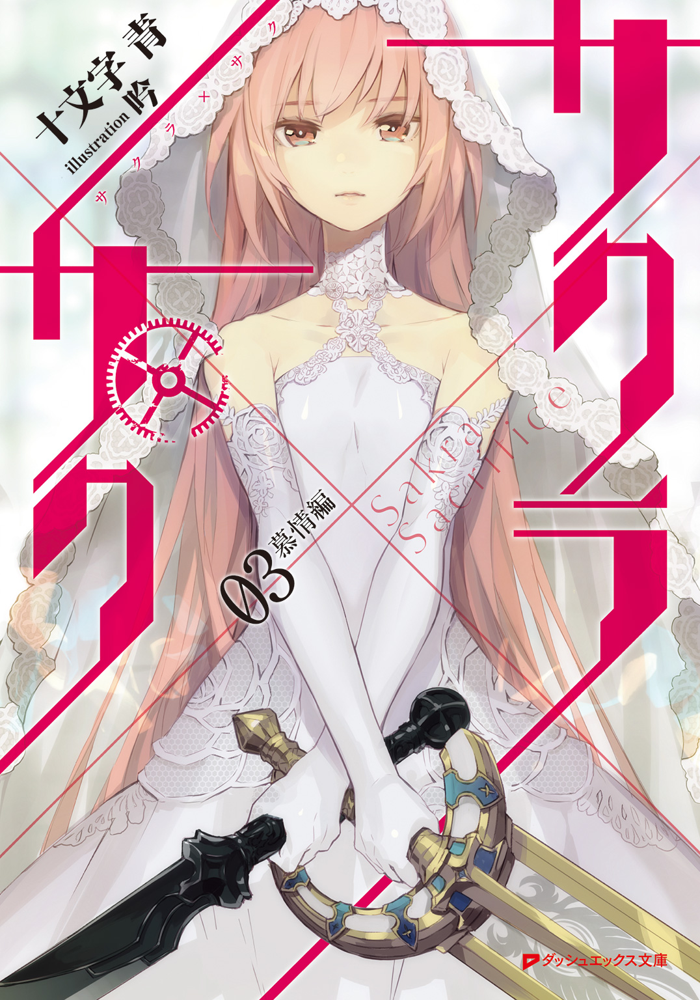
この本は縦書きでレイアウトされています。
また、ご覧になる機種により、表示の差が認められることがあります。
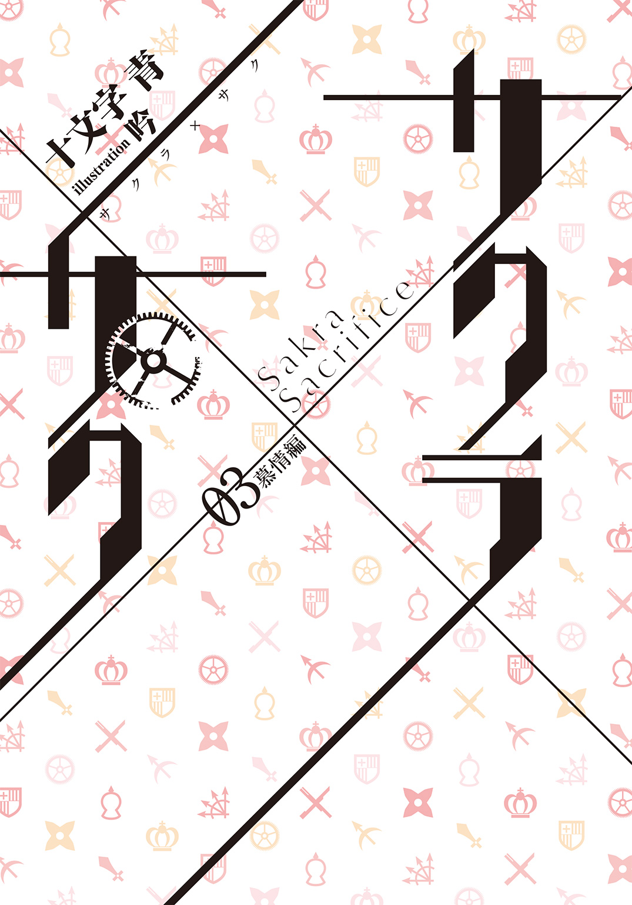
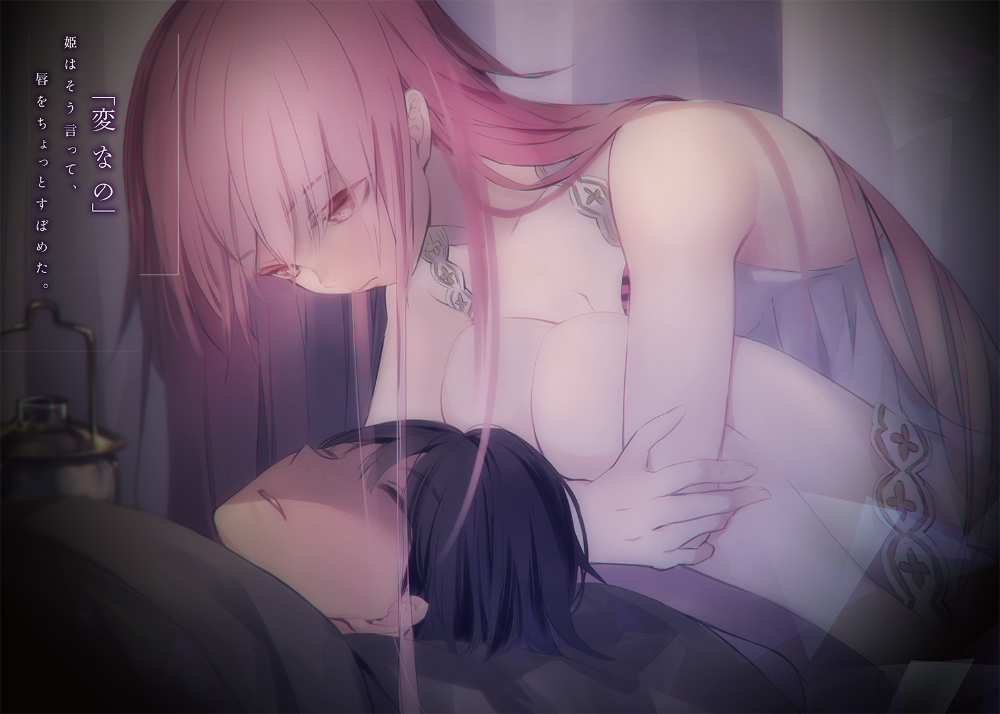
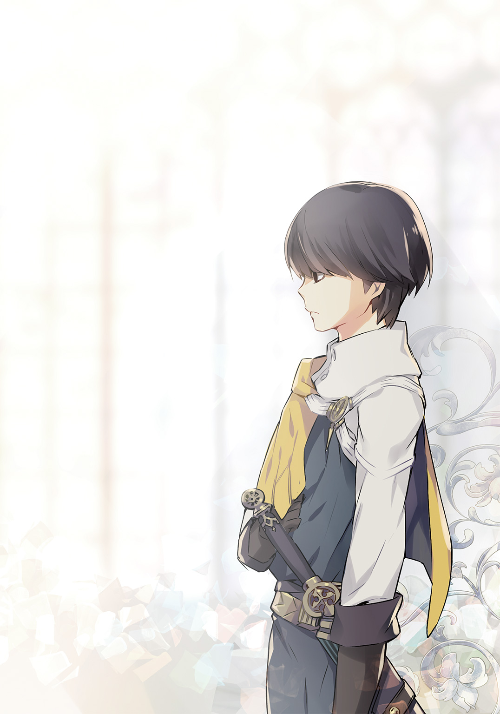
 ダッシュエックス文庫DIGITAL
ダッシュエックス文庫DIGITAL
サクラ×サク ０３
慕情編
十文字 青
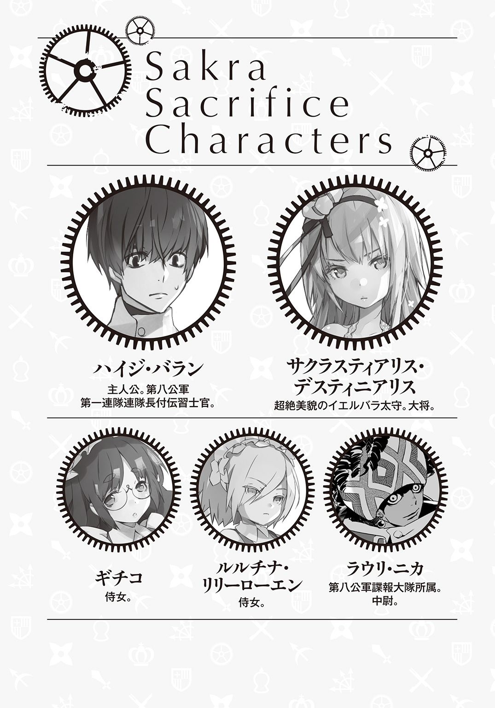
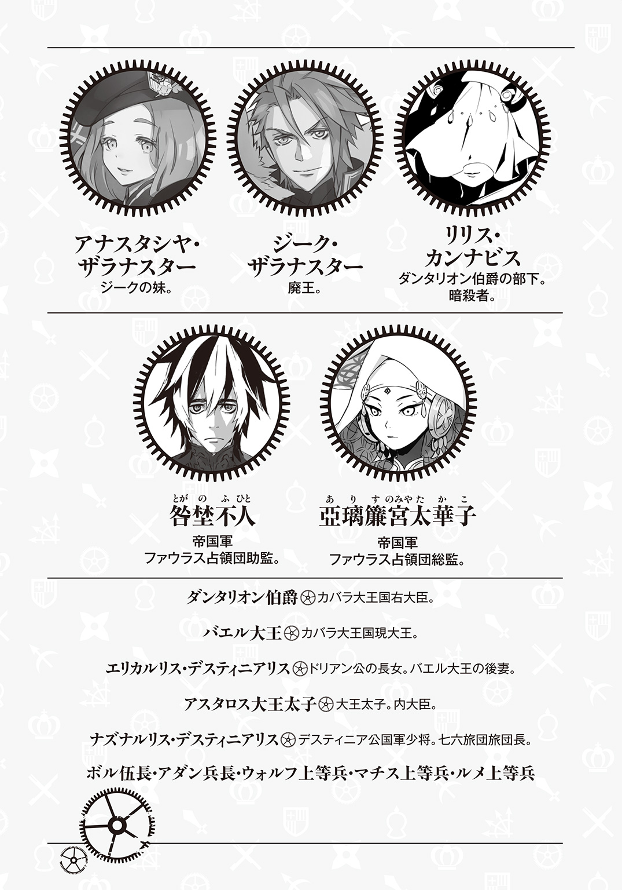
１ 宣告 PROMISE YOU NEVER
彼女は一人、進む。
翼を広げた鳥のような形状の武器搭載機材〝フェニックス〟を背負う彼女は、さながら歩く兵器だ。
その身に小型投剣革帯、腰には片刃剣、左手に四連装式弩を装着している上、フェニックスには四基の二十四連装式弩と、十字型投擲剣、片刃大長剣が据えつけられているのだ。全備重量は100キログル（約100㎏）を超えている。
それだけの重みに耐えつつ、彼女は前進してゆく。
向かう先には、土色の機骸をまとった機士、機士、機士、機士......雲霞のごとく押し寄せる、機士の大軍。
彼女は足を速める。
ついには走りだした。
丙機士たちが矢を放つ。驟雨のように降り注ぐ矢を、彼女は物ともしない。彼女は止まらない。速度をゆるめることもない。
彼女と機士たちとの距離が100メトル（約100ｍ）を切った。
90メトル、80メトル、70メトル――、
「ううううぅぅぅぅぅあああああぁぁぁぁぁぁぁ......！」
彼女の右手が鎖を引く。二十四連装式弩が猛烈な勢いで太矢を吐きだす。二十四連装式弩の有効射程は約200メトル、70メトル以下なら金属製の甲冑をも貫通する。
太矢を一本、二本と食らった機士たちがばたばたと倒れた。
二十四連装式弩は二十四の射出機によってなり、各射出機に六本の太矢が内蔵されている。射出口から太矢が放たれると、ただちに次矢が装塡されて、鎖を引きつづけるかぎり連続で発射される仕組みだ。
つまり、最大百四十四連射。
すべての太矢を撃ち尽くすと、彼女は次の鎖を引く。
さらに百四十四連射して、数十人の機士を倒しながら、彼女は進む。
今度は左手だ。彼女は左手で別の鎖を引く。左の二十四連装式弩が太矢をばらまきはじめた。また百四十四連射。
そして、最後の鎖。
「あああああああああああぁぁぁぁぁぁぁぁぁぁぁぁぁぁぁ......！」
百四十四連射。
合計五百七十六本の太矢を浴びせて、斃した機士は百人か、二百人か。
だが、文字どおり恐れを知らない人ならぬ機士たちは、かまわず味方の屍を踏み越え、彼女に向かってくる。
「無駄......！」
彼女はフェニックスから十字型投擲剣を取り外して投擲。数人の機士を十字型投擲剣で薙ぎ倒すなり、片刃大長剣を抜く。
フェニックスはもう邪魔なだけだ。素早くフェニックスを脱ぎ捨て、左手の四連装式弩をぶっ放して迫りくる機士を射倒す。白兵戦。いや、肉弾戦だ。
数人、いや、十人か、それ以上の機士たちが彼女に殺到した。大半は重槍を持って大盾で身を守る甲機士だ。
十本以上の重槍が彼女のほっそりした躰を無残に刺し貫く――、
否。
無理だ。
何物も彼女を傷つけることなどできはしない。
〝限り無く愛なき世界〟。
あらゆる打撃、衝撃を何倍にも増幅させて撥ね返してしまうその魔性の〝制約〟、反射されることのない苦痛が、彼女の精神を完全に引き裂いてしまうまでは。
甲機士たちが重槍ごとぶっ飛ばされた。飛ばされた甲機士が別の機士にぶつかる。結果、数十人の機士が折り重なって倒れた。
「おおおおおおおおぉぉぉぉぉぉぉぉ......！」
彼女はすかさず片刃大長剣を振りかぶって機士に襲いかかる。
機士たちの足が止まりかけている。
サクラスティアリス・デスティニアリス。
――姫。
「全軍突撃......！」
ローラン・ダンドリュー大佐が馬上で軍剣を掲げ、全軍を煽った。
「我らが総大将につづけ......！ クソ機士どもを皆殺しにしろ......！」
デスティニア公国ファウラス駐留軍の将兵たちが鬨の声を上げ、敵軍めがけて突進する。
先陣を切った姫に少し遅れて敵の只中に突入していったのは、体格からすると子供にしか見えない金髪の侍女だ。もっとも、子供にはあんな芸当、とても不可能だろう。
ルルチナ・リリーローエンは甲機士の大盾に跳び蹴りを見舞う。普通に考えればあっさり弾き返される。でも、そうはならない。手始めに甲機士をドーンと蹴飛ばしたルルチナは、別の甲機士の重槍を打ち払う。手甲をつけているとはいえ、素手で、だ。そうして甲機士の懐に入りこむと、その顎に拳を叩きこむ。一突きだ。小さなルルチナが、一突きでごつい甲機士を沈めてしまった。
魔性。
ルルチナもまた、魔性の持ち主なのだ。
そして、もう一人の侍女も――、
「かふうう......！」
謎の声を発しつつ、胸部のありあまる肉をぼよんぼよん揺らしながら、よたよた走っているあの女性がそうだとは、なかなか思えるものではない。
ただ、彼女が率いている――いや、位置関係で言えば、彼らは彼女の前にいるから、彼女のほうが連れられているかのようだ。しかし、事実は違う。
彼女の前に列をなし、姫、ルルチナのあとを追う恰好で敵軍に突っこもうとしている兵隊は、彼女の足許をちょこちょこ駆けている人形と同じく、彼女に操られている。
彼女――ギチコの血によって。
〝無慈悲な玩具〟。
彼らは大きな人形のような見かけで、頭部の形状はウサギみたいだったり、クマみたいだったり、ネコみたいだったり、イヌみたいだったりするが、槍と盾でちゃんと武装している。
見慣れていなければ冗談みたいな光景だ。
もっとも、彼らも機士と同じように恐れ知らずだし、一糸乱れず行動する。これ以上ないほど忠実な兵士たちだ。
姫とルルチナによって搔き乱されている機士の戦列に、ギチコの兵隊が突入してゆく。
そのころにはもう、ファウラス駐留軍のその他の将兵らも敵軍と剣を、あるいは槍を交えようとしていた。
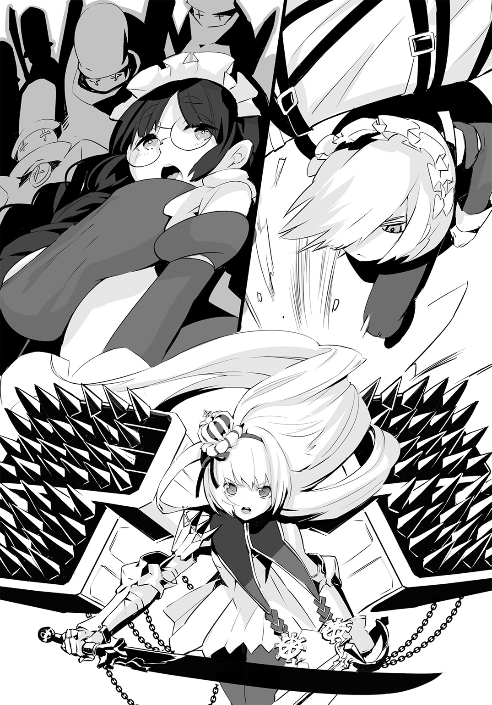
むろん、ハイジ・バランもその中の一人だった。
「百七斑......！」
ハイジは振り向かない。
「僕についてきてください......！」
騎兵のみでなるダンドリュー大佐のダンドリュー中隊が、敵軍の最前列に体当たり同然の突貫を仕掛けた。人間の兵なら恐慌に陥ってあっという間に潰走してしまうかもしれないが、相手は何しろ機士だ。すぐに態勢を立てなおす。そういう敵だとわかっていて、あんなふうに突貫できる者は決して多くないだろう。飄々としていながら、並外れて勇猛果敢なダンドリュー大佐ならではだ。
ハイジたちは、ダンドリュー中隊が敵軍に穿ったいくつもの穴に素早く入りこまなければならない。そうしないと、すぐに塞がってしまう。強引にでも押し入って、穴を広げ、深く、深く掘り進めるのだ。
そのために、斬れ。
鈍重な甲機士の素っ首を、すれ違いざまに刎ねろ。
二人目の甲機士の大盾を蹴りつけて体勢を崩させ、やはり首を斬り飛ばしてしまえ。
三人目の甲機士は、後ろに回りこんで首筋に剣をぶちこんでやった。
四人目の甲機士の膝を足蹴にしながら、五人目の甲機士の首と胴体を斬り離して、四人目は髭面のボル伍長以下、百七斑の皆に任せた。
獲物はまだまだいる。
いくらでも。
不壊の剣、ワイバーン。
第八公軍司令ピエール・アルトレッド中将から授けられたこのカバラの剣で、斬って、斬って、斬りまくってやる。
一人残らず。
「――やらなきゃいけないんだ......！ 僕は......！」
そうだろう？
もちろんだ。あたりまえじゃないか！
だって、姫が戦っている。デスティニア公国公家に魔性を持って生まれた責任を果たすために。戦って、一人でも犠牲を減らすべく、誰よりも我が身を危険にさらして戦って、国を、民を守るために、姫が戦っている。
姫が戦ってるんだよ！
あの隅から隅まで美しい躰には傷一つつくことがないとしても、痛いはずなのに、痛くてたまらないはずなのに、泣き言一つもらすことなく、姫は戦っている。戦いつづけている。
ファウラスを陥落させてから二ヶ月、帝国軍は何度となく攻めてきた。小競り合い程度のこともあれば、今日のように会戦に至るケースもあった。
じつに、そのすべてだ。誰が止めても聞き入れず、姫はそのぜんぶに参加した。
もういいですよ。いくらなんでも、そこまでやることはないんだ。充分です。ハイジだけじゃない。みんなそう思っている。駐留軍の全将兵だ。お願いだから、休んでください。どうか、我々に任せてください。我々だってやれる。戦える！
直接、面と向かって言うチャンスがあれば、僭越ではあるが、どんな処分を受けてもかまわないから、言う。――チャンスがあれば。
ないのだ。
もう侍官じゃないし！
姫の直掩は第五連隊だし！
ハイジ・バランは第一連隊連隊長付伝習士官でしかない。連隊長のダンドリュー大佐か、その副官エミール・ブリュレ大尉の命令を受けて動く。ほとんど何でも屋だが、あくまで所属は第一連隊だ。
同じ戦場に立つことはできても、姫のそばで戦うことはできない。軍人にとって、持ち場を離れるのはもっともやってはいけないことだ。ハイジは軍人で、しかも士官で、主にボル伍長、アダン兵長、ウォルフ上等兵、マチス上等兵、ルメ上等兵の百七斑五名を率いて任務に当たる。部下までいる身なのだ。勝手は許されない。
ハイジは、己のなすべきことを懸命にやり遂げるしかない。
姫が戦っているのだから、せめてハイジも戦う。
それしか、できることはない。
敵を斬って、斬って、斬って、斬って、斬って、斬って、斬って、斬って、斬って、斬って、斬って、斬って、斬って、斬って、斬って、斬って、斬って、斬って、斬って、斬って、斬って、斬って、斬って、斬って――はっと我に返り、百七斑は無事かと思う。振り返る。五人とも近くにいる。
「我々は大丈夫ですよ、少尉！ ぞんぶんにお戦りください！ ちゃんとついていきます！」
ボル伍長が笑ってくれる。
「はい、おやっさん......！」
ハイジは前に向きなおって、斬る。あちこちで、姫様、姫様、と叫ぶ声がする。姫様をお助けしろ！ 姫様をお一人で行かせるな！ 姫様に負けるんじゃない！ 万歳！ 姫様万歳！
いつからだろう。気がついたら、駐留軍の全将兵が敬愛をこめて、サクラスティアリス・デスティニアリス大将を、姫様、と呼ぶようになっていた。
ハイジとしては少し複雑だった。まるで、みんなの姫になったみたいで。
いいんだけど。
そうだ。いいことだよ。
姫は守り神だ。姫がいるからこそ、駐留軍は再三の攻撃を最小限の被害で押し返し、ファウラスに踏みとどまることができている。姫は黙して語らないが、常に姫が先頭に立って戦う理由なんて、誰にでも見当がつく。馬鹿でもわかる。――我々のためだ！
姫がいるから、ハイジたちは戦える。今日まで戦いつづけてこられた。
だから、今度は姫を勝たせたい。
この戦いでは姫に勝利を捧げたい。
ああ、でも姫はやっぱり、もっとも多くの機士を引き受けて、痛みをこらえ、敵を粉砕して突き進んでいる。
姫は、遠い――。
×
いまだ焼け跡も生々しい、とは言わないまでも、焼け落ちた主郭にせよ、大半の建物が全半焼した主要な商工業区の大部分にせよ、ほぼ手つかずだ。他に行き場もなく、荒廃した城市内にやむをえず居住している市民は、千人を超えないだろう。
七六旅団はファウラス攻略後、間もなくイエルヴァラに呼び戻された。ファウラス駐留軍の陣容は、第八公軍の第一、第四、第五、第七連隊の八千人足らずだ。
これに、常駐の非戦闘員が五百人ほど。そして、千人余りが物資輸送や負傷者を後送するためにイエルヴァラ、ファウラス間を往復している。
城門を閉ざして守兵を配置していても、もし帝国がこちらの二倍、三倍の機士を繰りだしてきたら、きっと長くは保つまい。
「......わたしらしくもない」
サクラは城壁の上を歩きながら弱い風の匂いを嗅いでいた。
何度目かの防戦を日が昇っているうちに終えて、もうすっかり夜が深まっている。
「あっ、姫様！」
一定間隔で配置されている見張りの兵がサクラを見つけて、笑顔で敬礼した。
こんなとき、どうすればいいのか。サクラには皆目わからない。
ただ、無視するのはよくない――ような気はなんとなくするので、うつむくついでに軽くうなずいてみた。
「姫様、見回り、お疲れさまです！ どうか、お気をつけて......！」
「っ......」
違うのに。
サクラはべつに、見回っているわけじゃない。かといって、弁解することもできず、足早に見張りの脇を通りすぎる。
「姫様にお会いできるなんて、運がいいな、俺......」
見張りがそんなことを呟く声を聞いてしまって、胸苦しくなった。――何なの、いったい。おかしいんじゃない？ 意味不明。こっちまでおかしくなりそう。
「......わたしは、ただ――」
今だって、寝つけなくて、ルルチナやギチコについてくるなと言い渡して散歩に出ただけなのだ。見回りなんかしていない。そんなことは考えもしなかった。
ファウラスに第八公軍の半分を留め置いている、上の――デスティニア公国軍総司令部、ひいてはサクラの父であるドリアン公の判断についても、疑問こそあれ、批判はできない。深く考えていないからだ。
サクラはイエルヴァラ太守の任を解かれ、中将に昇進したナズナルリス・デスティニアリス、あの出来のいい妹が新太守に据えられた。そのことに対しても、とくに感慨はない。サクラはファウラスを陥落させるまでの間に大きなポカをやらかした。ナズナは副将でありながら実質的には遠征軍を統率して、目標達成に多大なる貢献をした。資質からいっても、ナズナのほうが太守にふさわしい。正直、もともとサクラには荷が重かった。
戦う以外、能がない自分は、一兵卒でもいいくらいだ。サクラは本気でそう思っている。
難しいことは考えたくない。
どうせ考えられない。
目の前に敵がいたら戦う。戦って、排除する。それだけでいい。
実際、そうしてきた。
それだけなのに、何なの？
「あっ、姫様！」
まただ。また見張りが。しょうがないことではある。見張りの兵は一定の間隔で置かれているのだから。城壁の上を歩いていれば、どうしても見張りに出くわす。
「姫様、昼間の戦い、お見事でした！ 胸が熱く――」
だけど、もういやだ。耐えられない。サクラは城壁から身を投げた。
「ああっ......！ 姫様......!?」
身投げしたところで死ぬこともできない、呪われた我が身だ。サクラは何メトルだか知らないが落下して、着地した。
両足から全身へと恐ろしい痛みが伝わって広がる。脳が焼けそうだ。だから何？ 痛みなんて慣れっこだ。どうせ躰が壊れるわけじゃない。いっそめちゃくちゃに砕けてしまえばいいのに、びくともしない。
「姫様ぁぁ......！」
見張りが叫んでいる。サクラは駆けだした。逃げろ。廃墟のような街並みを、走って逃げるしかない。
でも、何から逃げているのか？
わからない。
どこまで逃げれば、逃げおおせるのか？
わかるはずもない。
考えたくない。敵が現れればいいのに。そうすれば簡単だ。戦えばいい。敵を倒せばいい。敵だけだ。必要なのは、敵だけ。あとは何もいらない。だとしたら、ここは理想的だ。ファウラス城市から一歩出れば、イエルヴァラへと繫がる細い補給線をのぞいて、帝国領なのだから。敵に囲まれている。敵しかいない。味方さえいなければ。自分一人でいいのに。
四つ辻の真ん中で足が止まった。
道は前後左右に延びているのに、どこにも行けないような気がした。
「敵......敵......敵......敵が、いれば......敵......敵......敵......敵......敵、敵、敵、敵、敵......」
これは罰なのか？ 父は、ドリアン公は、またサクラに罰を与えているのだろうか？ 物心がついたころからずっとそうだったように？ もしそうなら、自分一人にして欲しい、とサクラは願う。みんな引き払わせて、サクラだけを残せばいい。そうすれば、サクラはドリアン公の望みどおり、魔性が果てるまで一人で戦う。ちゃんと死んでみせる。
サクラは髪の毛を引っかきまわす。
「......やめて......お父様......もう、誰も苦しめないで......わたしだけでいいから......」
それとも、これも罰なのか？
サクラにとっては、一人きりじゃないほうが苦しい。そこまで見越した上で、ドリアン公はあえてこうしているのか？
馬鹿らしい。
サクラ一人をどうこうするために、そんなことをするものか。きっと、ファウラスを確保しないといけない政治的な事情とか戦略上の理由とか、そういったものが何かあるのだろう。そのために、サクラを利用しているのだ。サクラの魔性を。第八公軍の将兵たちを。
士官にも下士官にも兵卒にも、家族や親類、友人がいるのに。彼らだって命は惜しいだろうに。サクラとは違うのに。
こうなったら、一人で討って出るというのはどうだろう？
単身、帝国領内に突っこんでゆくのだ。機士を見かけたら、手当たり次第斬り伏せる。そして、どんどん進んでゆくのだ。行けるところまで行く。この手で皇帝とやらを殺す。そうしたら、戦いは終わるだろうか？
できっこない。
皇帝の居場所さえ、サクラは知らないのだ。
何も知らない。
何一つ。
立ちつくしていると、足音が聞こえてきた。近づいてくる。巡回の兵だろうか。でも、明かりを持っていないようだ。
もしかして。
――もしかして、何？
何だっていうの？
サクラはなぜか狼狽した。
慌てふためいているうちに、真っ暗な闇の向こうから彼が姿を現して、びくっと跳ねあがるようにして立ち止まった。
「あ、あ、あっ、あ、ああ、あ、あああああやややややややっぱり......いやでも、まさかっていうか、なんていうかその......」
サクラは下を向いて、歯を食いしばった。
だめだ。どうしても彼の顔を直視できない。
全身が震える。
何？ 何なの、これ？ 怖い？ 怖がっている？ 何を怖がることがあるのだろう？
「え、えええ、えええええと、その、ぼ、僕はあの、ランニングっていうか、眠れなくて、ちょっと走ってたんですけど、ひ、ひ、姫......いや、あのた、たたたたた、大将、閣下、は、こ、ここここんなおおおおおおおお時間に、な、何を......いぃぃぃや、そ、そんなのあれですよね、なんていうか、教えてもらうあれはないっていうか、つつつつまり、あの、その、ぼ、僕はもう、あれなので、侍官じゃないので......」
「そのとおり」
きっぱり言ったつもりだった。
図らずも、声が揺れてしまった。
顎が、がくがくする。
胸が痛い。潰れてしまいそう。
「少尉は、わたしの、侍官じゃない」
一語一語、力をこめ、区切って言った。そうしないと、ちゃんと声にならないのではないかとサクラは恐れた。
「で、ですよねええええええ!?」
少尉は大声でそう言ってから、ははは......と弱々しく笑った。
「そ、そうなんですよねえ......も、もちろん、わかってます。こうやって、ちょ、直接、お話しさせて、いただくのも......畏れ多いというか、な、な、何だろう、ぶ、分不相応と言いますか、そうですよね、はい、ほ、本当に、申し訳ありません......」
怖い？ サクラは怖がっているのだろうか？ 何か違うような......？
腹のあたりが熱い。何か熱いものが腹の底からせり上がってきて、潰れそうな胸を焦がす。
サクラはまだ震えている。でもこの震えは、さっきまでのそれとは違う。
頭にきている。
腹が立ってしょうがない。
何に対して？ 誰に？
まあ、普通に考えれば、決まっている。
少尉だろう。
「......何を、謝ってるの」
「え」
「何を謝ることがあるの」
「いや、あの、ぼ、僕は、その......」
「謝らないで」
「は、はい！ ひ、姫がそう、おっしゃるのでしたら......」
イライラする。何なの、この男。戦場では別人みたいなのに。まるでサクラを恐れているかのようだ。そんなに怖い？ 怖いのかもしれない。魔性持ちだし。でも、それは少尉だって同じだ。あのときも――それから、あのときも、人間離れした戦いぶりだった。けっこう、すごかった......と、思う。客観的に見て。それなのに、何？ この様は。てんではっきりしない。気弱そうで、頼りなくて、うざい。雑魚っぽいし、気持ち悪い。邪魔くさい。
サクラは回れ右をして歩きだした。
「あぁっ!? ひ、姫......!?」
呼び止められて――なぜ、止まったりしたのだろう？
相手はうざくて、気持ち悪くて、邪魔くさい、元サクラの侍官で、今は違う、ハイジ・バラン少尉なのに。
「何」
「え、ええっと、いや、あの、とととととくに、な、何も......」
「じゃあ、声をかけないで！」
「......す、すみませんでした。申し訳ありません......」
「っ......！」
眩暈がする。もう躰中の血が沸騰して、頭が爆発しそうだ。
サクラは、今度は走った。
「あ、ひ、姫......！」
性懲りもなく。
サクラは当然、止まったりしなかった。
「隣ではないですけど......！ 僕、姫と一緒に戦わせてもらってます......！ 駐留軍のみんなが......！ 姫は、決してお一人じゃないです......！」
「ばか......！」
思わず叫んでしまった。
やっぱりそうだ。
サクラは確信した。
――わたし、少尉のことが、嫌いなんだ。
×
「......昨夜はせっかく、お会いできたのになあ......」
ハイジは、くっふふふ、と笑った。なぜ笑っているのか、自分でもさっぱりわからない。
「やっぱりなあ......身分が違うしなあ......勘違いしちゃだめだってことだよなあ......そりゃそうだよなあ......あたりまえだよ......くっふふふ......馬鹿だなあ、僕......馬鹿って、思いっきり言われたしなあ......そのとおりでーす......くっふふふ......いやいやいやっ！」
激しく頭を振る。
「こんなこと考えてる場合じゃないぞ、ハイジ・バラン！ 僕は士官なんだっ！ 士官、士官、士官！ しっかりしろ！ えい、えい、えーい......！」
びたーん、びたーん、と頰を叩いて気合いを入れた。
「少尉......」
声をかけられてから、一人じゃなかったことを思いだした。
「はっ！ あ、は、はい!?」
振り返ると、ボル伍長が髭面を引きつらせていた。
「あー、その――大丈夫ですか」
「だだだだ大丈夫ですよ!? 元気です、僕は元気！」
「まあ、少尉は何のかの言って、たいていいつも、お元気そうではあるんですが......」
ボル伍長だけじゃなくて、あとにつづくアダン兵長、ウォルフ上等兵、マチス上等兵、ルメ上等兵も怪訝そうだ。というか、気遣わしげなのか。
心配されている。心配させてしまっているのだ。
ハイジと百七斑は城市内の巡視を終えて、報告のため、駐留軍司令部に戻ろうとしていた。それで、気がゆるんでいたのだろう。
「す、すみません！ しっかりします！ さあ！ 司令部に帰投しましょう！」
無理やり足どりを軽やかにして、司令部を目指す。仕事だ。まだ仕事中なのだから、とにかく仕事に専念しよう。それが一番だ。それしかない......。
市北西部はいわゆる屋敷街で、火災による被害が比較的少なかった。駐留軍は、その中でもひときわ大きなお屋敷と、その庭に張った大小の天幕や、近隣の建物数棟に、司令部の機能を集中させている。
駐留軍司令である姫はもちろん、お屋敷にいる――はずだ。頻繁に脱走するみたいだが、敵を迎え撃つときをのぞけば、市外に出ていってしまうことはないらしい。伝え聞くところによると、軍議にもちゃんと出席しているという。
あの姫が。
姫はしっかり役目を果たしている。
なので、姫は今、お屋敷の中にいるだろう。
ボル伍長以下百七斑を門の前で待機させ、ハイジはお屋敷の敷地に足を踏み入れた。お屋敷の中に飛びこみたいのは山々だが、残念ながらそうもいかない。用があるのは庭の天幕だ。
天幕の中では、小柄で癖毛ボーボーで童顔で根暗そうなラウリ・ニカ中尉と数名の士官が、机の上の書類だの何だのとにらめっこしていた。全員、忙しそうで、入ってきたハイジには見向きもしない。
エミール・ブリュレ大尉ら第一連隊の幕僚は大半が駐留軍司令部に異動して、第一連隊司令部は現在、第八公軍諜報大隊出身のニカ中尉たち若手の士官によって運営されている。
こういった場の空気は、良きにつけ悪しきにつけ中心人物の個性に左右されるものだが、まさしく今の第一連隊司令部はニカ中尉っぽい。
「ハイジ・バラン少尉であります！ 市中巡視の報告にあがりました......！」
敬礼して言うと、ニカ中尉はちらっとハイジを見て、
「ヤー」
とだけ返した。
これだ。これがニカ中尉なのだ。無口というか、無駄なことは一切喋らない。返事はたいてい「ヤー」。本人曰く、そのヤーは肯定でも否定でもあるという。どっちだよ！
ハイジはニカ中尉が感情を露わにするところを一度も見たことがない。常に何か考えているようだが、何を考えているのかは不明だ。
変わった人だなあ、と思わずにいられない。でも、有能だ。それは間違いない。おかげで、ブリュレ大尉が駐留軍全体を見るようになってからも、第一連隊は何の問題なく動いている。これはとてもすごいことだ。それにしても、変わってるよなあ......。
ハイジが必要事項の報告をしても、ニカ中尉はうなずきもしない。聞いているのやら、いないのやら。
まあ、毎度のことだ。
「それでは、失礼いたします！」
退出しようとしたら、
「あ」
と、ニカ中尉が右手をあげて、人差し指を動かした。こっちへ来い、ということ......？
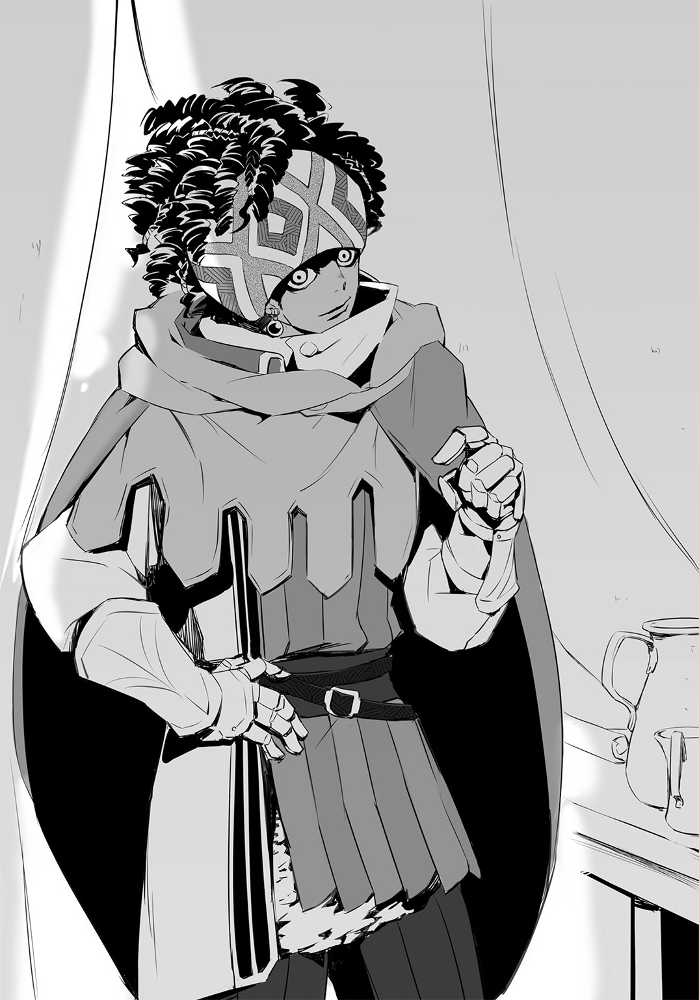
ちょっと迷ったが歩み寄ると、ニカ中尉はハイジを見ずに呟くように言う。
「まだ公表されてないが、駐留軍は近日中に撤収を開始する。当然、本国からの命令で」
「あ......そうなんですか。てっ――えええええええええええええええええええええええええええええええええええええええええええええええええええええええええええええええ......!?」
吃驚仰天して、つい大声を出してしまった。
ニカ中尉は表情こそ変えなかったが、耳を塞いで、
「うっせーな......」
「もっ、申し訳ありませんっ」
意外と口が悪いんですね......!?
――と思ったが、言わないでおいた。
え、でも、撤収？ 本国からの命令で？ ということは......？
イエルヴァラに戻る、ということだ。あたりまえか。
帰れるのだ。
やっと。ようやく。
「......喜ぶべき、なんでしょうか。で、でも、というか、ともあれというか、我々駐留軍は、被害を最小限度に抑えて、よく防戦したのではないかと......」
「ヤー」
だから、それって、はい？ いいえ？ どっちなの!?
ニカ中尉は唇に人差し指を当ててみせた。
「とりあえず口外無用で」
「は、はい！ 了解しました！」
もっとも、わざわざハイジが言い触らしたりしなくても、その情報はあっという間に駐留軍中に知れ渡った。
その翌日には撤収の用意が始まった。
×
来たときはあんなに大変だったのに、帰り道は旅行のようなものだった。
それはむろん、ファウラス駐留軍の全将兵と輜重等々にたずさわる非戦闘員が、可及的速やかに準備を進めてくれたおかげだ。それに、幕僚たちは知恵を絞って、適当な時機を見計らってくれた。
サクラとしては、喜びも安堵もなかった。
あくまで、サクラ個人としては。
ただ、みんな帰りたかっただろう。将兵にとって、ファウラスに踏みとどまって戦う理由といったら、せいぜい、命令だから、命令には従わざるをえないから、というくらいしかなかったはずだ。それくらいのことは、サクラも理解していた。
だから、よかった......のだろう。
バエル大王38年七月二十六日。
ファウラス駐留軍はルヴァラ廃地を抜けて、およそ三ヶ月ぶりにイエルヴァラに帰還した。
その日、イエルヴァラ北門は開け放たれ、多数の兵、市民が列をなして、駐留軍を城市内へと迎え入れた。
北門上の楼閣には、太守公衣を身に纏った新太守ナズナルリス・デスティニアリス中将の姿があった。
城市に入るとすぐ、第八公軍司令ピエール・アルトレッド中将が、幕僚長リオネル・カーター大佐以下、第八公軍の精鋭を引き連れて、駐留軍に敬礼した。
先頭のサクラが黙って返礼すると、第八公軍や市民からどよめきが起こった。
ただ、ちゃんと礼を返しただけなのに。
むかっときたが、太守だったころは、たしかに何事も無頓着というか、おざなりだったかもしれない。
「姫......」
ピエールはなぜか、涙ぐんでいる。
「しばしお目にかからない間に、ご立派になられて......」
「なってないっ」
相手が虚弱体質のピエールでなければ、ぶっ飛ばしてやるところだ。
「......そんなのどうでもいいから、みんなを早く休ませてあげて」
「おお、姫」
ピエールはふらついて、カーター大佐に支えられた。
「なんと......なんと尊いお心ばえ......ごふっ、ぐふっ、がうげふっ......」
「あなたも休んだほうがいいんじゃない......」
「いえいえ、私は平気で――ごほっ、ぐはっ、べふっ......」
「大佐、ピエールを下がらせて」
「はっ。――さあ、司令」
カーター大佐がピエールを抱きかかえるようにして脇へ連れてゆく。すぐさま別の士官が車椅子を持っていって、ピエールを座らせた。
「まったくもう......」
サクラはため息をついた。振り返って、北門上の楼閣を見やる。――ナズナ。
妹がほとんど平たい胸を張って、姉を見下ろしている。少し距離があるので、表情まではよくわからない。
どうでもいいことではある。
妹がどう思っていようが、サクラには関係ない。
先にナズナがファウラスを発った際も、姉妹は通りいっぺんの挨拶しかしなかった。いや、通りいっぺんとは言えないか。
『それじゃあ、お先に失礼するわ。このナズナが就任したその瞬間、太守じゃなくなる無能なサクラ馬鹿姉様』
『ばいばい』
何しろ、これが二人の間で交わされた唯一の会話なのだ。
放っておいても、どうせ妹はうまくやるだろう。サクラなんかに口出しされたくはないだろう。サクラも言うことなんてない。
どうでもいい。
面倒くさい。
何もかも。
「サクラ様」
後ろに控えているルルチナに声をかけられた。
「ええ」
サクラはうなずいて前に向きなおり、歩きだした。
不意に思った。
このまま主郭に行って、それから、サクラはどうすればいいのだろう？
イエルヴァラの主郭にはもう、サクラの居場所はない。駐留軍は解散するので、将兵たちは第八公軍の駐屯地に戻って原隊復帰みたいな形になるのだろうが――サクラは？ 何か、誰かに言われただろうか？ 命令書に何か書いていなかったか？
たしか、駐留軍をイエルヴァラに帰還させる、というようなことしか、命令書には書かれていなかったような気がする。自信はないが、たぶん。
それで自分の仕事は終わりなんだ、お役御免なんだ、というふうにしか思っていなかった。その先のことなんか、これっぽっちも考えなかった。
正直、ファウラスを離れてから今に至るまで、サクラはなんだかぼんやりしていた。
ようするに、いつもどおりだ。どうでもいい。
――でも、どうすればいいの......？
ともかく、終わる。
もうすぐ終わろうとしている。
サクラは目を伏せて黙々と歩いた。歓声に応える気にはなれなかった。勝ったわけでもない。何も得ていないのだ。
そうじゃない、と考えたりもした。通りの両側に集まっている人々の中には、将兵の家族や友人、恋人もきっといるだろう。だとしたら、彼ら、彼女らは、単純にその帰りを喜んでいるに違いない。
それはよかった、と素直に思える。
でも、死んでしまった者もいる。
サクラがもっと上手に戦っていれば、もっと強ければ、死なずにすんだ者だっていたかもしれない。
少なくとも、サクラには将兵の生還を喜ぶ資格はないだろう。命を落とした者が一人でもいれば、それはサクラのせいなのだ。
「......消えたい」
こっそり呟いてみた。
やがて、行く手にそびえる主郭の前に、一人の男がたたずんでいることに否応なく気づかされた。
男は猫を模した面で素顔を隠している。
あのくそったれ。
男の前で立ち止まる前に、サクラは胸の裡でそう罵った。すると、男はそれが聞こえたかのように笑ってみせた。面をつけたままで男の顔はわからないのに、どうしてか嗤っているように見えた。
「やあ。お帰り、サクラ」
デュランタリアン・デスティニアリスが、ただ妹を出迎えるためにここにいるとはとても思えない。太陽が北から昇って南に沈むよりもありえない話だ。
公国軍少将で、特立監軍にして軍特使、さらにはドリアン公のみの命を受けて特殊な任務を遂行する特別査問官でもある。
そうか、とサクラは納得した。
――デュラン兄様。
ファウラス攻略を命じられたときと同じように、またもやこの男に運命を申し渡される。どうもそういうことらしい。
きっとろくでもないことが待っている。それを聞かされた妹がどんな表情をするのか。デュランはさぞかし楽しみにしていることだろう。
この男を愉快がらせてやる義理はない。
何を言われようと、決して動揺はすまいとサクラは心に誓った。
「サクラスティアリス・デスティニアリス大将に......！」
――と、後ろから声があがった。
一人や二人じゃない。数十人の男が同時にサクラの名を呼んだのだ。不意を突かれて、サクラはつい、振り向いてしまった。
サクラのあとに列をなしている駐留軍の全将兵が、一人の例外もなく背筋をぴんとのばし、直立不動の姿勢をとっていた。
ルルチナや、ギチコや、チヌコや、人形の兵隊まで。
第一連隊連隊長ローラン・ダンドリュー大佐が、無精髭をこびりつかせた男臭い顔をにやりと笑わせた。
「我らが姫様に......！」
ダンドリュー大佐が言いなおすと、将兵たちが一斉にそれに倣った。
「――我らが姫様に......！」
「敬礼......！」
ダンドリュー大佐の号令一下、全将兵が同時に敬礼した。
サクラは動けなかった。
息もできない。
目が痛い。
まばたきをしないと。
背筋や肩甲骨のあたりがぞくぞくするのは何だろう？ 寒いのか？
気持ち悪い。
具合が悪くてしょうがない。
この人たちは、おかしい。
いやになる。
逃げたい。どこか遠くへ行きたい。胸が苦しい。何かが詰まっている。空気だろうか？ そんなにたくさんの空気を吸いこんだ覚えはないのに。いずれにせよ、吐きだせばいい。でも、息を止めていたほうがいい。そう思える。
何か、出てきそうで。
今、息を吐いたら、こぼれてしまいそうで。
「おめでとう」
手を拍つ音がした。祝うでも、讃えるでもなく――揶揄するように。
サクラはかっとしてデュランに向きなおった。
デュランは拍手しつづけた。
「おめでとう、サクラ。兄として、とても嬉しいし、鼻が高いよ。こんなふうに兵たちから感謝され、敬意を集め、親しみさえ持たれているなんてね。あのサクラが！ 正直、意外でもあるよ。その驚きも、ぼくにとっては喜びだ。望外の、と付け加えてもいい。がんばったんだね、サクラ。そして、みんな、おまえのがんばりを認めてくれたんだ。評価してくれている。偉いね、サクラ」
「黙って」
「ぼくが？ どうして？」
「......侮辱しないで」
「誰が？ ひょっとして、ぼくが？ 誰を？ おまえを、かい？」
「わたしのことは、どうでもいい」
「そんなことはないよ、サクラ。どうでもよくなんかない。おまえはぼくの大事な妹だ。もちろん、おまえを軽んじることも、辱めることも、ぼくは望んでいない。もしそう感じたのなら、謝ろう」
「わたしのことはどうでもいいと言った！」
「じゃあ、ぼくが誰を侮辱していると言うんだい？ もしかして、きみの兵たち？ だとしたら、心外だな。ぼくは我が公国のために身命を惜しまず戦う兵らを心から敬っている」
「戯れ言はよして」
「ぼくは真面目だよ。常にね」
「そう言うなら、お面くらい外したらどう」
「ぼくの美しい顔を見たいのかい？」
「っ......！」
「そう怒るなよ、サクラ。おまえにはもっと、しとやかになってもらわないと困る」
「無理」
「無理でも何でも、おまえはそうしないといけないんだよ、サクラ」
デュランは猫を模した面を外した。
やっぱり、嗤っている。
この男はいつだってこうだ。
嫌いだ。
サクラはこの男のことが心底、嫌いだ。
大嫌いな男がおもしろがるところなんて、見たくない。絶対、喜ばせたりしない。
サクラは身構えた。デュランが次に何を言っても、ああそう、だから何？ と受け流してやる。できるはずだと思った。デュランは急に真顔になった。
「だって、おまえはこれからカバラ大王国のアスタロス大王太子殿下に嫁ぐんだからね。少しは女らしくしないと、今のままじゃあ、先方が扱いかねるだろう？」
×
この太守執務室、不届き千万なことに先代太守はほとんど使っていなかったらしい。ゆえにわりときれいだったが、すてきに改装して見栄えも機能性も十倍以上高めた。
当然、椅子は真っ先に座面の高いものに換えた。
着座した太守が入室者に見下ろされるようではいけない。椅子に座っていても、太守は他の者たちを見下ろせる。そうでなくてはならない。
ナズナは太守の椅子に腰かけ、優雅に脚を組んで、ゆったりと腕組みをし、あでやかに少しだけ首を傾けていた。
「ふっ......」
微かに笑う。
「いい気味だわ、馬鹿姉様」
「――ナズナ様？」
執務机の傍らに侍っている親衛隊長〝Ｘ〟隊長アンドリュー・パルマーが、日焼けした顔を上に向けてナズナを仰ぎ見た。
「何かおっしゃいましたか......？」
「いいえ。何も言っていないわ、パルマー」
「さ、左様でございますか......！ 私としたことが、空耳とは......何たる不覚！ どうか、どうかこのパルマーめに、罰を！ 罰をお与えください......！」
「しょうがないクズね」
ナズナは執務机に置いてあった文鎮をパルマーめがけて投げつけた。パルマーはもちろん、よけずに額で文鎮を受け止める。ガツッと、なかなかいい音がして、七三分けにしたきらびやかな金髪が乱れた。パルマーの額に血がにじんだ。
「文鎮！ いただきました......！ ああ！ ナズナ様の文鎮......！ ありがたき！ ありがたき幸せ......！」
「ふんっ。勝手に幸せになるなんて、図々しいにも程があるわ」
「申し訳ありません！ ですが、このパルマー、こうしてナズナ様にお仕えする一分一秒が、筆舌に尽くしがたい幸福なのです......！」
「とんだ幸せクズ野郎というわけね」
「まったくもって、おおせのとおりでございます......！」
「幸せ――」
ナズナはたおやかな指で形のいい顎をそっとつまんだ。
「望まぬ結婚を強いられた女は、幸せになれるのかしら」
「はっ......？」
パルマーは血をぬぐいもせずに碧眼をまたたかせた。
「結婚、でございますか......？ それは――しかし、多少なりとも身分ある者の結婚となりますと、たいていは望んでするものではないと存じますが」
「あら、パルマー。ずいぶん月並みなことを言うのね」
「はっ......！ 申し訳ありません......！ このパルマーめは、生涯、ナズナ様にお仕えし、身も心も無に帰するまで捧げさせていただくつもりでおりますので、結婚などには終生、縁がないものと......！ ゆえに、結婚という事象についての理解が世人より深まることもないのだと申し上げれば、これは見苦しい言い訳になってしまいますので、パルマーめの無知蒙昧をお責めいただければ幸い至極に......！」
「いいのよ。たいしたことじゃないわ」
「――僭越ながら、令姉殿下のことでございますか......？」
「パルマー！」
「ははっ！」
「余計なことを......！」
きつくお仕置きしてやりたくなったが、ナズナは思いとどまった。
姉のこと。
たしかにパルマーの言うとおりだ。サクラスティアリス・デスティニアリス。ナズナはあの馬鹿姉のことを考えていた。
ナズナは脚を組み替えて、下唇を軽く嚙んだ。
「お父様とフリージアン兄様は前々からアスタロス大王太子との縁組みを狙っていたわ。それはナズナもわかっていたのよ。でも、花嫁候補はアマリリス姉様だとばかり――」
「いずれにせよ、むごいことですな......」
パルマーがめずらしく沈痛な面持ちで言った。
「アスタロス大王太子のご高名は、つとに知られております」
「アマリリス姉様なら、案外うまくおやりになるんじゃないかとナズナは思っていたわ。アマリリス姉様は、ご自分一人の世界をお持ちになっている方だから。それに、ちゃんとお立場をわきまえていらっしゃる。あの馬鹿姉様とは、違う」
「ナズナ様は......」
パルマーは言い淀んだ。
ナズナは顎をしゃくってみせる。
「何？ 言ってごらんなさい、パルマー」
「はっ――......ナズナ様は、サクラスティアリス殿下の身を案じておられるのですか......？」
「そう見える？」
とっさに怒らなかったことが、ナズナ自身、予想外だった。パルマーも驚いている。
「くだらないわ。そんなわけがないでしょう？ なぜ、ナズナがあの馬鹿姉様のことを心配なんかしなきゃならないのかしら。ただ――」
「ただ......？」
「言うまでもなく、これはとても重要な縁談なのよ。周知のとおり、もはやカバラ大王国には往時の力はない。とはいえ、名目上の宗主国であることに変わりはないわ。我がデスティニア公国がエーデルラント、ロンダール両公国を従えるためには、カバラ大王国が持つ大権は必要なのよ。もっと言えば、大王の大権と、デスティニア公国の圧倒的な武力がそろってこそ、大王国と三公国は帝国に抗しうる力を発揮できる。帝国の侵攻がなければ、デスティニア公国が二公国を制圧して、お父様が大王位を簒奪するという選択肢もあった。――でも、帝国と国境を接して、その圧力を受け止めながらとなると、それは現実的じゃない。必ず帝国につけこまれる。大王国と三公国は団結しなければならないのよ。是が非でも。それ以外に道はない。バエル大王が七十二歳と高齢で、健康状態も決して思わしくはないとされる以上、いつなんどきアスタロス大王太子の即位という事態が起こらないともかぎらないわ。我がデスティニア公国はしっかりと手綱を握っておかねばならない。あの馬鹿姉様にそれができるのかしら？ そもそも、そのあたりの事情を把握しているのかしら？ あやしいものだわ。お父様とフリージアンお兄様は、どうしてアマリリス姉様じゃなく、馬鹿姉様を......」
「噂、でございますが」
「いいわ。言ってみなさい、パルマー」
「何でも、アスタロス大王太子ご自身が、もともとサクラスティアリス殿下にご執心だとか」
「大王太子が馬鹿姉様を欲しがったというの？」
「申し訳ありません！ このパルマーめが愚劣な小耳に挟んだ噂にすぎないのですが......」
「あなた、本家は大王国だったわね。その方面から得た情報なの？」
「ははぁっ......！ さすがはナズナ様でございます！ ご明察のとおりです！ アスタロス大王太子の例の悪癖も、サクラスティアリス殿下に対してやけに執念深く試みられたとか」
広く知られている事実だが、アスタロス大王太子は暗殺癖の持ち主だ。幼児のころから手当たり次第に小動物を殺し、長じると人を使って誰彼なしに殺させるようになったというから、癖というか、性質なのだろう。
大王国と三公国の要人、貴人で、アスタロス大王太子に命を狙われたことがない者はもぐりだ、とさえ言われている。
むろん、ナズナも命を狙われたことがある。判明している範囲では、二度。
二度目は半年ほど前で、ナズナの寝込みを襲おうとした暗殺者を、パルマーが斬り捨てた。
「――あの忌々しい魔性のおかげで、馬鹿姉様なら殺しても死なないわ。大王太子にはお似合いなのかもしれないわね」
「ごもっとも！ ごもっとでございます......！」
「何にせよ、馬鹿姉様がどうなろうと、ナズナの知ったことではないのよ。大王太子に殺されてしまうことなく、生きていてくれさえすればいい。そうすれば、我がデスティニア公国は大王国に決定的な影響を及ぼしつづけることができる......」
言わば、人身御供なのだ。
それでいて、取って食われてしまっては困る。
すでに実効的な力をほぼ失っている大王国にとっても、デスティニア公国との絆は生命線のはずだ。自分から頼みの綱を断ち切るような真似はしないものだが、アスタロス大王太子ならやりかねない。だが、馬鹿姉を始末するとなると、そう簡単にはいかないだろう。
「......適材適所、ということね」
ナズナは椅子の背もたれに躰を預け、目をつぶってため息をついた。
これでいい。
馬鹿姉は適任なのだ。
大王国に嫁ぐとなると、この先めったに会うことはないだろう。あの不愉快な面を見なくてもいい、ということだ。
一石二鳥ではないか。
「すばらしいわ」
それなのに、なぜこんなにも苦いのだろう......？
『馬鹿なことを言うなぁぁぁぁぁぁぁぁぁぁぁぁぁぁぁぁぁぁぁぁぁぁぁ......！』
不意に、あのまだ若い少尉の声と顔が浮かんだ。
たかが少尉の分際で、このナズナルリス・デスティニアリスを叱りつけた。
『あなたは大切な人だ！』
青二才が、臆面もなく、あんなことを。
『――死なせたくない！ 死なせてたまるものか！』
まっすぐで、力強く、抗いがたい、真情のこもった言葉だった。
『だいたい、十三歳の女の子が、命を粗末にするようなことを言っちゃだめなんだ......！』
十三歳の女の子。
ドリアン公の娘で、魔性の持ち主で、連戦連勝の類い稀な軍略家であるナズナを、言うに事欠いて、女の子呼ばわりするなんて。
実際、十三歳の女の子ではあるけれど。
それではいけないのだ。父を失望させたくないし、民に示しがつかない。自負もある。ナズナは断じてただの女の子なんかではない。飛び抜けて優秀な天才だ。特別なのだ。
ナズナを「十三歳の女の子」だなんて誰も思わないはずだし、そんなふうに扱われたことはない。扱われたくもない。
――そのはずだ。
だったらどうして、あのとき言い返すことができなかったのだろう？
なぜ、あの少尉を欲しいと思ったりしたのだろう？
馬鹿姉に代わって太守に就任したり、仕事をやりやすいように体制を整えたりなど、やることが山積していた。なかなか手を回す余裕がなかったが、今もあきらめてはいない。どうにかしてあの少尉を手許に置きたいとナズナは願っている。
駐留軍は解散したので、少尉は原隊に復帰したが、今ごろ新たな任務が言いつけられていることだろう。
馬鹿姉は休む間も与えられず、カバラ大王国へと旅立つ。もちろん、一人手ぶらで、というわけにはいかない。進物、礼物のたぐいを満載した馬車の列と、それなりの規模の随員を引き連れてゆく。その準備はもうできている。むろん、すぐに結婚するわけではなくて、まずは婚約、結納という運びになるが、馬鹿姉は公国に戻らず、そのまま婚儀の日まで大王国に滞在する予定だ。大王国の慣例に従えば、婚儀は三段階だか四段階だかに分けて行われる。最終的に大王太子夫妻が国民にお披露目されるのは、おおよそ一年後ということになるだろう。
随員の選定には、第八公軍司令アルトレッド中将が陰に陽に干渉したことを、ナズナは承知している。それはまあ、アルトレッド中将にかぎらないわけだが。
武官も文官も、何か動きがあるごとに、少しでも自分の意向を反映させようと躍起になる。国政や軍事に関与しないということは、すなわち、関与できないということだ。当然、力を持たない者と見なされる。力を持たない者から、人は離れる。人がいなければ、力をふるうことはできない。
由緒ある名門アルトレッド家の嫡流で、広範な人脈と、莫大な資金力を併せ持つアルトレッド中将は、多くの者が思っている以上の実力者だ。公国内のあらゆる領域に影響力を持っていることは疑いえないが、どこの誰と気脈を通じているのか、必ずしも判然としない。アルトレッド派と目される人物は大勢いるものの、あからさまに反目する勢力があるわけではなく、馬鹿姉には一貫して擁護的でありながら、ナズナをふくめた他の公家の者たちともそれぞれ繫がりがある。中将はドリアン公に直言できる間柄だともいう。
不気味な男だ。
その中将が、あの少尉には特別に目をかけている。
庶民なのに魔性を持っている、それこそ特別な士官なのだから、当然といえば当然か。
――そう。
あの少尉は特別なのだ。
だから、ナズナもあの少尉が欲しい。それだけのことだ。
「焦る必要はないわ」
ナズナは独りごちて、目を開けた。
随員はあくまで随員でしかない。馬鹿姉は大王太子の妻になる。デスティニア公国とカバラ大王国、両国をしっかりと結びつける、人の形をした縄、あるいは鎖のようなものだが、名目上は一応、大王国の人間になるのだ。随員は公国人。いずれ、程なく、帰ってくる。
「手に入れるのは、それからでも遅くない」
せめて、別れを惜しめばいいわ――と、ナズナは薄く笑った。
ちょっとだけ、胸のあたりがきつい。
成長期だ。胸が大きくなったのかもしれない。
「......かわいそうな、馬鹿姉様」
２ この身に流れるは暗黒の血 BLACK BLOOD BRED
随員は武官、つまり公国軍人五十七名と、文官が二十三名。計八十名。これに、公女の侍女ルルチナ・リリーローエンと、ギチコの二人が加わる。侍女を若干名増員する話もあったようだが、公女本人が頑なに拒否したとのことだ。どのみち、魔性の問題もあって、公女の身の回りの世話は誰にでもできるわけではない。というか、実質的にはルルチナにしかできない。ギチコはおまけだ。公女の意に沿って侍女の増員は見送られた。
公女護衛隊と銘打たれた随行武官の指揮は、大尉に昇進したラウリ・ニカ護衛隊長が執る。第一連隊連隊長副官エミール・ブリュレ大尉にも打診があったようだが、大尉は固辞したらしい。連隊長ローラン・ダンドリュー大佐も強硬に反対したようだ。『エミールのやつがいなくなったら、第一連隊が単なる酒飲み集団と化しちまいますが、いいんですか？』というのが大佐の弁だとか。たしかにそれは大いに困るだろう。
他に、諜報大隊出身の下士官が数名、ニカ大尉を補佐し、ハイジ・バランは中尉に昇進の上、筆頭衛士として、元百七斑のボル伍長改め軍曹、アダン兵長改め伍長、ウォルフ、マチス、ルメ各上等兵改め兵長を率い、公女の側近くに付き従うことになった。
ちなみに、元百七斑の五人については、辞令を受けた際、
『誰か一緒に連れていきたい者はいるかい？ 大人数でなければ、今からでもねじこめるよ。なかなか気を遣う仕事だし、昇進というおまけもつけてやれると思うが......』
アルトレッド中将にそう言われて、ハイジは反射的に彼らの名前を口に出してしまった。
ファウラス遠征及び駐留の間、さんざん世話になり、苦楽をともにした彼らに、少しでも報いたい。その機会がようやく巡ってきた――と思ったのだが、本当によかったのか？
言ってしまってから、けっこう悩んだ。
でも幸い、五人は喜んでくれた。
まあ冷静に考えれば、最前線で矢だの槍だのの下を潜り抜けるような危険な任務じゃない。それどころか、要人を警護しながらとはいえ、遠くに行って、しばらく留まって、帰ってくるだけだ。昇進までついてくるのだから、願ったり叶ったりだろう。
元百七斑のみんなに、恩返しができた。
ハイジが胸を張ってそう言っても、咎められることはたぶんないと思う。
敵地への遠征や駐留に比べたら、まったくお気楽で、いい任務だ。
――だよね？
この任務をつつがなく終えて本国に帰れば、さらなる昇進も約束されているらしい。ということは、大尉だ。十代で大尉に。すごいことだ。快挙と言っても大袈裟じゃないと思う。喜んだほうがいい。狂喜乱舞するべきだ。
――じゃない？
そうなんだけど。
これからカバラ大王国の次期大王であらせられるアスタロス大王太子の花嫁になるのだろうサクラスティアリス・デスティニアリス公女殿下は、侍女ルルチナとギチコを伴って公家専用馬車に乗っている。
通称・御用馬車。この馬車がすごい。どこもかしこも、隅々まで金箔が貼られていて、金ぴかなのだ。まるで巨大な宝石箱みたいだ。牽き馬は四頭とも立派すぎる馬体の白馬で、これまた仰々しく飾り立てられている。
進む速度はゆっくりだ。
随行武官は、黒犬鹿に乗っているニカ大尉以外は全員、馬を与えられた。ハイジも騎乗しているが、ボル軍曹ら下士官は自分の馬を曳いて歩いている。乗り慣れていないと、馬はけっこう酔うし、疲れるものだ。徒歩でも充分ついてゆける程度の速さなのだ。
ルヴァラ廃地を越える経路とは大違いで、カバラ大王国までの道はしっかりと整備されている。そう急がなくても、イエルヴァラからカバラ大王国の大王都カバラまで、歩いて二十日ほどだ。
その距離を、一ヶ月かけてゆるゆると行く予定になっている。
沿道に近隣の住民が詰めかけて、わいわいがやがや騒いだり、公国万歳を唱えたりする光景もめずらしくない。
公女殿下が大王太子に嫁ぐ件は、すでに知られているのだ。
というか、きらびやかで物々しい公女殿下御一行が公国領内を南進するごとに、噂が噂を呼んでどんどん広まっているのだろう。
少なくとも公女殿下御一行の周辺は、お祝いムード一色といっても過言じゃない。
しかし、肝心の公女殿下はめったに馬車から出てこない。
――そりゃそうだよなあ。
と、ハイジとしては思わずにいられない。いや、ハイジごときに公女殿下の御心中を察することなどできようはずもないが、なんとなく。
かつて短い間だが侍官としてお仕えしていた貴重な経験をもとにして推察するに、あの公女殿下のことだから、きっとこの浮ついた熱気に耐えがたいものを感じておられるのではないだろうか。
まあ、ハイジも正直、辟易している。
もっと言うと――つらいです。
なんで？ 何を祝っちゃってるの？ 何がそんなに嬉しいの？ わーわーぎゃーぎゃーうるさいよ？ 万歳とか言っちゃってる場合ですか？ わかってるの？ ねえ？ きみたち本当にわかってるわけ？ 何が？ 何をわかってるんですかあ？ ふざけんじゃねえぞこら。おっと、乱暴、乱暴。いけない、いけない。ハイジ・バランは随行武官だ。筆頭衛士なのだ。冷静にならないといけない。落ちついていなければいけない。――役目を。
役目を、任務を、果たすのだ。ハイジは軍人なのだ。公女殿下をお守りする。しっかりと。嫁ぎ先までお届けする。嫁ぎ先！ 嫁いじゃうんですかあ!? そうなんです。公女殿下はご結婚されるんです。いやあ。びっくりですよ。青天の霹靂ってやつです。まさかなあ。結婚なんてなあ！ でもそりゃあ公女殿下も女性ですから？ 結婚の一つや二つするでしょうよ？ 女性じゃなくたって結婚くらいしてもおかしくはないですよ。それはそうだ。ハイジ・バランのような根暗で友だちがいないクソみたいな人間は一生結婚なんかできなくてもおかしくないが、公女殿下は当然ながらそうじゃないわけだから。というか、何しろ公女殿下なので、いろいろある。下々の者だって結婚となると、家同士の関係とか利害関係とか、そのあたりが絡んできたりするものだ。親が息子や娘の結婚相手を見つけて、勝手に話を進めてしまう。そういったこともままあるようだ。結婚ってそういうものなんですねーというような感覚、まあ常識と言ってもいいだろう知識は、ハイジも持ちあわせていた。
ようするに、これは起こりうる事態だったのだ。いつ起こっても不思議ではなかった。それがたまたま今だった。それだけの話だ。
考えてみれば、公女殿下の令姉、ドリアン公のご長女エリカルリス様はカバラ大王国バエル大王に、ご次女ヴァニラティアリス様はロンダール公国のポメラニアン太子に、それぞれ嫁がれているし、そのうち公女殿下の番が来ることはわかりきっていた。公女殿下の上にアマリリス殿下がいらっしゃって、普通に考えるとそちらが先だが、十歳も二十歳も離れているわけじゃない、多少前後したとしても驚天動地の大事件とは言えまい。
いつかはこうなる運命だった。
それがたまたま、今だった。
ただそれだけのことだ。
――それだけなんだ......。
「中尉。......中尉。――中尉？」
「あっ、はい......!?」
ハイジは慌てて振り向いた。声が聞こえなかったわけじゃない。決してそうではなくて、中尉、と呼ばれるのにまだ慣れていないので、自分のことだと思わなかったのだ。
見ると、アダン伍長が強面を気遣わしげにしかめていた。
「な、何でしょうか!? ど、どっ、どうかしました......!?」
「いえ、さっきから御用馬車を睨んでらっしゃるんで、何か気になることでもあるのかと」
「えっ。に、睨んでました!? 僕が!? そ、そうですか!? い、いや、ま、まあ、これでも筆頭衛士なので、目を離せないっていうか......」
「他は私らが目を配っておきますんで」
と、ボル軍曹が髭面に笑みをたたえた。
「中尉はどうか、心置きなく御用馬車をしっかりと見張っていてください」
「おやっさん、その言い方もちょっとばかし嫌味ですぜ」
ルメ兵長はニヤニヤしている。
「そうか？」
ボル軍曹はとぼけているのか、本気なのか。いまいちわからない顔つきだ。
「しかしなあ......」
ただでさえ男ぶりのいいウォルフ兵長が目を細めて遠くを見やると、よりいっそう渋さに磨きがかかる。
「我らが姫様がなあ......」
「こら、ウォルフ」
アダン伍長に注意されて、ウォルフ兵長は「おっと......」と手で口を覆った。
大男のマチス兵長が、ふぉう......とため息をついた。
「ファウラスでの日々が、遥か昔のようですなあ......」
「です、ね......」
ハイジはつい同調してしまった。あの日々。姫と――いや、公女殿下と、連日とは言わないまでも、何度となく同じ戦場で戦いながら、言葉を交わすことはほとんどなかった。姫、いや、公女殿下を遠く感じた。
今、姫、じゃなくて公女殿下はすぐそばにいる。筆頭衛士は、他の誰よりも御用馬車の近くに配置されているのだ。ちょっと馬を寄せて手をのばせば、御用馬車にふれることさえできる。その御用馬車の中に、姫じゃない公女殿下は確実にいる。近い。めっちゃ近い、と言ってもいいと思う。それなのに――遠い。
遠っっっっっっっっっっっっっっっっっっっっっっっっっっっっっっっっっっっっ......！
と、絶叫したくなるほど、遠い。
ファウラスでは、離れていても繫がっているというか――いや、ハイジ個人と、ということではなくて、将兵全員と、という意味だが、連帯感というか、一体感みたいなものがあった。だからこそ、皆が「我らが姫様」と思い、自然とそう呼ぶようになったのだ。ハイジとしては、身勝手な一抹の寂しさを感じないでもなかったが、それでも、そこに姫がいると考えただけで、自分を慰め、奮い立たせることができた。
――だけど、なんか、ね。
今は、そういう気分になれない。
もちろん、姫は御用馬車の中にいる――いるはずなのだが、あまりにも存在感がない。
実際、姫はもう、いないのかもしれない。
姫、ではなく、彼女はあくまで、公女殿下なのだ。
しかも、ゆくゆくは公女でもなくなってしまう。
大王太子妃になるのだ。
いずれは大王妃に。
それが現実だ。
頭ではわかっているのだが、どうしても受け容れられない。結局、そんなことにはならないんじゃないかと、どこかで考えている。
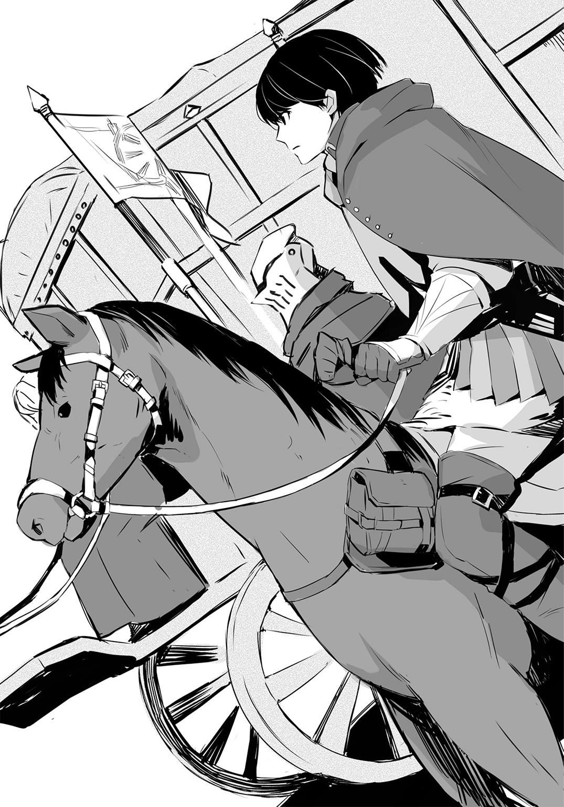
そうはならないと、思いたいのか。なぜ？ 事は公女殿下一個人の問題じゃない。国と国との付き合いで、外交的、戦略的な意味合いもあるだろう。我がデスティニア公国にとっては必要な婚姻なのだ。公女殿下には、必然的に公家の人間としての責任があり、義務がある。結婚するしかない。だとしたら、公国軍人として、たまたま公女殿下にお仕えする機会があったハイジ・バランとしては、せめてこの結婚が公女殿下に幸福をもたらすことを願う。祈る。そのために微力を尽くす。それが筋というものではないのか？
それ以外にできることはない。
「......わかってるんだけど、な......」
また沿道から、デスティニア公国万歳、サクラスティアリス殿下万歳、と喝采がわきあがった。誰かが音頭をとって、万歳の唱和は何度もつづき、拍手も起こった。ところが、公女殿下が馬車から顔を出しもしないものだから、次第に歓声はしぼんでいった。
「......何だよ、もったいぶりやがって」
「手を振るくらい、してもよくない？」
「見てみたかったのなあ」
「ところで、結婚って、誰とするんだ？」
「なんか、大王......？」
「馬鹿、大王には、エリカルリス様が嫁入りなさっただろ」
「じいさんだってな」
「そうだ、大王の息子って話じゃなかったっけ？」
「てことは、まだ若いのかね？」
「サクラスティアリス殿下って、おいくつなんだろう？」
「まだ二十歳にはおなりになってないだろ。十六とか、十七とか......」
「見てみたかったなあ。一回くらい」
「こんなことでもないと、見られないだろうしね」
「だってのに......」
「残念」
「ほんと」
「つまんねえ」
「帰るか」
「だな」
――何も知らないくせに、勝手なことばかり言って。
腹が立つ。何かを知る立場にない群衆に腹を立ててもしょうがない、とも思う。
ハイジだって、何かを知っていると言えるほどに、あれもこれも知っているわけじゃない。
......公女殿下は、どう思われているのだろう？
この結婚について、納得なさっているのだろうか？ いやなのか？ そうでもないのか？
たとえばその程度のことすら、ハイジにはわからない。知るすべがない。
「なんにせよ、おめでたいことですよ」
ルメ兵長が皮肉っぽい口調で言った。同じ台詞を、何人もの口から、何度も聞いた。言葉とは裏腹に、おめでたいなんて、これっぽっちも思っていないのだ。毎回、そう感じる。
そしてハイジは、同感だ、としみじみ思うのだ。
おめでたくなんか、ない。
でも、祝福しないといけないのだ。
×
馬車が停まった。どうでもいい。
ルルチナが何か言っている。夜営の時間らしい。ああそう。好きにすれば。
どうでもいい。
ルルチナは馬車から出ていった。
ギチコは向かいの席で首をひねっている。
人形のチヌコがギチコの肩からひょいと飛び降りて、サクラが座っているほうの座席によじのぼり、隣に腰かけた。
チヌコもギチコみたいに首を傾げて、サクラを見上げている。
サクラはチヌコから目をそらして、馬車の天井を仰いだ。
「サクラさまぁ？」
ギチコに呼びかけられた。
返事をする気になれなくて、サクラは黙っていた。
苦しい。
きっと服のせいだ。ドレスみたいな――というか、ドレスそのもの？ とにかく、変にちゃらちゃらした、ごてごての服を着せられている。脱いでしまってもいいが、それもなんだかめんどくさい。
結婚、するんだし。
べつに、したくないけど。
もちろん、結婚なんかしたいわけがない。とてつもなく、いやだ。相手は関係ない。誰でも同じだ。いやだ。結婚すれば具体的にどうなるとか、どうしないといけないとか、そうしたことを考えるのがまず、たまらなくいやだ。考えたくもない。絶対、いやだ。
それなのに、サクラは拒まなかった。
むろん、拒んだところで、そうですか、じゃあ取りやめますか、という話にはならない。無駄だとわかっているから、拒否しなかったのだろうか？
必ずしも、そうではないように思う。
結局、父が決めたことなら、そのとおりにするしかない。公女というのは、そういうものだ。従わなければ、存在する意味がない。価値がない。
だから、他の選択肢はない。戦いは終わりで、次は誰かと結婚しろと言われたら、いやだろうと何だろうと、そうするしかないのだ。
「サクラ様」
馬車の扉が開いて、ルルチナが顔をのぞかせた。
「外へどうぞ。夕食と寝所の用意ができております」
「いらない」
「......いらない、とおっしゃられましても」
「食べない。食べたくない」
「ご気分がすぐれないのでしたら、夕食はお上がりにならずともけっこうです」
「じゃ、そういうことで」
「それでは、まだ早いですが、寝所でお休みになってくださいませ」
「いらない」
「......と、おっしゃいますと？」
「ここでいい」
御用馬車は見かけ倒しだ。外観も内装も豪勢だが意外と狭くて、四人乗りとはいえ、大柄な男が四人乗ったらぎゅうぎゅうだろう。二人掛けの座席は、サクラが寝そべることができるほどの幅はない。それでも、脚を畳めば横になれないことはないだろう。
ただ、チヌコが邪魔だ。
ぶん投げてやろうとも思ったが、やめておいた。サクラは側板にそっと頭をもたせて目を閉じる。慎重にやったのに、魔性のせいで思いがけない反動がきて、イラッとした。
いつもいつも、こうなる。
あらゆる衝撃を反射するサクラの魔性は、自動的に働く。止めることはできない。増幅させることはできても、抑えることはできない。
しかも、精神状態が微妙に変化しただけで、働き方に影響が出る。これくらい反射するかな、と見当をつけても、だいたい外れてしまう。
どんなものをさわっても、思った以上の反発を食らって、神経に障る。
不快。不快。不快。不快。不快。不快。不快。不快。不快。不快。不快。不快。不快。
慣れてはいるが、じつのところ、ただ歩くだけでもサクラは絶えず不快感に襲われつづける。地面についた足に伝わってくる意想外の反発が、サクラを苛立たせるのだ。
「......サクラ様」
ルルチナがため息をついた。
「何」
「それではお躰に障ります」
「うるさい。わたしのことは、放っといて」
「そのようなわけにはまいりません」
「だったら、あとで行く」
「あととは、いつですか」
「あとは、あと。今じゃないことだけはたしか」
「おふざけにならないでください」
「ふざけてない。わたしは大まじめ」
ふと、ごぉぉぉぉぉぉぉー......というような音が鳴った。
何かと思い、サクラは目を開けた。
ギチコがずれた眼鏡の奥で両目を見開き、両手でおなかを押さえている。
ごぉぉぉぉぉぉぉー......。
また同じ音がした。
「ぬぉ......」
ギチコは自分のおなかに視線を落とした。
「おなかすいた。です」
「......どんだけ腹すかせてんだよ」
ルルチナがぼそっと呟いて、咳払いをした。
「ギチコ。あなたのぶんもあります。外に出なさい」
「いや。だ。です」
ギチコが頭を振ると、大きすぎる胸がびよんっびよんっと飛び跳ねるように揺れた。
ルルチナは青筋が立った額に指先を当てた。
「......なぜです」
「サクラさま。いる。です。中。ここ。ので」
「片言にも程があるでしょう。無理をして敬語になっていない敬語を使わなくてもいいから、普通に喋りなさい」
「サクラさま、ひとりにできない。あたし、サクラさまと一緒にいる」
「わかった」
サクラは席を立った。
「行けばいいんでしょ。行けば」
これ以上、押し問答をするのもめんどくさい。ルルチナがどいた。サクラは開いた扉をくぐって外に出た。
少尉と目が合った。
――いや。
中尉になったのだ。
サクラはすぐにそっぽを向いた。地面に絨毯が敷かれていて、馬車のすぐそばに大掛かりな組み立て式の天幕が設営されている。ここまで大きいと、もはや天幕には見えない。入ると、玄関ホールになっていて、その先には食堂があり、寝室に調理場、浴室まで備えている。ドリアン公以外はめったに利用することがない、公家専用の御用天幕だ。サクラが使うのはこれが最初で最後だろう。
食堂の椅子に腰を下ろした。
動悸がする。
何だろう？ 中尉の顔を見た途端、これだ。サクラはよほど中尉のことが嫌いなのだろうか。心臓が痛くなるほど？ 初めての経験だ。人は本当に人を嫌いになると、こんなふうになるものなのか。
しばらくすると、ルルチナが食卓に料理を並べはじめた。
「ギチコは」
「いつもどおり、隣室で毒味をさせています」
「そう」
「食材は点検済みで、すべてルルチナが調理しておりますので、大丈夫かとは思いますが、あの御方が......」
ルルチナは口ごもった。
「失礼いたしました。念のためです」
「アスタロス大王太子」
サクラはフォークを手にとって、前菜のゼリー寄せに突き刺した。ナイフで小さく切って口に運ぶのがマナーだが、めんどくさい。
「どういう人？」
「ルルチナは、直接お目にかかったことはないのです」
「でも、知ってるでしょ。いくらかは」
「旧主を通して、世評とさして変わらない程度のことしか存じあげません」
「暗殺が趣味のド変態」
「ありていに申し上げれば」
「そんなドちくしょうが、わたしの夫」
「サクラ様......」
「何」
「いいえ。――何でもございません」
「わたしには、お似合い。お父様は......ドリアン公は、きっとそう思ってる」
サクラはフォークで刺したゼリー寄せを口に運ぼうとした。
中尉のびっくりしたような表情が脳裏にこびりついて離れない。
嫌いだと、顔を忘れることもできないのか。
最悪だ。
ゼリー寄せを囓って口に入れた直後、どたどたどたっと食堂にギチコが駆けこんできて、ずるんっと転んだ。
胸をぷるるんっと振り回してひっくり返り、床に「ふぎっ」と腰を打ちつけながらも、ギチコは叫んだ。
「サ、サクラさま、出して......！」
「出す――」
サクラはゼリー寄せを咀嚼しようとしていた。
ルルチナが血相を変えた。
「サクラ様、吐き出してください！ 今すぐに......！」
「っ......！」
サクラは言われたとおり、ゼリー寄せを食卓の上に吐き出した。嚥下はしていないし、口の中も何ともないような気がする。――今のところは。
ルルチナはすぐさまサクラが吐き出したものをナプキンに包んだ。
「......馬鹿な。食材は問題なかった。調味料は自前だし、隙はどこにもねえはずなのに......どういうことだ!? ギチコ！ 間違いねえのか......!?」
「うぐぅー。時間差できた。です。変な毒。味わったことない。です。遅効性でも、あたし、ちゃんと感じるのに。あれだと、効くまで何時間とか。もっととか。です。たぶん」
「......ギチコ。あなたは大丈夫なの」
サクラが訊くと、ギチコは、ふにゃらあ、と顔全体をゆるめた。
「あたし、毒、平気。です。よ？ でも、初めての毒だから、これはちょぴっと、おなか、壊すかも......」
「失礼します」
――と、食堂に一人の士官がぬっと入ってきた。
軍人としてはかなり短軀で、癖毛で、もっさりしていて、じっとりと湿った目をしている。護衛隊長のニカ大尉だ。大尉は暗い瞳でギチコと、それからルルチナの手許を一瞥した。
「毒ですか」
「ええ」
ルルチナは一つ息をついて、大尉に向きなおった。
「まだ確証はありませんが、毒味役がそのように申しておりますので、対処しました」
「なるほど」
大尉は食堂の中を見回して、何か考えこんでいるようだ。どうでもいいが、この大尉、サクラのほうを見ようとしない。最初からずっとだ。本当にどうでもいいことではある。べつに見られたくもない。
「始まった、ということかな」
「想定していらっしゃったのですか」
ルルチナが尋ねると、大尉は感情のこもらない声で「ヤー」と短く答えた。
「私たちだけじゃない。グレカ少佐も動いてます。公女殿下並びに侍女の方々におかれては、どうかご安心を」
「少佐が」
サクラが呟くと、大尉はまた「ヤー」と応じて、唇に人差し指を当てた。
「アルトレッド中将のご命令です。指揮系統外なので、ご内密に」
「毒殺されかけて、安心も何もないものです」
ルルチナは怒っているようだ。大尉を見る眼差しがだいぶとげとげしい。
大尉は平然としている。
「ですが、他に言いようがありません」
「......そのおっしゃりようは、ざっくばらんすぎるのではありませんか」
「気をつけます」
「そうなさってくださいませ」
「ヤー」
大尉はさっとルルチナからナプキンをかすめとった。ルルチナが防ごうとすることすらできない、じつに鮮やかな手並みだった。
「これ、分析します」
「......公女殿下が、いったんお口にお入れになったものなのですよ」
「そういうの、興味ないんで」
「興味がないとか、そういった問題では！」
「ヤー」
「ヤーとは何です！」
「警備、強化します。可能な範囲で。では、また」
大尉は足音も立てずに退出した。
「......おにょー......」
ギチコは床に尻餅をついたまま、指をくわえて出入り口を見ている。
ルルチナは憤然と眉を吊り上げて、布巾で食卓を拭きはじめた。
「何なんだ、あの野郎の態度！ 初めっから、どうも気にくわねえ！ 無能ではねえんだろうが、人間なら気持ちってもんがあってしかるべきじゃねえか！ 気遣いとか、配慮だとか、思いやりだとか......！」
「わたしは、あのくらいでいい」
サクラはフォークを置いた。なぜだかまた中尉の顔がちらついて、胸がざわついた。
ああ、いやだ。
息をするごとに、どんどんぜんぶ、いやになる。
「気持ちとか、めんどくさいもの」
×
ニカ大尉から、警備をいっそう厳重にせよとの命が下った。大尉はとくに語らなかったが、そうすべき何らかの事態が発生したようだ。
公女護衛隊のニカ大尉以下五十七名は、夜営の間、もともと四交代で警備する体制を敷いていたが、これを二交代として実働人員を倍にすることにした。
なお、デスティニア公国領内では、各公軍から随時派遣された数百人単位の将兵が、群衆の整理や野盗への警戒に当たっている。こうした部隊も、有事の際にはニカ大尉が指揮下に置くことになっているが、平常時は要請しかできない。
当然、大尉は各部隊に要請を行った。
その内容を知って、なるほど――と、ハイジは唸った。
大尉は各部隊をあえて公女殿下御一行から遠ざけたのだ。要請に応えて、各部隊は公女殿下御一行を遠巻きにする形になった。
そして、公女護衛隊が公女殿下の御用天幕をがっちりガードする。御用天幕の出入りは、随行文官ですら厳しく制限する旨を、大尉は言葉少なに宣言した。
どういうことか。
大尉は、素性を把握している随行武官以外はまったく信用していない、ということだ。
信用できない者は一切、公女殿下に近づけない。
筆頭衛士のハイジとボル軍曹たちは、御用天幕の表口を固めることになった。御用天幕には裏口もあるが、そちらは閉鎖されている。表口はもっとも重要な警備ポイントと言ってもいいだろう。名誉なことだ。
御用天幕は大きいが、とはいえ奥行きも間口も20メトルまではない。
表口の前にいるハイジには、公女殿下の存在が感じられる――。
魔性のおかげだ。
〝君は僕の黒い太陽〟。
そばに魔性を持つ者がいればいるほど、さらに、その魔性が強ければ強いほど、ハイジはより速く、より力強くなる。
躰が軽い。よく動く。
まあ、御用天幕の中には、公女殿下の他にも、侍女ルルチナ、ギチコという魔性持ちがいるので、その影響も受けているわけだが。
それに、行進中も御用馬車の近くにいるので、常に公女殿下を感じているわけだが。
気分の問題だ。
夜だし。
静かだし。
昼間よりも、こう――はっきりと、公女殿下を感じる......ような気がする。
気のせいなのだろうが。
ハイジ、ウォルフ兵長、ルメ兵長の三人が一班、ボル軍曹、アダン伍長、マチス兵長の三人が二班で、一班が夜半まで、そこから朝まで二班が見張りに立つことになっている。
あっという間に、交代の時間がやって来た。
でも、ハイジはまだまだギンギンだった。
「......中尉。えらく気合いが入ってますなあ」
ボル軍曹はハイジを一目見るなり、呆れたように笑った。
ハイジは頭を搔いて、
「え、ええ。まあ。なんていうかその、眠くはないですね。とてもじゃないけど、寝つけそうにないっていうか......」
「しかし、休むのも仕事ですぜ」
アダン伍長が悪相を笑わせて言った。正論だ。
「......ですよね。わかりました。交代します」
「もしかして、しないつもりだったんですか？」
巨漢のマチス兵長がくりっとした目を瞠った。
「......いや、そんなことはないですよ？ 本当ですってば......じゃ、じゃあ、ウォルフ兵長、ルメ兵長、行きましょう。さあ朝までぐっすり寝るぞー。おー。なんて......はは......」
ウォルフ兵長もルメ兵長も、しょうがない上官だなあという感じで苦笑いしている。
でも実際、アダン伍長の言うとおり、休むときはしっかり休まないとだめだ。もし肝心なときに寝不足で力を発揮できませんでした、なんてことになったら目も当てられない。二班の三人は信頼できる優秀な軍人だし、あとは彼らに任せるべきだ。
ハイジたち一班は、御用天幕の程近くに停めてある御用馬車の脇に敷布を広げ、その上で横になった。これなら何かあってもすぐ跳び起きて駆けつけられる。大丈夫だ。安心して眠ってもいい。
「......寝れないけどね」
ウォルフ兵長とルメ兵長は間もなく寝息を立てはじめたが、ハイジは目が冴える一方だった。ここでも公女殿下たちの存在を微かに感じる。そのせいだろうか？ もしくは、胸騒ぎでもしているのか？
ニカ大尉はなぜ警備を厳重にする命令を下したのか？ 公女殿下にいったい何があったのだろう？ ハイジが侍官だったら、すべてを知った上で公女殿下をお守りできるのに。
繰り言だ。
ハイジが公女殿下の侍官だったのは、ごく短い期間でしかない。言うまでもなく過去のことだし、あのころにはもう戻れない。
しかも、公女殿下は大王太子妃になるのだ。
そのことを考えると、胸を搔きむしって転げ回り、叫びたくなる。もちろん、そんなことはしない。じっとしている。
我慢している。
そう。
我慢だ。
努力に努力を重ねて、精神活動を低下させ、眠れ。眠るのだ。すぐ寝ろ。今すぐ眠れ。熟睡しろ。これが任務だと思え。使命だ。
眠れ。
「......無理です」
ハイジは上半身を起こした。だめだなあ、と思う。軍人失格だ。眠らないといけないときには五分でも十分でも一時間でも六時間でも眠る。地味にこれは軍人にとって、きわめて重要な能力なのだ。それができない。最低だ。クソ同然だ。いや、クソだ。べつにクソでもいいけど。どうせ姫は、いや公女殿下はご結婚するのだ。人妻になる。人妻！ うぎゃあああああああああああああああああああああああああああああああああああああああマジか！ 信じられないありえないあっていいはずがない姫いや公女殿下が結婚なんて人妻なんてそんないやあああああああああああああああああああああああああああああああああああああああああああああああああああああああああああああああああああああああああああああああああああああ。
泣きたい。
というかもう、ハイジは泣いている。
いや待て。
なんで泣かないといけない？ 何を泣くことがあるのか？ どうせ公女殿下はご結婚する、だから何だ？ どうせって？
「わけわかんないっす......」
ハイジは夜空に向かって呟いた。
「ぬあ......!?」
というような声が聞こえたのはそのときだった。
ハイジはただちに立ち上がった。
「一班、起床......！」
命じて、声のしたほうへと駆ける。ウォルフ兵長とルメ兵長も起き上がってついてきた。
「中尉......!?」
御用天幕表口の前でボル軍曹が叫んだ。
「二班は待機......！」
「了解......！」
御用天幕の南西方面が騒然としている。夜警に当たっていた随行武官たちが立ち回っているようだが――相手は？ わからない。見えない。
ハイジは一班を率いてそちらへ急行した。
真夜中だが、大型の角灯があちこちに設置されているので、けっこう明るい。数人の随行武官が血塗れになって倒れ伏している。十人以上の随行武官が剣を抜いて右往左往しているが、やはり敵らしき姿は見当たらない。
「何だ......!?」
ハイジはワイバーンを鞘から抜いて足を止めた。
また一人、随行武官が血飛沫を上げて倒れた。
その瞬間、剣光らしきものが閃いた――ような。いや、ような、じゃない。見えた。
目を凝らすまでもない。いる。見える。黒装束をまとった人間が、随行武官たちの間を素早く動き回って、剣を振るっている。
――と、一番近くにある角灯が一台、倒された。黒装束が倒したのだ。さらに、もう一台。
暗くなると、黒装束が闇に紛れて視認しづらくなった。
「ウォルフ兵長とルメ兵長は掩護してください......！」
「はい！」
「了解です......！」
二人の返事を聞く前に、ハイジは飛びだした。まずは不用意に黒装束に詰めよる。誘いだ。乗ってくるか。――来た。剣。二振り。二刀流か。
ハイジは敵の初太刀を体捌きで躱して、二撃目はワイバーンで打ち返した。
いや、打ち返そうしたのだが、敵の刃が、するっ......と逃げていった。
「この感じ......!?」
ハイジは突っこんだ。押しこむ。動くぞ。躰が動く。
黒装束は顔も黒頭巾で覆い隠している。口どころか、目まで。肌をまったく露出していないので、瞳が輝いているのかどうかはわからない。
でも――魔性、だ。
間違いない。
どんなものかは不明だが、黒装束は魔性を持っている。
危険な敵。しかし、相手の魔性は、ハイジに力を与えてもくれる。
おそらく、黒装束の予想よりも、今のハイジは疾い。
間合いにとらえた。――いける。
ワイバーンを突きだした。躰のど真ん中。もっともよけづらい。回避しようとしても、このタイミング、この剣速なら、必ずどこかに当たる。――殺った。
いや。
まただ。
するっ......と逃げられた。
「――噓だろ......!?」
愕然としながら、ハイジは矢継ぎ早にワイバーンを繰りだす。
するっ......、
するっ......、
するっ......、
するっ......。
当たらない。おかしい。当たるはずだ。完全にワイバーンは黒装束に届いている。それなのに、逃げられてしまう。
「こんな......！」
動揺するな。攻めろ。攻めつづけるしかない。
ところが、守勢に回っていた黒装束が、急に突進してきた。
「――無造作に......！」
斬ってくれと言わんばかりだ。というか、ハイジにしてみれば斬るしかない。そうしないと、肉薄される。一刀両断にしてやる。吼えろ、ワイバーン......！
「なっ......!?」
またなのか。ワイバーンは黒装束を斬ったのに。まるで手応えがなかった。ワイバーンは黒装束の躰をすり抜けてしまった。――やばい。
懐に入られる。
黒装束の剣はかなり短い。短剣だ。接近されたら、防ぐのは難しい。
でも、ここで止めないと。
相討ち覚悟だ。ハイジは黒装束に体当たりをしかけた。結果的には正解だった。黒装束の意表を突くことに成功したらしい。
黒装束の剣に突き刺される前に、ハイジは黒装束の胴に組みついた。
いや、やっぱり、するっ......と抜けた。
が、すっかり抜ける寸前に、黒装束の躰のどこかにさわったような感触があった。
そうはいっても、逃げられた。
「くっ......！」
ハイジは振り返った。
ウォルフ兵長とルメ兵長も剣を振るって黒装束を阻止しようとしたようだが、呆気なく突破されてしまった。
黒装束は御用天幕へと向かう。
「追います......！」
ハイジは体勢を崩しているウォルフ兵長とルメ兵長の間を駆け抜けて、黒装束を猛追した。黒装束も速いが、ハイジはそれ以上だ。すぐに追いついて、その背中にワイバーンで斬りつける。だめか。するっ......と抜けた。
御用天幕の表口前には、ボル軍曹以下二班の三人が並んで壁を作っている。
だけどたぶん、黒装束を止めることはできないだろう。
斬っても斬れない敵を、どうやったら......？
一瞬、頭の中が真っ白になった。方法が思いつかない。
思いつかなくても、なんとかして止めるんだ。それが役目じゃないか！
さっき組みついたとき、黒装束にふれることができた――ような気がする。結局、逃げられたが、絶対にさわることができないわけじゃない。何か手はあるはずだ。
一か八か、後ろから黒装束に組みつこうとしたら、バーンと表口の扉が開いて、姫、いや公女殿下が出てきた。
ドレス姿じゃない。夜着というか、下着みたいな――侍官だったころは、いつもああだった。だから見慣れているはずなのだが、目も、心も奪われてしまう。しげしげと見たりしちゃいけないんだけど。
それはそうなんだけど、これが見ずにいられるだろうか。――姫。
おきれいです。
お美しいです。
――いやいや、見とれてる場合じゃない......！
「どいて......！」
姫じゃなくて公女殿下はボル軍曹以下二班に短く、鋭く命じた。かりそめにも姫、いや公女殿下と共に戦ったことがある者なら誰だろうと、あんなふうに命令されたらつい、反射的に従ってしまう。ボル軍曹たちも、公女殿下を通してしまった。
黒装束が躍りかかり、公女殿下が迎え撃つ。
といっても、公女殿下は素手だ。
両腕で、黒装束の双剣を受け止める。
公女殿下の魔性が、双剣ごと黒装束を撥ね飛ばした。
黒装束がこっちに飛んでくる。ハイジはワイバーンを振るった。
やっぱり、するっ......と抜けた。
黒装束は地面に叩きつけられることなく、くるりと回って着地した。
御用天幕からルルチナとチヌコ、遅れてギチコが駆けだしてきた。
「サクラ様......！」
「サクラさまあ。ぶぎゃっ」
ギチコは、転んだ。
公女殿下が無言でハイジのすぐ脇を走り抜け、黒装束を猛襲する。キックだ。蹴り上げようとした。そんなに脚を上げたら、見えてしまうんですけど......！
黒装束は横に転がって公女殿下のキックをよけた。そのまますごい速度で這うようにして、距離をとる。
「何者？」
公女殿下は追撃せずに、黒装束を見据えた。
「あなたが誰だろうと、わたしは殺せないけど」
黒装束は答えない。両足を広げ、腰を直角に曲げた極端に低い姿勢で、短剣を持った両手をゆらゆらと動かしている。
「......まさか」
押し殺したような声でそう言ったのはルルチナだった。
「リリス・カンナビス。てめえなのか......？」
「う、ふ、ふ......」
黒装束が背中を震わせて笑った。――女。
どうやら、若い女のようだ。
「お久しぶりです、お姉様。――そして、公女殿下。今夜はご挨拶に上がりました」
「知り合い？」
公女殿下がちらっとルルチナを見た。
「元同僚です」
ルルチナの顔は苦くゆがんでいる。
「......リリス。てめえに姉呼ばわりされる覚えはねえよ。今はもう、な」
「あら。お姉様でも後ろめたいの？ 大勢のきょうだいを手にかけたこと――」
「クズの下衆に騙くらかされて人殺しに血道を上げてやがる間抜けどものことなんぞ、知ったことか」
「お父様を悪く言わないで？」
「お断りだ」
「相変わらずね、お姉様」
「てめえの姉なんかじゃねえと、何度も言わせるな！」
ルルチナが弾丸のように飛びだした。同時に、黒装束は身を翻した。
「さようなら、お姉様」
「待ちやがれ......！」
「また伺うわ。それまで公女殿下、どうかご壮健で」
黒装束の姿がどんどん遠ざかって、夜の闇に溶けこんでゆく。――って、黙って突っ立っていてどうする。ハイジはルルチナにつづいて黒装束を追いかけようとした。
「深追い禁止」
と、どこからかニカ大尉の声がした。
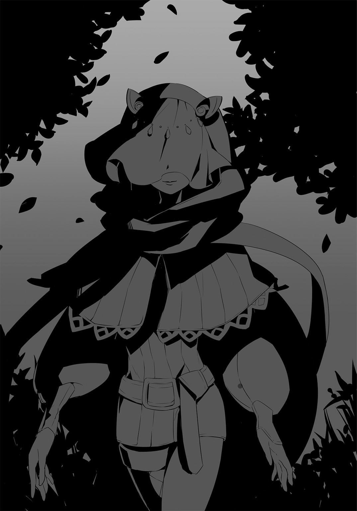
立ち止まって振り返ると、大尉がハイジのすぐ後ろで火縄銃を構えていた。
引き金を引いて、撃つ。
銃口から硝煙が噴きだし、爆発音が轟いた。
黒装束が瞬間、振り向いた――ように見えた。が、それだけだった。黒装束はすぐに見えなくなって、ルルチナも追跡を止めた。
「......あいつめ！」
「お怪我は」
大尉は火縄銃を下ろして、公女殿下を一瞥した。
「ないですよね」
「あるわけないでしょ」
「では、寝所にお戻りを。その恰好は迷惑です」
「っ......」
「何か」
「なんでもない」
公女殿下は回れ右をして大股でギチコをまたいだ。
御用天幕の扉をくぐる寸前に、顔だけこちらに向けた。
目が合った――のは、たぶん一秒に満たない、ごくごく短い時間だった。
公女殿下はなんだか苦しそうな表情をして、御用天幕に入っていった。
×
――私のことは、実の父親だと思って欲しいし、私としてはもう、おまえの実の父親のつもりでいるし、私はおまえの実の父親として振る舞うだろうし、ゆえに事実として、私はおまえの実の父親であり、おまえは私の実の娘なのだよ。
やさしそうな男だと思った。容貌より、にこやかな顔つきがとにかく印象的だった。男は遠い親戚だと彼女は言い含められていた。彼女にそう教えたのは彼女の叔父だった。
弟は彼女が五つのとき、妹は彼女が六つのときに死んだ。父も母もすでに亡かった。
叔父が本物の叔父なのか、彼女に知るすべはなかった。弟と妹が立てつづけに死に、やつれ果てた父が、ある日、叔父を名乗る下卑た男を伴ってきた。それから、両親と彼女は叔父が率いる一座とやらに加わった。
一座は総勢三十人ほどで、あちこち旅して見世物のようなことをやっていた。父は雑役夫、母は飯炊き女として働き、彼女は二人の手伝いをした。
二人にはそれ以外にも仕事があった。主に夜、彼女が薄汚い毛布にくるまって寝ついたあとで――正確には、寝たふりをしている彼女を残して、二人は出ていった。二人は何をしているのか。彼女は薄々勘づいていたが、気づかぬふりをした。両親がそう望んでいると察していたからだった。
やがて父が夜の仕事から帰ってこず、母は流行病で死んだ。旅する一座の中では、よく病気が蔓延した。弱っている者はあっさり息絶えた。
それから間もなく、叔父は彼女を遠い親戚のところへと連れていった。叔父はその男を、伯爵、と呼んで、この子のことをくれぐれも頼みます、と演技がかった慇懃さで言った。伯爵は叔父と固く握手をして、心配はいらない、と請け合った。
彼女の記憶は多少混乱している。当時の彼女が混乱していたせいだろう。
ともあれ、彼女は伯爵に引きとられた。そして、伯爵のもとで、物心がついて以来初めて、文化的な生活を送った。それまで、彼女の暮らしは家畜と大差なかった。生きるとはそういうものだと思っていた。
違ったのだ。
人には人に相応しい生き方というものがある。
――とりわけ、おまえのように聡明で、美しい娘には。
伯爵はそう言って、ときには自ら彼女に礼儀作法や言葉遣いを仕込んだ。伯爵の館にはたくさんの「姉」や「兄」がいた。伯爵以外では、姉や兄たちが彼女に教育を施し、世話してもくれた。
――皆、私の息子であり、娘だ。
伯爵は最初に会ったときから一貫して感じのいい人物だった。親切で、品がよく、公平でもあった。伯爵は彼女を含め、すべての息子や娘を愛しているようだった。
平和な、穏やかな毎日。
彼女は幸福しか感じなかったわけではない。
たとえば、伯爵の館の中には立ち入ることのできない場所があった。閉ざされた扉。あの向こうには何があるのだろう？
たまに姉や兄がいなくなり、しばらくすると帰ってきた。戻ってこないことも稀にあった。彼女は聡明だったから、なぜ、どうして、とは誰にも訊かなかった。訊いたところで答えは返ってこない。彼女はそう理解していた。
いつしか彼女には妹や弟ができた。姉や兄がそうだったように、彼女は妹や弟を導き、手助けした。そうするべきだと彼女は信じていた。必ずそうしなければならないと。さもなくば、この日々は失われてしまう。彼女は確信してさえいた。
他にも、姉、兄、妹、弟に、どこから来たのか、伯爵の息子や娘になるまで何をしていたのか、といった過去を尋ねないという不文律も、彼女は自然と、誰に言われなくても守っていた。それに背いた一人の妹が、ただちにどこかへ連れ去られた。妹は十日ほどで帰ってきた。何があったのかは知らない。彼女は知ろうとも思わなかった。ここではそれが正しいし、賢明なやり方だということを彼女はわかっていた。
もっとも、幸せな日はいつまでもつづかなかった。
そのことも彼女は予期していた。
なぜなら――、
人生とは、そういうものだから。
×
あの黒装束の名は、リリス・カンナビス。
リリスが主体的に公女殿下の暗殺を企むなどということは、まずありえない。
陰で糸を引く者がいる。
十中八九、リリスが「お父様」と呼んだ人物。
ダンタリオン伯爵。
なお、公爵から侯爵、伯爵、子爵、男爵までの五爵は、カバラ大王国の大王のみが授与できる。男爵位は今でもカバラ大王国が権威を示すために与えることがあるものの、子爵となるとめったにない。領土とセットになっている伯爵以上が今後、新たに現れることはまずありえないだろう。
つまり、ダンタリオン伯爵は由緒あるカバラ貴族なのだ。
それだけじゃない。顕職に就いてもいる。
右府。
――というと、右大臣。
内府、左府に次ぐ、カバラ大王国のナンバー３だ。
ちなみに、内府はアスタロス大王太子で、左府はマルサス侯爵というなんと九十三歳の老人だから、内府の大王太子が右府の伯爵に支えられて政務を司っている、というのがカバラ大王国の体制らしい。
「......どういうことなんでしょうか」
初めてのリリス襲来では、随行武官三人が殺害されて、六人が負傷した。うち四人が重傷。
リリスはその翌日の夜にも現れ、随行武官一人と、随行文官三人を殺して逃亡した。
三日目は来ず。
四日目の被害は随行武官二人、随行文官二人。
そして、五日目の夜が訪れた。
もちろん、公女護衛隊は厳戒態勢を敷いているし、第四公軍からの応援部隊にも防備を固めてもらっている。
筆頭衛士のハイジは、ボル軍曹以下五名と共に御用天幕表口の警備に当たっていた。変則的な三交代で、今はウォルフ兵長とルメ兵長がすぐそばで仮眠をとっているが、あとの四人は絶えず周囲に目を光らせている。
「......姫――じゃなくて、公女殿下は、アスタロス大王太子の......お、お、お、お妃様に、なる、まあ、なるんですよね......なろうとしているっていうか、それなのに、カバラ大王国の右府の部下？ 手下？ ともかく、その息がかかっている暗殺者が、公女殿下のお命を狙っているっていうのは......」
「たしかに、妙ですなあ」
ボル軍曹は髭をこすりながら小声で言った。
「カバラ人はたいてい変わっとるらしいですが。実際、私が知ってる範囲でも、変わり者が多いように思います」
「カバラの女は大変ですぜ」
アダン伍長が怖い顔をしかめると、よりいっそう恐ろしげになる。
「どれもこれも癖が強くて、手に負えない。気性が荒いってのとは違うんですがね。思考形態が独特なんですな。一言で言えば臍曲がりってことになるんでしょうが、その曲がり方が一人一人違っていたりするもんだから......」
「伍長、いったい何人と付き合ったんです？」
いかにも純朴そうなマチス兵長が訊くと、アダン伍長は肩をすくめて、
「数なんざ、いちいち数えちゃいねえよ。だがまあ、そう多くはない。カバラ女は懲り懲りだ。身が持たないってより、心が持たない」
「......でも、暗殺ですよ？」
ハイジは視線をあちこちに巡らせながら考えこんだ。
「一癖も二癖もあるとか、思考形態が変わっているとか、そういう次元の問題じゃないと思うんですけど。右府は、内府の結婚に反対だとか......そんな事情だったりするのかな」
反対と言えば、ハイジも反対なのだが――いやいやいや。
ハイジは、ふぅーっ、と息を吐いて、自分の胸を拳でどんどん叩いた。
「......どうされました？」
ボル軍曹に心配されてしまった。
「いえ、なんでも」
「そういえば、我らが中尉どのも、変わり者っちゃあ変わり者ですな」
アダン伍長はニヤニヤすると剽軽な感じがして、ちょっと愛嬌がある。
「僕、変わってますかね......？」
「どうですかねえ」
マチス兵長まで思わせぶりにニヤついている。
「......そんなこと、ないと思うんですけど――」
ハイジは慌てて背筋をのばした。
騎馬が近づいてくる。鞍上の小柄な士官はニカ大尉だ。――あれ？
何かおかしい。
でも、その何かがわからないまま、ハイジは敬礼した。ボル軍曹らもハイジに倣う。ニカ大尉は、無視。普通ならありえないが、この人にかぎってはよくあることだ。
ニカ大尉はハイジたちの前で下馬して、右手をひょいと振ってみせた。どけ、ということらしい。
ボル軍曹らは左右に分かれたが、ハイジは動かなかった。
――おかしい。
「大尉」
呼びかけても、ニカ大尉は答えない。もう一度、右手を振った。
ハイジはそっと深呼吸をした。ニカ大尉は暗い瞳でじっとハイジを凝視している。
どう見ても、ラウリ・ニカ大尉だ。
「......中尉？」
ボル軍曹に声をかけられた。その瞬間、ハイジは踏みこんでワイバーンを抜き放った。
右腰から左肩へ斜めに斬り上げる。
ニカ大尉は真っ二つになって、地面に崩れ落ちた。
それから、震えがきた。
「ちゅちゅちゅ中尉......!?」
「あああ......!?」
「なんてことを......!?」
ボル軍曹らが大騒ぎして、仮眠していたウォルフ兵長とルメ兵長が跳び起きた。
ハイジはワイバーンを構えたまま、ニカ大尉の屍に近づいた。
馬がいななく。
ハイジはため息をついて、首を振った。
「違います」
「えっ」
ボル軍曹は腰を屈めて大尉を見ると、ひっ、とのけぞった。
「ち、違う！ 本当だ！ 大尉じゃない......!?」
「しかし――」
アダン伍長は顔の下半分を手でこすった。我が目を疑う気持ちはよくわかる。ハイジもまだ信じられない。でも、事実だ。
それは大尉じゃない。似ても似つかない、と言ってもいいほどだ。中肉中背で、背恰好がまず違う。服装からして公国軍の軍服じゃない。何の変哲もない、庶民の旅装だ。
どうしてハイジたちはこんな男を大尉だと思ったのか？
大尉に見えたからだ。
さっきまでは。――ハイジが斬り殺すまでは。
そう。
殺してしまった。機士じゃない。人間を。恐ろしいことをしてしまった、と思う。同時に、大尉じゃない男が大尉にしか見えなかったことにも衝撃を受けている。
もっとも、種はわかっていた。たぶん、ハイジだけは。
魔性だ。
この偽大尉が近づいてくるごとに、ハイジは自分の魔性が高まるのを感じた。偽大尉が魔性の持ち主だと判断するしかなかった。
言うまでもなく、本物の大尉は魔性を持っていない。それに、馬じゃなくて黒犬鹿に乗っている。
偽大尉は魔性の作用で自身を大尉に見せかけていた。あるいは、ハイジたちにそう思いこませた――ということだろう。
「......新手の刺客だったってことですか」
ボル軍曹が唸るように言った。
決して臆病ではないマチス兵長が、心細そうにつぶらな目をしばたたかせた。
「どうなってるんだ......」
「これが」
ハイジはワイバーンを握りなおした。まだ鞘に収める気にはなれなかった。
「これが、僕らの敵なんです」
×
彼女の主人は鬱ぎこんでいる。これ以上ないくらい。
もとより、上機嫌なことは少ない――どころか、絶無だ。
それにしても、ここまで暗く鬱屈している主人は初めて見る。
リリス・カンナビスが夜襲をかけてきてから、主人はほとんど口を開かない。
イエルヴァラを発って、十六日。
旅程の半分を超えた。
御用馬車に揺られている主人の顔は、凍りついたように動かない。ときおりギチコの人形がひょこひょこ動き回ったり、滑稽な踊りを披露したりする。でも、主人は見向きもしない。
彼女やギチコが何か声をかけると、主人は微かにうなずいて、
「ん」
と、ごくごく小さな声を出す。
あるいは、首を横に振る。
それだけだ。主人からそれ以上の反応を引きだすのは非常に難しい。不可能と言いきってしまってもいいほどだ。
無関心、無感動なのではない――彼女の考えでは。
主人は心を痛めている。確実に。
随行武官、随行文官が一人、また一人と命を落としてゆく。再起不能の深手を負った者もいる。主人はすべて自分のせいだと思っているだろう。
こちらもむざむざとやられ放題にやられているわけではない。対策を講じている。おかげで被害は徐々に少なくなってきているが、現在までの間に随行武官五十七名のうち十二名が死亡し、八名の重傷者が後送された。文官は二十三名中、九名が死傷。主人と彼女とギチコをのぞけば八十名いた公女殿下御一行は、五十一名にまで減った。
公女護衛隊隊長ラウリ・ニカ大尉は人員の補充ではなく、大幅な増強を求めているが、総司令部が応じる気配はまったくない。大尉も期待していないようだ。
どうも、これは予期されていた事態であり、状況なのではないかと思えてならない。
犯人はほぼ割れているのに、デスティニア公国がカバラ大王国に抗議したり、調査を要求したりといった動きすらないのだ。
彼女の主人は捧げられた犠牲なのではないか。
だが、今までも主人は数多の刺客を退けてきた。彼女も主人には指一本触れさせるつもりはない。触れることなどできようはずもないのだが。
ともあれ、たとえ何万人もの暗殺者が押し寄せたとしても、主人に危害を加えることは能わない。
主人は、無事だろう。
しかしながら、主人の供回りの大半は常人だ。
極端な話、このままだと、目的地にたどりつくころには、主人ただ一人しか生き残っていない、ということにもなりかねない。
――だから、なのか。
それで、随員が百名に満たない小規模なのかもしれない。
彼女が知っているような腕利きの暗殺者の手から逃れたいのなら、第一に所在を明かさないことだ。標的の居場所がわからなければ、どんな暗殺者だろうと殺せない。
行方をくらますことができないのなら、堅固な要塞の奥にでも籠もって、物資や人の出入りに目を光らせ、制限する。つまり、場所だ。暗殺者の手が及びづらいような場所にだけ、身を置くようにすればいい。
場所が悪ければ、頭数に頼った防備など、はっきり言って問題にならない。暗殺者によっては、逆に相手の数を利用することに長けていたりもする。
供回りは、どうせ殺される。
――総司令部は......ひいては、ドリアン公は、そう考えているのかもしれない。
大勢つけても、そのぶん死ぬだけだから、無意味だ、と。
たった八十人では皆殺しにされてしまうかもしれないが、千人つけたらひょっとすると何百人も死ぬかもしれない。ならば、八十人でいいだろう。そういう判断なのかもしれない。
何にせよ、主人のせいではないのだ。
断じて。
それが厳然たる事実でも、主人にとっては何の慰めにもならないだろう。
彼女の主人は、檻に囚われている。
責任。
罪悪感。
痛み。
どうやっても抜けだすことのできない檻に、ひとりきりで。
それは何も今に始まったことではないのだ。
主人はずっと檻に閉じこめられている。ときおり、いや、しばしば、その檻の中に化物が投げこまれる。じつに様々な化物が。主人は化物どもと戦うことを強いられてきた。孤独な戦いだ。勝利したところで、報酬はない。また檻の中で孤立無援の自分自身を見出すだけだ。
何のために耐えなければならないのか？
どうして、ここにいつづけなければならないのか？
もう楽になりたい。
主人がそう思ったところで、いったい誰が責められるだろう？
いかに無敵の魔性を持っているといっても、自分で終わらせる方法の一つや二つ、探せば見つかるに違いない。
おそらく、主人も自決を望んだことはあったはずだ。たぶん、何度も、何度も。
しかし結局、主人は逃げなかったのだ。
戦いつづけてきた。
今も戦っているのだ。
彼女とは違う。彼女はあのとき――いや、幾度となく、安易な道を選択した。
初潮の訪れと同時に、彼女は大きな変化を感じとった。子を宿し、産む準備ができた。それだけであれば、彼女はどうなっていただろう？ 現在の彼女は知っている。もしそうだったら、彼女は下働きにされるか、売り払われるかしていただろう。
血が目覚めたのだ。
彼女の体内を流れる古い血が活動しはじめた。
魔性。
リリーローエンという名の落ちぶれた家門それ自体にはもはや何の価値もないが、一族が受け継ぐ血には力が宿っている。
もっとも、没落の過程でリリーローエンの血は薄まっていた。ようは、普通は魔性を発現することがない庶人の血が多く混じった。財産はあっても格がない成り上がりが名を求め、リリーローエンの当主たちは金が欲しかったのだ。両者の利害が一致して血が交わった。
貴き血には魔性の因子のようなものが含まれている。因子の正体は不明だが、そう信じられている。
ゆえに、貴き血には貴き血がふさわしい。高貴な者は高貴な者と結ばれ、高貴な子を生み落とす。貴き血を濃くして残すことが、高貴な者の義務であり、誇りであり、また、実利にもかなうはずだった。
何代も前から下賤の血を消極的、ときに積極的に受けいれるようになったリリーローエン家は、貴き血を売り渡し、名誉を汚して、みずから血の力を弱めたのだ。
結果、彼女の祖父は魔性を持っていたが、微弱なものだったという。父もそうだったし、父の兄弟に至っては魔性らしい魔性を有していなかったようだ。母は元庶人だった。
彼女は......？
幸運――だったのだろうか。
カバラ大王国に数人いるという魔性見のうちの一人が彼女を視た。
潜在等級は、ＢＢＢ。
一般に、上から、ＳＳＳ、ＳＳ、Ｓ、Ａ、Ｂ、Ｃ、Ｄ、Ｅと並ぶ潜在等級の中に、ＢＢＢは存在しない。彼女を視た魔性見の気まぐれか、悪戯なのか。聞いた伯爵は手を拍って、初めて耳にした潜在等級だ、と喜んだ。
合格だった。
実用に耐えうる水準だと判断されたのだ。
彼女は伯爵に手を引かれてあの扉をくぐった。その先には、それまで立ち入ることが許されなかった。禁じられた部屋。廊下。階段。地下通路。地下室。伯爵の館とは別の、窓のない建物。平和な、穏やかな日々は終わりを告げ、訓練が始まった。
何のために、こんなことを？
わけもわからず、彼女は生きるために励むしかなかった。――否。
噓だ。
伯爵が見抜いたように、彼女は賢い娘だった。いや、狡賢い女だった。彼女はすぐに悟った。やるしかないのだ。従うこと。堪えること。そして、応えること。すべて必要だ。さもなくば、どうなるか？
奪われる。失う。
与えられる課題をちゃんとこなしさえすれば、依然として彼女は食事にも、寝る場所にも、不自由することはなかった。それまで彼女の世話をし、躾をしてくれていた兄や姉たちも、彼女の知らないところで訓練を受けていたのだ。暮らしは保証される。言うとおりにしていれば。ときどきは息抜きもできる。成績がよければ、伯爵は褒めてくれる。何か欲しい物はないかと伯爵に訊かれる。ねだればちゃんと買い与えられる。
我慢すればいい。ただ我慢するだけでいいのだ。
そして、伯爵のために働けばいい。
伯爵がそれを望んでいる。
期待に応えれば、称賛と褒美が待っている。
最初の仕事をする前に、「私たちがなぜそれをなさなければならないか」、一人の姉が念入りに説明してくれた。
姉はまず善悪について語った。「私たちが」することは善であり、「私たちにされる」者は悪であると教わった。
戯言だと彼女は内心、思った。彼女が知っている範囲で言えば、強奪され、踏みにじられ、傷つけられ、場合によっては命までとられるのは、間抜けか、腑抜けか、運が悪いか、もしくは弱者だった。善悪など関係ない。彼女の父も母もまあ善良だったが、悲惨な人生を送り、その子供たちは死ぬか、売られた。売られた彼女は、両親を恨んではいなかった。しかし、感謝しているとも言いがたかった。才覚に乏しい、愚かな人たちだと思っていた。
彼女の理解は単純だった。姉が本当に善行だと信じているのかどうかはわからないし、どうでもいい。とにかく、これは善行だと思いこんだほうがいいのだ。そうすれば、罪の意識を抱かずにすむ。
彼女は最初の仕事を難なく成し遂げた。断言してもいい。彼女はまったく躊躇しなかった。恐れもなかった。何しろ、善行なのだから。一緒に仕事をした姉は驚いていた。それくらい彼女は見事に適応した。冷静だった。
これなら逃げられそうだ、と思った。びっくりしている姉を始末して、逃げだせばいい。彼女たちは大金持ちの屋敷に忍びこんで仕事をした。金目の物を盗んでゆけば、しばらくは困らないだろう。技術もある。何より、魔性がある。何とでもなるだろう。
だが、彼女は逃げなかった。伯爵の許に戻って、褒めそやされ、金の指輪を作ってもらった。彼女は昂揚していた。これからだと思った。やっとツキが回ってきた。
叔父や叔父の一座の荒っぽい連中の言い方を借りれば、「クソに塗れたクソ渡世」に否応なくおさらばしたら、どこか「ペテン臭え」、「尻が痒くなるくらい」お行儀がよすぎるお仕着せの暮らしが降って湧いた。
悪くはなかった。品行方正な愛らしい娘を必死に演じてしがみつこうとする程度には。ああ、世界神カバラよ、この運命をありがたく思います！
必ず「裏がある」だろうと怪しんではいた。当然だ。そんな「うまい話」が転がっているわけがない。
案の定だった。
伯爵はやたらときれいな手をしている。あらゆる労働と無縁で、爪に塗ったマニキュアが剝がれることもめったにない。娘が毎日塗りなおし、ご丁寧にふーふー息を吹きかけて乾かすのだから、剝がれる暇もないわけだが。
その手が汚れることはない。
代わりに、どっぷり、ぐしゃぐしゃに汚れる手が伯爵には必要なのだ。あればあるだけいい。ありすぎて、いくらでも代えが効く。そのほうが好都合だ。伯爵にとっては。
手のほうにしてみれば、そうではない。
代えの効かない、不可欠な手であったほうがいい。
彼女は仕事に精を出した。どの姉よりも、どの兄よりも、意欲的に仕事をこなした。妹や弟の教育にはさして興味がなかった。とはいえ伯爵の手前、やらざるをえない。どうせなら、手なずけておこう。ただし、有能すぎる者は危険だ。野心や競争意識が強い者も邪魔くさい。そうした者は孤立させ、皆に排除されるように仕向けた。
彼女はどんどん実績をあげて、あっという間に伯爵の「お気に入り」になった。
初潮が来て、魔性を発現してから、その〝制約〟のせいで彼女の成長は止まった。変わることのない、ずっと「子供らしい」彼女の容姿も、伯爵をいたく喜ばせた。
伯爵は「子供好き」だった。――いろいろな意味で。
彼女は伯爵の「手」ではなく、「腕」になった。「片腕」に。
姉も兄も、彼女には逆らえなくなった。
彼女を陰で、「お姫様」と呼ぶ者もいた。「若奥様」呼ばわりする者もいた。「僻むんじゃねえよ、クズども」と彼女は表情を変えずにほくそ笑んだものだ。「お姫様？ 若奥様？ 上等だ。このご身分になれるもんならなってみやがれ。なれたら褒めてやるからよ」。
たまに彼女は、自分の魂がとりかえしがつかないほど汚れているように思えて、何もかもいやになった。だが、きれいだったことなどあるだろうか？ 弟が死んだときは悲運を嘆いたが、妹までくたばると父や母は無力だとはっきり思った。進んで他人に害をなすことはない、気の優しい人たちだが、死にかけている幼子を医者に診せる甲斐性もない。生きる力がない。弱い人たちだ。彼女は両親を哀れんでいた。叔父の一座で、ある夜、父と母がこっそりまぐわうところを目撃した。やれやれ、と彼女は思った。犬や猫じゃねえんだから、目につくところでやるんじゃねえよ。餓鬼でも出来たらどうするんだ？ 育てるのはきっと、あたしじゃねえか。冗談じゃねえぞ。
言いはしなかったが、いいかげんにしてよ、と数えきれないほど思った。
あんたたちがそんなだから、あたしが苦労するんじゃないか。それでも親かよ。そんな親から生まれちまったんだからしょうがねえ、あきらめろってか？
ふざけないでよ。
何が運命だ！ 世界神カバラだ！
ぜんぶ、クソッタレだ！
彼女の魂は気がついたときにはもう、汚れきっていた。今さら汚れが増えたところで、どうということはない。黒の上に赤を重ねようと、さらに黒を塗りたくろうと、黒のままだ。
それでも、逃げようか、と思ったことは何回かある。機会はいくらでもあった。手を引くことはできたのだ。
彼女は自分の意思で血を流しつづけた。罪を罪とも思わず、罪を重ねた。
本当は、わかっていたのに。
どれだけ彼女の魂が汚れていようと、罪は罪なのだ。彼女が罪を犯せば、そのたびにおののく者が、悲しむ者が、苦しむ者が、身も心も引き裂かれる者がいた。彼女はそのことを知っていた。気づかなかったわけでも、気づかないふりをしていたのでもない。どうでもいい、自分には関係ないと開きなおっていた。自分の魂はすでに汚れきっているからと言い訳をして、境遇のせいだ、親がだらしなかったからだ、だからこうなった、知ったことかと開きなおることで、彼女は自分自身が傷つかないように自己防衛していた。多くの人々を傷つけながら、自分だけは決して傷つくまいとしていた。
彼女は下劣な卑怯者だった。
――御用馬車が停まった。
「何でしょうか」
彼女が言っても、主人は微動だにしない。
ギチコはだらしなくよだれを垂らして眠っている。
扉をノックする音がした。
「ニカです」
しばらく前に、魔性でニカ大尉を装って警備を突破しようとした刺客がいて、ハイジ・バラン中尉に阻止された。でも、これはさすがに本物だろう。
彼女は主人に視線で伺いを立てた。主人がうなずいてくれたので、彼女は扉を開けた。
「どうも」
外でニカ大尉が敬礼した。黒犬鹿からは下りている。少し離れたところからハイジ・バラン中尉がこちらを見ていた。気遣わしげ――というよりも、不安そうな面持ちだ。
「大尉。何か？」
「使者がお見えです」
「使者、ですか？」
「ヤー」
「それは、いずれからの使者でしょう？」
「カバラです」
大尉はわずかに唇の端を引きつらせた。一瞬ではあった。
「カバラ大王国右府ダンタリオン伯爵がおいでになっています」
３ 見えざる糸 INVISIBLE
誰が次々と刺客を送りこんでくるのか。物的な証拠があるわけでも、刺客が自白したわけでもないが、ルルチナ・リリーローエンの証言で推測はついている。
ダンタリオン伯爵だ。
その当人が、派手派手しくはないものの、見るからに立派な馬車に乗ってやってきて、公女殿下に面会を申しこんできた。
ハイジ・バランは啞然として、それから慄然とした。どう考えても、恐ろしい企みがあるに決まっている。相手がカバラ大王国の右府だろうと何だろうと、公女殿下が会われることはない、と僭越ながら思った。会われるべきではない。会ってはならない。
でも、冷静に考えれば、暗殺者の親玉だと決まったわけじゃない――いや、まず間違いないなさそうだが、伯爵は当然、認めないだろうし、だとしたら、現段階で表立って暗殺者の親玉扱いするわけにもいかない。形の上ではデスティニア公国の宗主国であるカバラ大王国の右府に会いたいと言われて断れるものではないだろうし、実際、公女殿下はあっさり受け容れて、ただちに面談の準備が整えられた。
よく晴れて、風もほとんどない日だった。
ただちに御用天幕が張られて、玄関ホールが応接間風に設えられた。
やがて伯爵の馬車が御用天幕の前に着けた。
降り立ったのは、二人。
一人は喪服のような漆黒のドレスを身にまとった婦人で、やはり真っ黒いヴェールで顔を隠している。
もう一人はどこか頽廃的でありながら清潔さすら感じさせる装いで、悪印象を抱きようがないほどにこやかな初老の男だった。
どちらが問題のダンタリオン伯爵なのか。考えるまでもない。男のほうだ。
男と婦人は、出迎えたニカ大尉以下、公女殿下護衛隊の随行武官たちに向かって一礼してみせた。男の所作は嫌味にならない程度に洗練されていて、婦人の身のこなしはハイジが見たところやや張りつめている。
このどこから見ても柔和そうな男が、ダンタリオン伯爵。
意外だった。
別人じゃないのか？ 替え玉なのでは？
ニカ大尉と筆頭衛士のハイジ、それから麾下のボル軍曹、アダン伍長、ウォルフ兵長、マチス兵長、ルメ兵長が先立って、伯爵と婦人を御用天幕の中へと迎え入れた。公女殿下は椅子に座っていた。ルルチナとギチコ、そしてチヌコがその後ろに控えている。
ルルチナは顔色こそ変えなかったが、緑色の瞳が燃えるように輝いていた。
伯爵と婦人が腰を折って丁重な礼をすると、公女殿下は微かに顎を引いてみせた。
「お初にお目に掛かります、サクラスティアリス・デスティニアリス殿下」
伯爵の笑みは片時も絶えず、ゆるむことすらないが、作り笑いには見えない。ハイジはこんなに感じのいい人物を初めて見た。
「フランシス・ゴドワン・ダンタリオンでございます。本日は晴天に恵まれ、お日柄もよろしく、殿下におかれましてはますますご清栄のこと、大変喜ばしく存じます。これなるは、イリス・サンナビス・ダンタリオン、私の娘にございます。以後、お見知りおき頂ければ幸い至極にございます」
「よろしくお願い申し上げます」
婦人は若々しい声でそう言ってお辞儀をした。
――なんて、大胆な。
ハイジは身構えてしまいそうになった。
最初に襲ってきた暗殺者の名は、リリス・カンナビス。
婦人は、イリス・サンナビス。
二人の名がよく似ているのは偶然だろうか？
そんなわけがない。おそらく、同一人物だ。
暗殺者の親玉が、堂々と暗殺者を連れて、標的の許へと挨拶しに来たのだ。
ルルチナの小さな躰全体に力がみなぎっている。懸命に抑えているようだが、今にも飛びだしそうだ。
「わたしに何か用、ダンタリオン伯爵」
公女殿下は無表情で言った。
「直接、殺しにきたの？」
――なんて、単刀直入な。
ハイジはあんぐりと口を開けた。いいのだろうか？ そこまでずばずば言ってしまって？
「ご冗談を」
ダンタリオン伯爵は破顔して、はは、は、は......と、儀礼的でありながら堅苦しくない笑い声を立てた。
「不肖このダンタリオン、これより公女殿下に同道させていただき、我が大王都までお連れせよと大王陛下の命を承りまして、罷り越した次第でございます」
「べつに、いらないけど」
「殿下のご安全のためでございます。うかがいましたところ、何やら先日より、殿下のお心を騒がせる不貞の輩が出没しているとか」
「あなたが守ってくれるっていうの」
「然様にございます。むろん、殿下のお許しがいただければ、ですが」
ご冗談を、と言いたいのはこっちのほうだと、ハイジは言いたい。力説したい。
いったいどういうつもりなのか？ 我が家はある泥棒に狙われている。その泥棒が家にやってきて、最近、泥棒に狙われているでしょう、泥棒から守ってあげますよ、と言ってきた。何だ、これは？ というか、伯爵は泥棒なんかよりもよっぽど質が悪い。人殺しだ。すでに何人も殺されている。
もしかして、伯爵はこちら側を馬鹿にしているのだろうか？ バレていないとでも思っているのか？ それか、舐めきっているのか？ 高をくくっているのだろうか？
公女殿下はダンタリオン伯爵を凪いだ瞳で見つめている。
「おそれながら――」
ニカ大尉が口を開いた。
公女殿下は片手を挙げて大尉を遮った。
「好きにすればいい」
「ありがとうございます」
ダンタリオン伯爵とイリス――いや、リリス・カンナビスが頭を下げた。
ニカ大尉は目を伏せて息をついただけで、何も言わなかった。公女殿下がカバラ大王国右府の前で決めたことだ。今さら覆すことはできないだろう。少なくとも、そう簡単には。
でも、いいのか？
いいわけがない。
絶対、反対だ。
「そうだ」
公女殿下はちょっとだけ目許をゆるめた。
笑った、らしい。
「どうせなら、わたしの馬車に乗ればいい」
「もったいないことです」
ダンタリオン伯爵はとっさに肯定とも否定ともつかない返事をした。笑顔のままだが、いくらかは動揺しているのかもしれない。その隣で、リリスは赤い唇をちろっと舐めた。まるで獲物の様子をうかがう蛇のように。
「遠慮しないで」
公女殿下は少しだけ身を乗りだした。
「大王国の話も聞きたい。いいでしょ？」
「もちろんでございます。しかし、我が娘はふつつか者ですので――」
「二人一緒に」
「かしこまりました」
「そう。よかった」
公女殿下はゆっくりと椅子の背もたれに躰を預けた。
慎重すぎるほど、慎重に。
「すごく楽しみ」
×
気が気でない、とはこのことだ。
御用馬車の中に、ダンタリオン伯爵とリリスがいる。公女殿下にはルルチナがついているとはいえ、心配だ。心配で心配で心配で心配で心配で心配で心配で心配で心配でたまらない。
ちなみに、御用馬車は四人乗りなので、ギチコは追いだされる恰好になった。以来、荷馬車に積まれていた人形の兵隊が六体ばかり出てきて輿を担ぎ、ギチコはその上に座ったり寝そべったりしている。なお、寝そべると胸がすごいことになって、非常にやばい。
伯爵とリリスが合流してから、襲撃はぴたりと止んだ。それは事実だ。
公女殿下は何を考えてあんなことを言いだしたのか。ハイジにはわからない。でも、結果的に、公女殿下の判断が功を奏した――ということになるのか？
そうだといい。
が、そうではないかもしれない。
イエルヴァラを出て二十二日。予定では、あと四日で国境を越えてカバラ大王国に入る。
この平穏は、単なる中休みなんじゃないのか？
本命は、これから来る。
ハイジにはそう思えてならない。
あくまでハイジの予想にすぎないが、敵はきっと、デスティニア公国領内で勝負をかけてくるだろう。大王国領内で公女殿下に何かあったら、それは大王国の責任ということになってしまうからだ。公国に口実を与えることになる。もし公国軍が本気で攻めこんだら、大王国はひとたまりもないだろう。
公国軍にはもともと第八公軍まであって、各公軍の兵力は二万人を超える。七六旅団が格上げされて第九公軍が新設されたが、他にも一万人規模の旅団が二個、それから公都防衛隊も一万人以上を擁しているのだ。帝国軍に対抗するべく年々増強され、常時臨戦態勢をとっている公国軍の総兵力は、二十万人に及ぶ。
対して、大王国軍は、海軍まで含めても、せいぜい一万五千人といったところだろう。
十分の一以下だ。
しかも、野盗や海賊の討伐くらいしか、実戦の経験がない。
相手にならない、と言っても過言ではないはずだ。
――ひょっとして、ドリアン公の狙いはそれなんじゃ......？
口実。大王国を平らげる大義名分を欲している。
しかし、そうだとしたら、大王国だってそのくらいのことは見抜いているだろう。
だから、敵は公国領内で仕掛けてくる。
その敵の親玉は今、標的――公女殿下の隣......はさすがにないか、ないと信じたい――おそらく、向かいの席に座っているはずなのだが。
というか、できるかできないか、させるかさせないかは措いておくとしても、公女殿下を暗殺して、大王国に何のメリットがあるのか？
ない......よね？
ひょっとして、ぜんぶ勘違いだとか？
真犯人は別にいる？
考えれば考えるほど、わからなくなる。
いずれにしても、公女殿下が心配だということだけはまったく変わらない。
もう気がかりで気がかりで気がかりで気がかりで気がかりで気がかりで気がかりで気がかりで気がかりで気がかりで気がかりで気がかりで気がかりで気がかりで、公女殿下の身が案じられて案じられて案じられて案じられて案じられて案じられて案じられて案じられて案じられて案じられてしょうがなくて、心配で心配で心配で心配で心配で心配で心配で心配で心配で心配で心配で心配で心配で心配で、どうにかなってしまいそうなほど心配で、ほとんど眠れもしないし、自分の頭はとっくにおかしくなっているんじゃないかという疑いもぬぐえない。
「......中尉」
誰かに呼ばれた。誰だろう？
見回して、声の主を探す。
髭面。
「あっ。軍曹。どうしました......？」
「いや、どうしましたもこうしましたも......」
「えっ。何ですか......？」
「中尉」
ルメ兵長が手鏡を差し向けた。
「見てみてください。ご自分の顔」
「僕の顔......」
まばたきをして、目を凝らす。ハイジは落馬しそうになった。
「――うわっ。すっごい隈......！」
「ずいぶん、おやつれになりましたしねえ......」
そういえば、もともと躰の大きいマチス兵長が、やけに大きく見える。マチス兵長が大きくなったりはしないだろうから、ハイジが縮んだのか......？
「寝てくれなきゃあ困りますよ」
と、アダン伍長。いつものことながら、顔が怖い。でも、優しい。
涙が出てきた。
「ちょっ、ちゅ、中尉、なんで泣いてんです......!?」
「......ごめんなさい。なんか、くるものがあったっていうか......」
「こいつは本格的にまずいな......」
ウォルフ兵長が顎をこすりながら呟いた。まったくです。
いかん。こんなことじゃいかん。
わかっているのだ。ハイジだってちゃんと認識している。自覚はあるし、どうにかしなきゃいかんですよこれはと真剣に思っている。
せめて、公女殿下から、一言でいいから、お言葉を賜えればなあ......なんてことを、つい考えてしまう。そうすれば、懸念も悪い予感も何もかもすべて、いっぺんに吹っ飛んでしまうのになあ。いやいや。
それはそれでよくない。しっかり備えないと。このまま何も起こらない。そんなことはありえないだろう。あたりまえだ。これまでの流れがある。流れ？ 流れって何だっけ......？
もうやばいなほんとに。いくらなんでもやばすぎる。少なくとも、やばいという言葉しか浮かんでこない程度にはやばい。これはやばそうだ。
傍から見てもそうとうやばかったようで、その夜は見張りもさせてもらえず、数人がかりで毛布でぐるぐる巻きにされて寝かされた。とどめにニカ大尉がやって来て、
「寝なさい」
と命令された。ハイジは、すみませんすみませんすみません申し訳ないですごめんなさいすみません......と呪文のように唱えながら目をつぶった。すぐに意識が途切れた。
極度の睡眠不足で、情けないことに疲労困憊していて、おかげで恥ずかしながら瞬間的に眠りに落ちてしまったのだろう。
だから、夢だ。
これは夢に違いない。
何かを感じて......ふと薄目を開けると、姫に見下ろされていた。
姫は膝を抱えるようにしてしゃがんでいる。ハイジの頭のすぐ上だ。長い、まっすぐな髪が顔の両側に垂れ落ちて、輝いている。
ハイジは目を見開いて、確かめたかった。
姫は本当にそこにいるのか？ 夢か幻じゃないのか？
もちろん、夢だろう。夢でなければ、姫がこんなところにいるはずはない。夢なら覚めないでくれるとありがたい。永遠に。このまま夢を見つづけていたい。夢の中でしか姫のそばにはいられないのだから。
あまり目を開けてはいけない。きっと夢が終わってしまう。
息もしないほうがいい。死んでしまうかな？ 夢だから、大丈夫か？
いや、やっぱり苦しくなってきた。いくら夢でも、息はしないといけないようだ。
できるだけ静かに、呼吸をする。
この時間を壊したくない。壊れてしまわないことを祈る。心から願う。
ハイジは細く開けた瞼の合間から姫を見ている。
姫は、姫にはめずらしく、はっきりと、大きく目を開けている。じろじろと、よくよく観察して、形状や、質感を確認し、何かと比較したり、考察を加えたり、検討したりしている。そんな様子だ。
変な気分だし、恥ずかしい。
姫じゃないんだから、見る価値なんかないですよ......？
典型的なお目汚し、というやつだ。姫はなぜ、ハイジを見つめているのだろう？
「......眠ってると、そうでもない」
姫が呟いた。
うん？
どういう意味なんでしょう、それは？
眠っているのは、誰？ ハイジだろうか？ そうでもない？ 何が......？
「変なの」
姫はそう言って、唇をちょっとすぼめた。拗ねているような表情だ。ハイジは寝たふりの継続、維持に、大いなる困難を感じた。寝たふり？ そうか。寝たふりをしているのか。そうだ。ハイジは寝たふりをしている。夢を見ているのになあ。そんなことはどうでもいい。
か、
かか、
かかか、
かかかかかかかかか、
かっ、
かわうぃーっ。
――何だよ、うぃーって。わからません。いや、わかりません。おかしい。もうだめだ。おかしくなっている。完全に。脳がぐっちゃんぐっちゃんに搔き混ぜられてしまっている。他でもない、姫のくぁわいすゎによって。いっやぁ、くぁわいすっわぁ。いい夢、見させてもらってるなあ、とハイジはつくづく思う。幸せだなぁ。生きてると、いいことってあるんだなぁ。生きててよかった。生まれてきてよかった。お父さん、お母さん、ありがとう。お祖父ちゃんも、お祖母ちゃんも、ありがとう。すべての人に、ありがとう。この先、どんなに悲しいこと、つらいことがあっても、たぶん大丈夫だ。何があっても乗り越えられる。ありがとう。
本当に、ありがとうございます。
浮かれていたら、
「ばか」
と、姫にたしなめられた――のか......？
姫が立ち上がる。うっわあ。調子に乗りました。ごめんなさい。
行かないで。
止めても無駄、とばかりに、姫は行ってしまう。
あああああああああぁぁぁぁぁぁぁぁぁぁぁぁぁぁぁぁぁぁぁぁぁぁぁぁぁぁぁぁ......。
まあ、しょうがないかなあ。しかたないんだろうなあ。自分のせいだ。ハイジが悪い。浮かれすぎた。謙虚さが足りなかった。それに、ずっと夢を見つづけることはできない。夢に住むことができたらいいが、そういうわけにはいかないのだ。夢は終わった。
おとなしく眠ろう。すばらしい夢でした。決して感謝の念を忘れずに。姫のご尊顔やお声を反芻しているうちに、ふたたび意識が闇に落ちた。
ぱっ......と目を開くと、明るかった。
ハイジは跳ね起きた。ルメ兵長が傍らで寝息を立てている。あとの四人は御用天幕表口の前にいた。
「あっ、お、おはようございます......！」
「おはようございます、中尉」
ボル軍曹は、髭面を通り越して髭もじゃになっている。やや眠そうだ。
「よくお眠りになっておいででしたな。いかがです、調子のほうは」
「えっ。あっ。はいっ」
ハイジは頭を振ったり、屈伸したり、ジャンプしたりしてみた。気分は爽快としか言いようがない。羽があったら空を飛べそうだ。
「いいです、とても！」
「でしょうなあ」
アダン伍長が頰を撫でながら、悪巧みでもしているかのようにニヤッと笑った。
「な、何ですか......？」
「いえ、何でもありませんぜ？ なあ、ウォルフ兵長」
アダン伍長に話を振られて、ウォルフ兵長は少し戸惑ったみたいだ。
「え、ええ、まあ。何もなかった......よな？ マチス兵長」
「なかったですねえ。たしかに」
直立状態の熊にもちょっと似ているマチス兵長が、うんうんとうなずいてみせた。なんかあの、だいぶわざとらしいんですけど......？
「......何か、僕に隠してません？」
「とんでもない」
ボル軍曹がぶるぶると頭を振った。
「うーん......」
ハイジは腕組みをして首をひねる。
「じつは僕、夢を見たんですけど――なんていうかその、ある人が、しゃがんで僕を見てる、みたいな......まあ、それだけといえばそれだけの夢なんですけど......」
「中尉にとっては、いい夢だったんでしょう？」
アダン伍長に訊かれて、ハイジは即答した。
「はい、それはもう！」
「じゃあ、よかったじゃないですか」
「......です、ね。それはそうなんですけど......」
「よかったよかった」
マチス兵長が何度も首を縦に振って、少し目を潤ませている。
どうも妙だが、どうでもいいか。あの夢を思いだすと、幸福感が湧きあがってきて、生きる気力があふれだす。今日もがんばれそうだ。明日も、あさっても、しあさっても、その先も、ずっと。
でも、姫、いや、公女殿下はお嫁に行ってしまうのだ。
その確定的な現実に直面すると、身も心もずずーんと重くなるが、すかさずあの夢が浮かんできて軽くしてくれる。
やっぱり、がんばれそうな気がする。
×
「そうだ」
と、ダンタリオン伯爵が手を拍った。
それにしても、なぜこの男はこんなにもすべらかな手をしているのだろう？ 当然、手入れをしているからだ。そんなことはサクラとてわかっている。疑問なのは、そうではなくて、どうしてこの男はそこまで手をきれいにしているのか、ということだ。いったい何の意味があるのだろう？ 意味なんかないのか？ 趣味だとか？ それとも、きれいにしておかないと気がすまないのか？ 身だしなみにも一分の乱れすらない。何か偏執的なものを感じる。それを、絶やされることのない笑みが覆い隠している。ごまかしている。
「まだまだ私からお聞かせすることはございます。ございますとも。とはいえ、いいかげん公女殿下もご退屈でしょう。いえいえ、ご遠慮なさいますな。私もわりあい飽き性でしてな。ここいらで趣向を変えてみたく存じます。よろしいですかな？」
御用馬車で向かいあって座っている時間が長くなれば長くなるほど、いんちき臭さが鼻についてくる。
話題はじつに豊富で、硬軟自在だ。カバラ大王国の歴史や、歴代大王の功績について突っこんだ話をしたかと思うと、時代ごとの文化芸能にふれて、格言、民話、滑稽話まで語ってみせる。話術も巧みなのだろう。聞く者が聞けば、感心したり感動したり、笑い転げたりするのかもしれない。
こんなにのべつ幕なしに喋りつづけて、舌が攣らないのだろうか。
きっと頭のいい男なのだろう。
警戒すべき相手なのに、ふっとそのことを忘れさせる。
うさんくさい男だ。
仕掛けてきやすいように、わざと近づけてやったのに、何もしてこない。
「好きにすればいい」
「かしこまりました」
伯爵が右手を開いて隣に差し向けると、黒いヴェールで顔を隠している女――イリスと名乗っている暗殺者リリス・カンナビスが、黒い手提げ鞄を開けた。
サクラの横に座っているルルチナが身じろぎする。――ついに動くのか。
それならそれでいい。望むところだ。実際、伯爵が言うとおり、サクラは退屈していた。
さあ。
――拍子抜けした。
リリスが手提げ鞄からとりだしたのは、一本の枯れ花だった。茎はまだ薄い緑色だが、花は茶色く萎れている。何の花なのだろう？ サクラにはわからない。花のことなんか、サクラは知らない。興味もない。
伯爵は枯れ花を受けとると、茎の部分を人差し指と親指でつまんだ。
くるくる回してみせる。
「これから、私の魔性をご覧に入れましょう」
「おもしろいの、それ？」
「どうでしょうか」
伯爵はちらっと、サクラではなく、ルルチナに視線を投げた。ルルチナは表情を変えないが、瞳が不穏な光をたたえている。
「公女殿下もご存じのとおり、貴き血は薄まる一方です。いずれは失われるやもしれません。むろん、公女殿下をはじめ、いまだ濃い血を身に宿される方々もおられるわけですが、遺憾ながら私の血は濁った水のようなものです。私の魔性などは、余興にしか使えません。――ということにしております」
ルルチナの肩が震えた。
伯爵が喉を低く鳴らして、リリスは口許に手をやった。――嘲笑っているのか。
「ただの余興とは申せ、今一度、公女殿下にご許可を頂ければ重畳と存じます。これより、私のつたなき魔性を披露させていただいてもよろしいでしょうか？」
ルルチナの呼吸が乱れ、浅くなっている。明らかに様子が変だ。
サクラなりに考えてみた。ルルチナはたぶん、伯爵の魔性を知っている。知っていてもおかしくない。もしそれが危険なものなら、ルルチナは非礼を承知で断乎として阻止しようとするだろう。でも、そうしない。伯爵の魔性は余興にしか使えない程度のものだからだ。――ということにしております。
伯爵はルルチナを欺いていたのかもしれない。じつは何か恐ろしい魔性を持っているが、そうではないとルルチナに思わせていた。
本当は、伯爵自身も殺人者なのかもしれない。無敗、無敵のサクラを魔性で殺す自信があって、乗りこんできたのかもしれない。ルルチナはそう怪しんでいるのかもしれない。
ありえない、とサクラは思う。
まだ公国領内だ。もしここでカバラ大王国の右府である伯爵がサクラを殺したら、言い逃れも隠蔽もできない。ドリアン公はサクラなんかどうなってもいいと思っている。間違いなく。しかし、サクラが死んだら、それを最大限、利用するはずだ。娘を殺された。宗主国といえども、大王国許すまじ。戦争をして、大王国を我が物にする。ドリアン公が大王になる。
仮に、伯爵にそれが可能だとしても、やらないだろう。
つまらない。
サクラごときに手の内を読まれている。伯爵は情けなくないのだろうか？ 雑魚なの？
それとも、何か事情があって、サクラはここで死ぬことになっているのかもしれない。
事情？ どんな？
想像もつかないが、たとえば、ドリアン公もぐるだとか。
なんとなく、ありえそうな話だとサクラには思えた。
サクラはここで死ぬ。だとしたら、それはきっと、ドリアン公にとっていいことなのだろう。父親の役に立てるわけだ。
喜んでくれるだろうか？ 褒めてくれる？
サクラは父に褒められたいのか？
わからない。
でも、終わりにできる。
すべての面倒なことに片がつく。
ああ――これなのかもしれない。サクラが真に求めていたのは、これだった。殺して欲しかった。開けっぴろげにして、馬車にまで同乗させてやったら、さすがに殺してくれるんじゃないかと思っていた。とんだ腰抜けで、無能でもないかぎり。だって、刺客を送りこんできたのはあなたでしょう？ 殺したいんでしょう？ 殺せるんでしょう？
だったら、殺してよ。終わらせて。
「――サクラ様」
ルルチナが、迷ったあげく、ついに決意した、というような声を出した。
サクラはかまわなかった。
「やってみせて、伯爵」
「喜んで」
伯爵が枯れ花を掲げてみせる。
サクラの視線が枯れ花に吸い寄せられた。
伯爵の指運びで回転する、茶色く朽ちかけた花びらに。
「リリス......！」
ルルチナが鋭く叫んだ。
見ると、リリスは座席に腰を下ろしたところだった。ということは、一度、立ち上がりかけたのか。
「イリスですわ、お姉様」
「誰が姉だ」
「わたくしは座りなおしただけです」
リリスが揶揄するような口調で言うと、ルルチナは歯ぎしりをした。
「......どうだかな」
「見たまえ」
伯爵が注意をうながした。
サクラは再度、枯れ花に目を向けた。
何が起こるのだろう？ 期待してもいいのだろうか？
もう疲れた。
ずっと疲れていた。
不意に、男の寝顔が脳裏をよぎった。
――中尉。
なぜ、眠っている中尉の顔が？
苛つかなかったな、と思い返す。
目が合うと、あんなにむしゃくしゃするのに。
茎の緑色が鮮やかになってゆく。同時に張りが出てきた。
すっかり生気を失っていた萼がみるみるうちに蘇る。
乾いて、内側に縮こまっていた茶色い花弁が、薄紅色に染まってゆく。
花が開く。
開ききって、反り返り、垂れ下がらんばかりだ。
それぞれのふっくらした花弁の先端に、黄色い糸のようなものがぶら下がっている。
見たことのない花だ。
「〝ささやかなりし花の歌〟」
伯爵の目許や口許がはにかむような笑みで飾られた。
「これが我が魔性です」
「花を、咲かせる」
「然様でございます。余興にぴったりだとお思いになりませんか？」
「それだけ？」
伯爵はサクラの問いに答えず、一輪の花を差しだした。
「ツェ・ヴァ・ラード。蘭という花の一種だと言われております」
サクラはツェ・ヴァ・ラードの萼のすぐ下を右手の人差し指と親指で挟んだ。
持ち上げて、花の匂いを嗅ごうとした。
「お待ちを！」
ルルチナが素早くツェ・ヴァ・ラードをかっさらった。
薄紅色の花を伯爵の鼻先に突きつける。
伯爵は驚いたように少し眉を上げた。でも、それだけだった。鼻から息を吸って、うっとりとしたように目を細めてみせる。
「いい香りだ。――ところで、これはいったい何の真似かな？」
「大変美しい花です」
ルルチナはツェ・ヴァ・ラードを引っこめはしたものの、怯みはしなかった。
「毒でもあってはいけないと思いまして」
「おもしろいことを言う。私が公女殿下に毒花など献上するわけがない。そうは思わんかね、侍女どの」
「ええ。そうは思えません、ダンタリオン伯爵」
「ルルチナ」
サクラは一つ息をついて首を横に振った。
「もういい」
「はい、サクラ様」
「伯爵」
「何でございましょう、公女殿下？」
「次はもっとましな余興を用意して。つまらない。ものすごく」
「これは失礼いたしました」
伯爵は両手をすり合わせながら、顔をくしゃくしゃにして笑った。
「何しろ、芸らしい芸はこれしか持ちあわせておらぬもので。手品の練習でもせねばなりませんな」
サクラはもう伯爵の声なんか聞いていなかった。
――中尉。
どうしてサクラは、中尉の寝顔を思いだそうとしているのだろう？
中尉のことは、むかむかするほど嫌いなはずなのに。
嫌いなのに、なぜ昨夜、中尉の姿を見に行ったりしたのだろう......？
×
「......でも、いよいよ、明日か」
この夜が無事に明ければ、明日の午過ぎにはカバラ大王国入りすることになる。
ダンタリオン伯爵とリリスは、御用天幕のすぐ横に設えられた立派な天幕の中で就寝しているはずだ。
伯爵のお供は、伯爵用天幕の内外を固めている。素性はわからないが、全員成人男性で、総勢十名。
公女護衛隊はニカ大尉以下、ハイジを含めて三十七名。随行文官は十四名。
さらに、第三公軍の千二百人余りが警備に当たっている。
第三公軍司令レオポルド・プロウ大将はピエール・アルトレッド中将と懇意だとかで、ニカ大尉に指揮権を一時的に委譲してくれた。
大尉は一風変わった人だが、かなり有能な指揮官だ。知っている数十人でも、お互い見も知らぬ千人以上でも、手足のように苦もなく、しかも淡々と操ってみせる。
まず、万全の体制、と言ってもいいだろう。
国境を越えてしまえば、敵は手出しできない――はずだ。
だから、この半日が山場となる――だろう。たぶん。
そんなわけで、ハイジだけじゃない、公女護衛隊も第三公軍の将兵も、思いっきり気を引きしめまくって臨んだ半日は、何事もなく過ぎ去った。
「......ええぇぇぇぇぇぇぇぇぇぇぇぇ......」
いいのかな、これ？ いや、もちろん、悪くはない。何も起こらないに越したことはないわけだから。
国境には関がある。高さ８メトルほどの壁が行く手を塞いでいて、門がある。――が、壁は幅30メトルくらいしかない。つまり、ぽつんと立っている高さ８メトル、幅30メトルの建物にわざわざ突っこまなければ、自由に行き来できる。
公女殿下一行は当然、ちゃんと門を通り抜けた。
第三公軍とはここでお別れだ。
野次馬たちの一部はついてきた。
石畳の街道をしばらく進むと、メーヴェルの街に入った。メーヴェルはカバラ大王国第三だか第四だかの商業都市だ。
ハイジはド田舎のトクタリ邑出身の田舎者だが、公都デスティニアレスの公立学校に通っていた。公都は大都会だ。規模で言えば、メーヴェルなんかよりずっと大きい。
でも、この街はこの街で都会だ。
磨かれていない、これから先も磨かれることはないだろうハイジの感性では、都会だ、としか表現できないのだが、都会だ。建物の造りが凝っている......というか？ 人々の装いも、公国とはずいぶん違う。色数が多い......というか？ バリエーションが豊富......なような？ 全体的に、垢抜けている......みたいな？ 感じ？ だろうか？
公女殿下御一行に対する反応も、公国内でのそれとはかなり差がある。道行く人たちは皆、一応、こっちを見るのだが、子供以外はほとんど寄ってきたりしない。
冷淡というか、お高くとまっているというか。
一行はメーヴェルの中心にあるキュルソン伯爵城に迎えられた。城内で一泊し、翌朝、出発することになっている。
キュルソン伯爵は五十年配の謹厳な教育者といった雰囲気の男性だった。――三日月を頭に載っけているような髪型を度外視すれば。
ダンタリオン伯爵とキュルソン伯爵は握手し、抱擁して、頰に接吻しあい、まどろっこしい言い方を駆使してお互いの健勝を祝いあった。その様子を見ている間も、ハイジはキュルソン伯爵の髪が気になってしょうがなかった。ダンタリオン伯爵のヘアスタイルは、びしっと決まってはいるがまあ普通なので、キュルソン伯爵が個性的というか、少々変わっているのか。
ところが、キュルソン伯爵の家族やら親族やらも、男女を問わず全員、珍妙なヘアスタイルだった。彼ら、彼女ら自身は平然としているし、公女殿下もべつに何とも思っていないようだから、ひょっとするとカバラ大王国の貴族はああいうものなのかもしれない......？
晩餐会には、随行文官五名と、ニカ大尉やハイジなど随行武官七名も出席することになった。たとえ出たくなくても、公女殿下をお守りしなければならないので、晩餐会が行われる舞踏場の外で突っ立っているわけにはいかない。
ものすごかった。
三十人もの楽団が次から次へといろいろな曲を演奏する中、食べたことがない、それどころか見たこともない酒食がどんどん運ばれてくる。食べ物も飲み物も、平らげられたり飲み干されたりすることはない。途中で運び去られ、新しいものが出てくる。いったい残り物はどうするのだろう？ 誰かが食べるのか？ それともまさか、捨ててしまうのだろうか？
食事と歓談がすむと、今度は男たちが、女たちが、踊る。踊る。踊る。ちなみに、踊りが始まってからも、飲食物はあちこちで供された。
驚いたのは、出席者たちが食べかけの料理や飲みかけの酒をそのへんにぽいっと放ってしまうことだ。ハイジが、あっ、と思っていると、かっちりしているけれども目立たない服装の男女がやってきて、迅速に片づける。それってどうなの......？ 田舎者のハイジには無作法としか思えない。粗野にすら見える。でも、みんなそうしているので、カバラ大王国の貴人たちにとってはそれがあたりまえなのだろう。
踊り疲れた男女が誰にともなく手招きをすると、例のかっちり地味な装いの男女が椅子を運んでくる。椅子に腰を下ろして、貴人たちはパイプを吹かしだす――のだが、ただの煙草ではないようだ。匂いが違う。甘ったるくて、嗅いでいると胸が悪くなる。
くらくらしてくる。
ふらついたら、ニカ大尉に支えられて、耳打ちされた。
「あれは麻薬だ。吸わないように」
「......まやく」
縁はなかったが、ハイジも知ってはいる。摂取すると、気持ちよくなる――と聞いていたが、どこが？ かえって具合が悪くなった。でも、パイプを吹かしている貴人たちは、たしかに恍惚としていたり、やけに楽しそうに笑っていたりする。
「......大尉。ああいうのって、問題ないんでしょうか？」
「問題って？」
「ええと、我が国では禁止されていますよね。法律で」
「ヤー」
「......この国ではどうなんでしょう？」
「もちろん、禁止。貴族以外は」
「えっ。......貴族だったら、いいんですか？」
「免罪特権」
「ああ」
公立学校で習った。カバラ大王国の貴族は免罪特権を持っている。大半の犯罪への処罰について、罪一等を減じられるのだ。たしか、軽犯罪に至っては、免責される。
「......ですけど、麻薬使用って、軽犯罪なんですか？ 我が国では重罪ですけど」
「重罪の中では最低級で、一等減じられるから、軽犯罪」
「な、なるほど」
「売買はまずい。使用より重いから、免責されない」
「え、だ、だけど、買わなきゃ手に入らないような......」
「彼らは買わない。もらうんだ」
ニカ大尉が、壁際でパイプを吹かしている中年男性を視線で示した。煙を吐きだして、隣の婦人にパイプを渡す。婦人はそのパイプを吸った。
見れば、貴人たちはそうやって、互いのパイプを吸わせてあっている。
「......でも、誰かが持ちこんでるわけで、その誰かはどこかから調達しているわけで......」
「誰がそれを突き止める？」
「そ、それは、官憲とか」
「彼らを調べる？」
「必要なら......」
「必要なら、ね」
ニカ大尉は低く鼻を鳴らした。
「じゃあ、不必要なんだろ」
「......お隣でも、ずいぶん違うんだ。まったく別の国なんですね......」
ということは、何があってもおかしくないのだ。ハイジは認識を改めた。大王国入りしたから安全だなんて楽観的すぎる。とにかく用心することだ。
公女殿下はルルチナとギチコ、二人の侍女と、それからチヌコを従えて、舞踏場のど真ん中に立っている。
入れ替わり立ち替わり挨拶しにくる貴人たちと、愛想よく談笑するような公女殿下じゃない。せいぜいうなずいてみせる程度で、ハイジが見ているかぎりでは、一度も口を開いてすらいないのではないか。
それでも、変な髪型をした誰か彼かが、公女殿下の近くにいる。貴人たちはめげない。あるいは、誰が公女殿下の関心を引くことに成功するか、勝負でもしているのか。もしそうだとしたら無礼な話だが、なんとなく彼らならやりかねない。
どいつもこいつも信用ならないぞ、とハイジは自分に言い聞かせた。誰が何をしでかしても対処できるように、少なくとも心構えだけはしておかないと。
あと、あまり公女殿下を見ないようにする。
これも重要だ。
だって、見入ってしまうから。
目を離せなくなる。
公女殿下以外は見たくない。公女殿下だけでいい。他はぜんぶ、消えろ。今すぐ消え失せろ。消滅してしまえ。――そう願ってしまうから。
難しいですけどね？ つい、ね？ 見ちゃうよね？ やっぱりね？ 見ざるをえないですよね、人として？ ハイジ・バランも人の子だし？ 見るさ！ 見ちゃうさ！ いやいや、だめだだめだだめだだめだだめだめ、できるだけ公女殿下を見ないようにして、公女殿下を中心に据えつつ、全体を見渡す、みたいな？ 心がけてはいるのだが、少しでも気を抜くと、公女殿下を凝視してしまう。たとえば、今もそうだ。
もう数分、いや、十分かそこらは、公女殿下を見つめつづけている――ような？
いけませんね。これはいけませんよね。大いにいけませんよ。あらまほしくない。あらまほしい？ まあ、いい。いや、よくない。公女殿下から目をそらさないと。いや、目をそらさずに、視野の中央に置いたまま、目線を引いて広く見るのだ。――できるか！ いや、できなくても、やるのだ。やらねばならぬ。やらねば。
やってやろうとしたら、なんということでしょう、公女殿下がハイジのほうに顔を向けた。これは不意討ちだった！ 完全にしてやられた！ 逝っていいですか......!? だめですか、そうですか。わけがわからない。ちゃらんぽらん、いや、そうじゃなくて、ちんぷんかんぷんだ。ハイジは混乱している！
目が、合っている。
視線と視線が正面衝突している。
少なくとも、すでに数秒間は。
あっれえ？ おっかしいなあ......？
だって――あれえ......？ 瞬時に目をそらすのが、姫、じゃない、公女殿下の得意技じゃありませんでしたっけ？ 得意技なんて言い方は不敬か。でも、そういう感じだったような気がするんですけど、違いましたっけ？ ハイジの記憶ではそうだ。それなのに、どうだ。どういうことだ？ どうしてだ？
見つめあう、二人の距離は何メトル？
10メトルはない。
８メトルか、７メトルか。
あなたの許まで、走ってゆけたらいいのに。
あなたをつかまえたくて、たまらない。
たとえあなたに触れることができなくても、かまうものか。
それでもいい。
何でもいい。
――って。
「何、考えてるんだ、僕......」
呟いた途端、舞踏場の窓に嵌めこまれている硝子が一斉に割れた。
悲鳴がこだまする。
ハイジは何も考えなかった。躰が勝手に動いた。公女殿下めがけて飛ぶように駆けた。
舞踏場の扉が開いて、雑多な身なりの武装した集団が大挙して傾れこんでくる。
「姫......！」
ハイジは公女殿下の前に出て、背中に庇う体勢になった。ギチコはぽけーっとしていたが、ルルチナなら後ろをしっかりと守ってくれるだろう。晩餐会ということで、剣は帯びていない。武器がないのはやや心許ないが、それがどうした。
貴人たちがわめきながら逃げ惑い、ぶつかったり、転んだりしている。
「うわあああああ......！」
聞き覚えのある声がした。
見ると、四人か五人の武装集団に囲まれたダンタリオン伯爵が、血煙をあげて倒れるところだった。
「お父様......！」
黒いヴェールで顔を隠しているリリスが武装集団を一人、また一人と蹴り倒す。囲みを破って、伯爵を助け起こそうとしている。
「......マジかよ!?」
ルルチナと同じ気持ちだった。ハイジも我が目を疑っている。やられた？ ダンタリオン伯爵が？ 何なんだ、この武装集団は？
「中尉、外へ」
ニカ大尉が扉のところにいる。ハイジは返事もそこそこに、公女殿下とルルチナ、ギチコをそちらへ誘導した。
舞踏場は血の海だ。何人もの貴人が倒れ伏している。
違和感があった。何だろう？ どこが変なのか？ 何がおかしいのだろう......？
舞踏場から出ると、ボル軍曹たちが待っていた。公女殿下を護衛するために晩餐会に出席した随行文官や随行武官たちも、ちゃんと揃っている。
御用馬車をはじめとする公女殿下御一行の馬車は、伯爵城の前庭に停めてある。馬はやはり前庭の厩舎だ。緊急時の避難については大尉が計画を策定しているので、それに従って行動すればいい。
城内を走る。――やっぱり変だ。
舞踏場はなかなかひどい有様だった。それなのに、舞踏場から一歩外に出たら、死体が転がっているわけでも、城で働いている者があたふたしているわけでもない。
全随行武官と随行文官が集まって、前庭に出た。脱出の準備をしていると、貴人たちも城から出てきた。負傷者もいるようだ。その中に、ダンタリオン伯爵もいた。血塗れだ。リリスが肩を貸している。伯爵とリリスにつづいて、キュルソン伯爵も姿を現わした。自慢の――か、どうかはわからないが――三日月形のヘアスタイルが大いに乱れて、憐れみを誘う有様になっている。
「おお！ なんたることだ！ 公女殿下、ダンタリオン伯爵！ まことに申し訳ない！ めでたき晩餐会が暴漢どもに踏みにじられようとは！ 警備の不徹底、私の不手際です！ どれだけお詫びしてもお詫びしきれません......！」
「......今は、それどころではない......」
ダンタリオン伯爵はゴホゴホと咳をした。自力で立つことができないのか、すっかりリリスにもたれかかっている。
「......まずは、公女殿下を、お逃がししなければ......」
「おっしゃるとおりです！ ああ......！」
キュラソン伯爵が城を振り返って、両手で顔を覆った。
「なんたること！ なんたることだ......！ 暴漢どもがやって来た......！」
たしかに、城から武装集団が出てきた。貴人たちは叫ぶ。あっちへ行ったりこっちへ行ったりする。うずくまって震えている者も、ひざまずいて命乞いをしている者もいた。
「お、お早く......！ ど、どうか......！」
ダンタリオン伯爵が切れ切れの声で叫んだ。
ニカ大尉は早くも黒犬鹿に乗っている。
「公女殿下、馬車へ――」
と言いかけ、手をあげて制した。
「待って」
何かが飛んでくる。矢。矢だ。御用馬車に数十本の矢が突き刺さった。何本かは屋根や側板を突き破ったかもしれない。強力な矢だ。
城壁だ。城壁の上に人影がある。大人数だ。
馬も何頭か射られて、暴れだした。
武装集団は何かぐずぐずしていてまだ押し寄せてこないが、城壁上から、今度は液体が降ってきた。ハイジも、公女殿下やルルチナ、ギチコも、引っかぶらずにすんだが――、
「この臭い......油!?」
「今、騎乗している者以外は、徒歩のまま出ろ」
ニカ大尉が素早く命じた。
「中尉、公女殿下を」
「はい......！ 姫、いや、こ、ここ公女殿下！ こここちらへ......！」
ボル軍曹らと前後から挟みこんで、公女殿下とその侍女たちを伯爵城から離脱させた。その直前に、城壁上の連中が油に火を放った。
「何者なんだ......!?」
アダン伍長が怒鳴った。
黒犬鹿に乗ったニカ大尉が追いついてきた。
「芝居だとしたら大掛かりだな」
「......芝居って!?」
「いい。まずは離れる」
「は、はい......！」
公女殿下や侍女たちは黙ってついてきてくれている。驚愕しているのだろう。
もちろん、ハイジもたまげている。舞踏場に乱入してきた武装集団。城壁の上にまで。かなりの人数だった。数十人ではきかないだろう。百人以上だ。疑わしい点や、奇異な点がたくさんある。芝居。ニカ大尉がそう言った。大掛かりな芝居。でも、まさしく大掛かりすぎないだろうか？ 頭の中がぐちゃぐちゃだが、公女殿下がいる。すぐ後ろに姫が。姫がいるのだから、他のことはどうでもいい。
メーヴェルのおおまかな地図は記憶しているが、太い通り以外は正直、自信がない。有事の際は、とりあえず市外に出ることになっている。来た道を戻ろうとしたら、矢が降り注いだ。通り沿いの建物の上に射撃手が配置されているようだ。
「んっ......!?」
後ろから声がした。
「マチス兵長......!?」
「いやあ、かすり傷です......！」
「――逆方向へ！」
ハイジは踵を返した。メーヴェルは公国からのびる街道に貫かれている。街道は北西からメーヴェルに入って東へ抜ける。ハイジたちはまず北西に向かおうとしたのだが、断念して東方面へ方向転換した。正体不明の敵は、どうもこっちにはいないようだ。伯爵城での出来事が噓のように夜のメーヴェルは静かで、静かすぎて――どうしても、何かおかしい、という思いをぬぐい去れない。
ニカ大尉はハイジの右斜め前で黒犬鹿を走らせている。
「大尉！ 全員、無事なんでしょうか......!?」
「三十三人」
大尉はちらっと振り返って隊列を見た。
「いや、三十五人かな」
「......あとの方たちは」
「死んだか、はぐれたか」
「戻る！」
突然、公女殿下が立ち止まった。
「――え!? ちょっ、姫、なっ......!?」
「逃げるにしても、みんな合流してから」
「いやっ、でも......」
「だいたい、あれくらい、わたし一人でやっつけられる」
「そうでしょうね」
ニカ大尉が黒犬鹿を止めて、ふむ......と低く唸った。
「そうだな。いっそ――」
「うおっ......」
ルメ兵長あたりが声をあげたのか。
「わっ......」
ハイジも驚いた。さっきまで火の手が上がっていたのは伯爵城だけだった。今は違う。伯爵城の周辺でも火災が発生している。
「芝居にしては、やりすぎだ」
ニカ大尉がぼそっと呟いた。
芝居だとしたら、たしかにそうだ。芝居じゃない、としたら？
そもそも、これが芝居だとすると、誰の仕業なのだろう？ 怪しむべきは当然、ダンタリオン伯爵ということになる。でも、伯爵は武装集団に襲われ、負傷した。あれも狂言で、何らかのトリックを用いた演技だとか？ その可能性は否定できない。キュルソン伯爵もダンタリオン伯爵の協力者で、この芝居を仕組んだ側の一人だと考えることもできる。とはいえ、城外にまで火をつけたりするだろうか？ 普通はやらない。だが、ハイジの考える普通は、カバラ大王国貴族のそれとは異なっているかもしれない。
「いったん市外に出ます」
ニカ大尉はため息をついた。しかし、動じない人だ。
「公女殿下。状況を鑑みて、どうか聞き分けてください」
「......わかった」
「ありがとうございます」
「ありがとうなんて、思ってないくせに」
「ヤー」
大尉はいつもどおり平然と答えた。
ハイジたちは駆け足で街道を進んで、メーヴェルの市街地を出た。途中、随行武官が四人、随行文官が二人、合流した。武官、文官の話を総合すると、武官、文官それぞれ二名が武装集団に斬りつけられたり、矢を浴びたりして、死傷したものと思われる。残りの五名は不明だ。待つか、捜しに行くか。
ものすごい勢いで一両の馬車が走ってくる。
「公女殿下......！ サクラスティアリス殿下......！」
御者のものらしい男性の声が響いた。敵か。
馬車はすぐに減速しはじめて、ハイジたちの手前で停まった。馬車の扉が開いて、リリスが顔を出した。
「公女殿下！ ご無事でしたか、よかった！」
白々しく感じないでもなかったが、リリスに手助けされて馬車から降りたダンタリオン伯爵は本当につらそうだった。
伯爵は公女殿下の前に片膝をついて、深々と頭を垂れた。
「......公女殿下。まことに......まことに、申し訳なく......我が国で、このような......お恥ずかしいかぎりで......お詫びのしようも......しかしながら、どうか......私が、責任を持って......公女殿下を、大王都カバラまで、お連れいたしますゆえ......」
「寝てたほうがいいんじゃないの」
公女殿下の物言いはそっけないが、伯爵を気遣ってはいるようだ。そう。ハイジはわかっている。公女殿下はそういう御方なのだ。
伯爵はよりいっそう頭を下げた。今にも地面に倒れこんでしまいそうだ。
「......ありがたき......ですが、そのようなわけには......どうか、公女殿下におかれましては、私の馬車に、お乗りいただきたく......」
「あなたはどうするの」
「......このような、見苦しき......お目汚しでございますれば......私は、歩くなり何なり、いたしますので......」
「馬鹿なこと言わないで。馬車に乗りなさい。わたしは歩く。平気だから」
「......ですが......」
抗弁しようとする伯爵を、リリスが抱きかかえるようにして止めた。
「伯爵。これ以上は、かえって公女殿下への非礼になるかと」
「......そうか......そうだな......」
「申し訳ありません、公女殿下」
リリスは一礼して伯爵を立ち上がらせた。
「ご厚意に甘えさせていただきます。――さあ、伯爵」
「うむ......」
伯爵はリリスに介助されて馬車に乗りこんだ。馬車が動きはじめると、公女殿下もついてゆく恰好で歩きだした。
「演技には見えなかったけどな」
ニカ大尉が呟いた。まだ伯爵を疑っているようだ。ハイジも伯爵を信用してはいないが、あれが演技だとしたらたいした役者だ。
「うぁうっ」
ギチコがあたふたと公女殿下を追いかけようとして足を止め、振り向いた。
「あぁーぐぅー。あたしの人形ぉ......」
チヌコはギチコの足許にいるが、他の人形たちは伯爵城に置いてきた馬車の中だ。チヌコだけとなると、ギチコは戦力として計算できない。
随員は四十六人に減った。
護衛などいなくても、公女殿下は無敵だ。魔性が公女殿下を守る。公女殿下のご意思にかかわらず。それはハイジも知っている。
だけれど、もし公女殿下お一人になったら......？
ハイジは頭を振った。
そんなことはありえない。ぼんやりしているギチコはともかく、ルルチナは何があっても決して公女殿下から離れたりしないだろう。
それに、ハイジだって。
――離れない。
絶対に。
「放さない」
「はい？ 何をハナさないってんです？」
ボル軍曹に聞かれて、訊かれ、ハイジは顔の前で両手を振った。
「あああああええええええそそそそそそそその、なななななななんでもないっていうかあれですあれ！ ハナはハナでも放さないのハナじゃなくて話さないのハナで、つつつつつつまり、人間、話さないっていうか、話せないことの一つや二つ、あったりしますよねー!?」
「ま、まあ......そうですな」
「ですよねー!? というわけで、行きましょう！」
苦しい。とてつもなく苦しい言い訳だが、ボル軍曹は深く突っこんでこなかった。助かる。本当にありがたい。ハイジもこんなところで死ぬつもりはさらさらないが、ボル軍曹たちも無事、公国に生還させないと。昇進させてやらないといけない。
「......がんばるぞ！」
ハイジは気合いを入れて警戒に努めた。
伯爵の馬車が先導して、その後ろにハイジとボル軍曹ら、公女殿下、二人の侍女とチヌコ、随行文官、随行武官とつづき、黒犬鹿に乗っているニカ大尉は一行の横にいたり、前に出たり、下がったりする。
夜だ。月は出ていない。曇っている。えらく暗い。
振り返ると、街の灯と火が見える。メーヴェルはまだ燃えているようだ。大火災にならないといいのだが。
月明かりがないせいで、公女殿下の顔もよくわからない。幸い、と言うべきだろう。見えると見たくなるし、見てしまったら見とれてしまう。
街道はフロンドゥルパースという変わった名の川に突き当たった。大きな橋が架かっている。橋を渡って少し行くと、有名な砂岩帯が現れた。
カバラ大王国の国土は、もともと肥沃な緑地だったらしいが、あるときから一部が砂漠化しはじめた。岩石や砂礫しかない不毛の土地が、年々広拡大しているのだとか。こうした砂漠が、帯状をなしていることから、砂岩帯と呼ばれている。
空の彼方が白んできた。
地図で見ると、砂岩帯の面積はたいしたことがないように感じられる。でも、実際こうしてその場に立ってみると、なかなかすごい。
何しろ、見渡すかぎり、岩と砂しかないのだ。
吹き抜ける風はやたらと乾いている。
「死にゆく国、か......」
アダン伍長がそんなことを呟いた。
カバラ大王国の歴史は古い。古王国時代をふくめれば、千年以上だ。
かつて繁栄を極めたころ、カバラは東大陸全土に影響を及ぼしていた。現在でも、東大陸のどこに行こうと、だいたい言葉が通じる。それは、カバラの言葉が東大陸の共通語だったからだ。カバラは名実ともに東大陸の支配者だった。
今となっては見る影もない。
メーヴェルの街にしても、ハイジは表通りや伯爵城など、きらびやかな面しか目にする機会がなかった。しかし、大王国の人口は減少の一途をたどっている。どの街も等しく衰退しているのだ。裏通りは寂れているだろう。貧しい住民も大勢いるはずだ。
この国は爛熟をとっくに通り越して、朽ちようとしている。
街道は唐突に途絶えた。
断崖だ。
地面が裂けている。
どうやらここには吊り橋が架けられていたようだ。こちら側にも、あちら側にも、橋を吊るための土台になる柱やら何やらは残っているが、肝心の橋が見当たらない。
底も見えない裂け目の幅は、30メトルほどもありそうだ。跳び越える？ 魔性の作用で強化されているハイジでも、さすがに難しそうだ。
馬車からダンタリオン伯爵が身を乗りだして、むうん......と唸った。
「......橋が落ちているとは、聞き及んでおりませんでしたが......我が国では、ままあることなのですよ......遺憾ながら......迂回するしか......」
「じゃあ、そうすればいい」
公女殿下は事もなげに言った。まあ実際、そうする以外なさそうだ。
八月も終わろうとしているが、日が高くなるにつれて急激に暑くなってきた。遮るものとてない直射日光がハイジたちをじりじりと焼く。ハイジは軍人だし、これでも鍛えているので平気だ。随行武官も心配ないだろうが、随行武官はどうか。公女殿下は気丈にも平静を装っている。ルルチナも表情こそ険しいものの、足どりは確かだ。でも、ギチコはやばい。汗だくで、さっきから目つきがおかしいし、しきりと胸元に手を突っこんで何をしているのか。
「うぉー......おっぱいの間がぁ......ぐちょぐちょで気持ち悪い......」
そ、そうですか。そういうものなんですね......。
馬車と公女殿下御一行は裂け目に沿って進んでいる。この裂け目はどこまでのびているのか。折れ曲がったり、分岐したりしながら、地の果てまでつづいているようにさえ思える。
午ごろには乾いた丘陵に入って、地形がだいぶ複雑になった。道は一本もない。地面はえらく凸凹で歩きづらいほどだ。馬車がなんとか進めるところを行くしかない。
悪路にめっぽう強い黒犬鹿に乗っているニカ大尉だけは楽そうだ。地図を見ている。
「どうですか？」
ハイジが訊くと、大尉は地図を畳んだ。
「二日は余分にかかる。このままだと」
「......最低でも、飲み水は確保したいですね」
「中尉、指揮を頼む」
「はっ......？」
「見てくる」
言うが早いか、大尉はハイジに地図を投げ渡して黒犬鹿を煽った。速い。なんて足だ。大尉を乗せた黒犬鹿が丘と丘の合間に消えてゆく。
「......え？」
ハイジはまばたきをして、きっちりと畳まれている地図を見つめた。
「僕が、指揮......？」
×
――ぜんぶ、自分のせいだ。
そう思わずにいられない。
というか、そう考えるしかない。
砂岩帯から脱する前に日が落ちた。ラウリ・ニカ大尉は帰ってこない。ハイジ・バラン中尉は夜営する決定を下した。といっても天幕があるわけじゃない。毛布すらない。食べ物も、飲み物もない。地べたに座ったり、寝たりして、休む。眠れるのなら、眠る。できることといったら、その程度だ。
リリスが必死に手当て、看護をした甲斐があったのか、ダンタリオン伯爵は命に別状はないらしい。一度、馬車から出てきて、一同に謝罪した。
暗夜だ。
動物の鳴き声も聞こえない圧倒的な静寂の下、随行武官の三分の一は哨戒に当たり、残りと随行文官は思い思いの姿勢で休息をとっている。
ギチコはチヌコを枕にして寝ている。ギチコのすぐ隣で横座りしいるルルチナも、さすがに疲れているようだ。
サクラはギチコやルルチナの近くで、横になって躰を丸めている。
本当はどこか遠くへ行きたい。一人になりたい。
そうはいかない。わかっている。サクラが飛びだしていったりしたら、どうなるか。皆で手分けして捜索せざるをえないだろう。迷惑をかけることになる。
現時点でも大迷惑なのに。
サクラのせいで、みんな大変な目に遭っている。
ここからいなくなりたい。
消え去りたい。
でも、サクラが今、消えたとしても、彼らが苦難から解き放たれるわけじゃない。
サクラにはどうにもできない。どうにもならないのだ。
「あ、あの......」
――中尉。
サクラに呼びかける声だということはわかっていた。しかし、サクラは答えなかった。答えたくなかったし、答えられなかった。
「こ、こ、こ......」
聞こえない。聞こえない。聞こえない。聞こえない。聞こえない。何も聞こえない。
「こ、公女殿下」
「やめて」
サクラはこらえきれなくなって頭を抱え、髪の毛を搔き乱した。
「......やめて。そんな呼び方、しないで」
「え、や、で、ですが、こ、公女殿下は、公女殿下であらせられるわけで......」
「嫌味？」
「やっ、い、嫌味なんて、そ、そ、そんな、めっそうもないっ」
「違う」
何が、公女殿下、だ。
サクラは公女でも殿下もへったくれもない。ただのクズだ。それどころか、害悪でしかない、悪臭漂うゴミ。もしくは、疫病を撒き散らす、害虫。
――で？
そうやって自分を罵って、卑しめて、それで何か解決するのか？ しない。少しも。
ただいたたまれなくて、苦しくて、この局面を打開する方法なんて思いつかないから、自分を責めるくらいしかやることがない。いい気なものだ。
「......ごめんなさい」
「い、いえっ。あ、やっ、そ、そもそも、公女殿下が謝られることは、何も......」
「ごめんなさい」
「......は、はい」
「何か用」
「え、ええと、その、用というほどでは......ただ、ご様子をうかがっておこうかと......」
「それだけ？」
「ま、まあ」
「わたしは大丈夫」
サクラはぎゅっと目をつぶった。自分の肩をきつく抱きしめる。痛み。それだけがサクラを正気づかせてくれる。
「誰よりも、頑丈だから。わたしは、大丈夫」
×
――やばいぞ。これはやばい。やばすぎる。やばい。
ハイジは動き回っている。じっとしてなんかいられない。
雰囲気は最悪だ。公女殿下だけじゃない。皆だ。全員だ。これ以上は沈みたくても沈めないだろうというくらい、沈んでいる。いつも盛り上げてくれるボル軍曹すら、こちらから話しかけないと黙りこくっているほど、元気がないのだ。
これはまずい。まずすぎる。
だいたい、ニカ大尉はなぜ帰ってこないのか？ 見てくる、と言っていた。いくらなんでも遅すぎないか？
まさか、脱走......？ いやいや、それはないだろう。ない――と思う。
脱走したのでなければ、敵に内通していたとか......？
内通？ 何を考えているのだろう。くだらない。ニカ大尉は、アルトレッド中将の信任をえて、公女護衛隊の隊長に推されたのだ。裏切り者なわけがない。あたりまえじゃないか。
どうかしている。
こんなことを考える、ハイジがおかしいのだ。
大尉はそのうち戻ってくる。それまではハイジが指揮を執らなければならない。任されたのだ。武官の中で階級が一番上なのはハイジだし、やるしかない。
こんなふうにうろうろしていてはだめだ。どっしり構えていないと。そうしよう。うん。
ハイジは公女殿下から遠くも近くもない場所に立って、いかめしい顔をしてみた。顔はどうでもいいか。どうせ暗くて、誰も見えないだろうし。うん。
「あっ......」
――と、何か声が聞こえた。どこだ？ 近くじゃない。
「今の、聞きました......？」
ハイジが尋ねると、アダン伍長が首を振って、
「いえ。何か聞こえましたかね？」
「空耳かな......いや、でも、聞こえたんだけど」
「見回ってきましょうか？」
「えと、じゃあ、お願いします」
「わかりました。マチス兵長、一緒に来てくれや」
「了解です」
凶悪そうな顔つきに比べると体格に特徴がないアダン伍長はともかく、大男のマチス兵長は暗くても見分けがつきやすい。ハイジは遠ざかってゆくアダン伍長とマチス兵長を見送りながら首をひねった。
「......たしかに聞こえたんだよ。本当に」
「中尉のおっしゃることですからな」
座っていたボル軍曹が腰を上げる。
「おい、ウォルフ兵長、ルメ兵長。何かあるかもしれん。心構えだけはしておけ」
「了解です、おやっさん」
ウォルフ兵長はすぐに膝立ちになった。ルメ兵長もつづいたが、あくびを嚙み殺している。眠そうだ。
ハイジは自分の胸をさすった。なぜそんなことをしたのか、わからない。なんだか息苦しさを覚えた。
闇が深すぎる。
ふと、ニカ大尉が帰ってきそうな気がした。根拠は一切ない。帰ってきて欲しい、という願望かもしれない。
心細い。
――いけない。
弱気になってどうする。
「おっ」
「がっ......」
また、声がした。どこかで。近くはない。
今度はボル軍曹も気づいたようだ。
「......中尉」
「ええ」
ハイジはぐっと息を詰めた。心臓が早鐘を打っている。認めたくない。信じたくない。でも、聞こえた。そう思ってしまった。
聞き覚えのある声だ、と。
「どうしたの」
公女殿下が身を起こした。
「......公女殿下は、どうか。――ここにいてください」
ハイジは無理やり自分を落ちつかせようとしながら声のしたほうへ向かった。途中で、ボル軍曹やウォルフ兵長、ルメ兵長がついてきていることに気づいた。来いとも来るなとも命じていないことを思いだした。どうするべきか？ わからない。声が聞こえたのだ。
とにかく、声が。
あれはアダン伍長とマチス兵長の声に似ていた。
足音を忍ばせてややしばらく進むと、人らしきものが地面に倒れ伏していた。人らしき、というか、人だ。三人とも軍服を着ている。うち一人は際だって大柄だ。
「......なんてこった」
ルメ兵長が呟いた。
噓だ。
噓だ。
噓だ。
噓だ。
噓だ。
ハイジは動けなかった。ボル軍曹が三人に駆け寄り、順々に首筋に指を当てて脈をとった。それから、首を左右に振った。
「くそ......！」
ウォルフ兵長が踵で地面を蹴りつけた。
「くそ、くそ......！」
「何があったんだ」
ルメ兵長が言いながらアダン兵長の傍らにしゃがみこんだ。
「......斬られてるな」
「急所だ」
ボル軍曹は遺体を――そう、三人とも生きていないのだ。遺体を、手で探っている。
「喉と、腹も、それから......ああ、首が落とされかけてる」
「この有様じゃあ、ほとんど即死だったろうよ」
「そうだな......」
「苦しまずにはすんだ。慰めにはならねえが......」
「誰が」
ウォルフ兵長は全身を震わせていた。
「いったい誰が、こんなことを......」
４ 天国と地獄 HEAVEN OR HELL
明るくなるまで、さらに一人、犠牲者が出た。殺られたのは全員、武官だ。随員は四十二名にまで減った。
ハイジは動揺を抑えて随員をひとかたまりにし、内側に文官、外側に武官を配置して、朝を待つだけでやっとだった。いや、正直なところ、動揺を抑えることなどできていなかった。本当は大いに動転していたが、ハイジが泣いたり虚脱したりあたふたしたりしていたら、まとまるものもまとまらない。それだけはかろうじて理解していたから、無理やりにでも沈着冷静な指揮官を演じるしかなかった。
アダン伍長とマチス兵長のことは考えないようにした。
考えたくなくても、考えてしまう。当然だ。
二人は、ハイジにとって何だったのか？ 部下だった。形の上ではそうだ。でも、違う。少なくとも、単なる部下ではなかった。友だち、とは言えないだろう。ハイジ・バランの分際でおこがましい。
ただ、戦友、という言葉は当てはまるかもしれない。
そう。
形式的には部下だったが、二人はハイジの戦友だったのだ。ハイジなんかよりずっと軍歴が長い二人にとっては短い期間だったかもしれない。だが、ハイジにとっては決して短くはなかった。濃密でもあった。苦楽をともにした、という実感がある。士官として、二人を少しでも出世させたい、いい目を見せてやりたいと思っていた。
できなかった。
もう何もしてあげられない。
二人は死んでしまった。何者かの手によって殺された。
アダン伍長とマチス兵長、それから、最初の犠牲者らしいレイ上等兵の遺体は、回収しただけですぐには埋葬しなかった。今となってはちゃんと覚えていないが、たぶん、穴を掘ったり埋めたりしているときに敵に襲われたらまずい、とハイジは考えたのだろう。これ以上、死者を出すわけにはいかない、という思いは強烈にあった。三人の死を無駄にしてはならない。それなのに、朝になると集団の一番外側にいたローモン兵長が座ったまま息絶えていた。刃物で急所を一突きされていたことに、誰も気づかなかったのだ。
こんなに自分の無能が恨めしかったことはない。朝が訪れて、死者を埋葬するべく穴を掘ろうとしたら、ボル軍曹に止められた。指揮官には他にやることがある、と諭されて、余計に情けなくなった。
だって、指揮官として何をすればいいか、さっぱりわからなかったのだ。
そのときハイジがもっともやりたかったことといえば、泣き叫ぶことだった。気がすむまで涙を流して、アダン伍長やマチス兵長を悼みたい。そんなことをしていてはだめだ。それはわかる。だけど、じゃあ、どうすればいいのか......？
出発しましょう、とウォルフ兵長に小声でうながされた。彼らを埋葬したら、出発して、大王都に向かう。無事、公女殿下を送り届ける。それしかありません、と。
ハイジはうなずいて、地図とにらめっこをした。まずこの乾燥した丘陵地帯を抜ける。それから、街道に戻る。街道に出てしまいさえすれば、大王都までは一本道だ。途中に街もある。街。そうだ。食べ物も飲み物もない。街に立ち寄らないと。一番近い街は――。
ふと地図に雨粒が落ちて、染みをつくった。
違う。雨なんか降っていない。
ハイジは目の周りを手でこすった。馬鹿め。泣いている場合じゃないぞ。アダン伍長たちに笑われる。叱られるぞ。しっかりするんだ、ハイジ・バラン。
とるべき道筋は頭に入れた。やるべきことは明確になっている。ニカ大尉のことは気になるが、ここで待つわけにもいかない。ハイジは地図を畳んでしまった。
顔を上げると、公女殿下がこっちを見ていた。
公女殿下は何か言おうとして唇を開いたが、すぐに閉ざした。
ハイジは力強く首を縦に振ってみせた。
「街道沿いの街エラヴォーンまで、ここから歩いて一日半の距離です！ 出発しましょう！」
発つ前に、馬車の中のダンタリオン伯爵に声をかけた。元気とは程遠いが、なんとか大丈夫のようだ。
ハイジとボル軍曹、ウォルフ兵長、ルメ兵長、それから公女殿下、二人の侍女とチヌコ、そのあとに馬車、随行文官、随行武官という並びで隊列を組んだ。
一行は進みはじめた。
歩きだして間もなくだった。
ハイジは唐突に吐き気を催した。
「......っんで......！」
冷や汗が出てきた。
顎が震える。
『見回ってきましょうか？』
あのとき、アダン伍長がそう言った。
『えと――』
ハイジは一瞬ではあるが、ためらった。
危ないんじゃないかな、と思ったからだ。
ハイジは誰かの声を聞いた。レイ上等兵の声だったわけだが、あの時点ではもちろん、わからなかった。でも、何かあったということは察知していた。
それなのに、どうして？
『じゃあ、お願いします』
なぜ、結局はアダン伍長に任せてしまったのか？
『わかりました。マチス兵長、一緒に来てくれや』
『了解です』
あれが二人の最後の言葉だった。
ハイジが行っていれば、最後なんかにはならなかったのだ。
二人に行かせるべきではなかった。ハイジが行けばよかった。行くべきだった。結果論では絶対にない。ハイジは異変を感じて、危険を認識していたのだから。
ただ、こんなことになるとは想像していなかった。
甘かったのだ。
「中尉」
後ろから声をかけられた。ハイジはびくっとして振り向いた。公女殿下が見ている。でも、ハイジを呼んだのは公女殿下の声ではなかった。ルルチナだ。
「どこか、お加減でも？」
「平気です」
ハイジは前に向きなおった。きっと平気そうには見えないだろう。青い顔をしているに違いない。
だけど、平気だ。平気じゃなきゃいけない。
戦友の死を無駄にはしない。――そもそも、なんで死んだ？ 誰がアダン伍長たちを殺したのか？ 何者が......？
×
夕方には丘陵地帯を抜けた。
土地は相変わらず乾いているが、灌木がまばらに生えている。あと一息で砂岩帯から出られるだろう。
日が落ちる前に、ハイジは夜営することに決めた。明朝、行動を開始すれば、午ごろにはエラヴォーンに着くはずだ。
ハイジは取り憑かれたように考えつづけていた。
何者がアダン伍長たちを殺したのか？
今日も敵どころか人間の姿すら見かけなかった。昨日もそうだったのだ。誰かが身を隠してハイジたちを追尾していたのか？ それとも、待ち伏せされていたのだろうか？
アダン伍長たちを殺したのは、きっと手練れだろう。たぶん、少数だ。あのやり口からすると、大勢ではないと思う。ひょっとしたら、一人かもしれない。
手練れ。
一人。
姿が見えない敵は、今夜も動くだろうか？
ハイジは馬車の前に立って、中に呼びかけた。
「伯爵。――ダンタリオン伯爵。護衛隊筆頭衛士のハイジ・バラン中尉であります。よろしいですか？」
リリスが扉を開けた。
「あいにく伯爵はご体調がすぐれません。何か？」
「はい。ずっと馬車の中にいらっしゃるのはご苦痛ではないかと思いまして。外でお休みになられてはどうでしょう」
「伯爵のご容態を鑑みれば、とにもかくにも安静にしていただくことが肝要と存じます。せっかくですが、お気遣いは無用です」
「そうですか......」
ハイジはできるだけ深刻な表情を作ってうなずいた。
「了解しました。何かお手伝いできることがあれば、お申し付けください」
「ありがとうございます」
「お騒がせして申し訳ありませんでした」
リリスが馬車の扉を閉めた。
ハイジは随員に細かい指示を与えてから、馬車の周りを一回りした。
「......中尉？ 何か気になることでも？」
ボル軍曹に訊かれた。気になることはある。でも、確証がない。
「とにかく、警戒を厳にしましょう」
「ええ、それはもちろん」
迷ったのだが、ハイジは馬車をぐるっと囲む布陣を選択した。
夜半に暗闇の向こうから羽音が迫ってきた。
「敵襲......！」
矢の数からして、明らかに今回の敵は一人じゃない。ハイジは叫びつつ、公女殿下の様子をうかがった。案の定、立ち上がって闇を睨みつけている。今にも飛びだしてゆきそうだ。
「姫――じゃなくて公女殿下！ いけません！」
「だけど......！ わたしのせいで......！」
随行武官はさすがに持ち場を離れず、身を低くして耐えているが、随行文官はパニックに陥っている。矢を受けた者も何人かいるようだ。
「中尉、敵は北東にいます......！」
ウォルフ兵長が怒鳴った。敵はこちらの場所をはっきり特定したうえで狙い撃ちしている。このまま留まるだけではやられる一方だ。討って出て敵を駆逐するべきだとウォルフ兵長は言いたいのだろう。
実際、こうしている間にも犠牲者が増えつづけている。
ハイジは馬車を一瞥してから、決断した。
「総員、僕につづけ......！」
「わたしも行く！」
公女殿下はそう言うなり駆けだした。ルルチナがあとにつづく。ギチコはチヌコと一緒に公女殿下を追いかけようとして、すっ転んだ。
「ほぎゃっ」
ハイジは全力疾走してルルチナを追い越し、公女殿下と肩を並べた。
「お下がりください......！」
「いや......！」
矢はハイジの頭上を飛びすぎてゆく。
やがて前方に人の気配を認めた。
射撃が止んだ。
「――後退する......!?」
「逃がさない......！」
公女殿下が加速した。
「や、だから......！」
ハイジは公女殿下に追いすがろうとしたが、思いとどまった。――後ろ。
もう矢は飛んできていないのに、後方で悲鳴があがった。
「中尉......！ 別働隊がいるようです......！」
ボル軍曹が叫んだ。別働隊？ 果たして、そうだろうか？
「ルルチナさん、公女殿下をお願いします......！」
「はい!? 中尉はどうされるんです......!?」
「どうか、頼みます......！」
ハイジはルルチナの問いには答えずに踵を返した。ボル軍曹、ウォルフ兵長、ルメ兵長らも公女殿下を追わせることにした。
「んなぁ、ハイジくんたーっ！」
すれ違ったギチコは、なぜか胸部をぶるんっと揺らして回れ右をした。そのままハイジについてくる。
馬車は動いていない。
その周りに何人もが倒れている。矢を浴びた者だけじゃない。
「ぐおぉっ......！」
今まさに、一人の随行武官が首を刎ねられて崩れ落ちたところだった。敵だ。敵がいる。
ハイジは急停止して、ワイバーンを抜いた。
敵は間違いなくいるのに、見えない。
「ぬごっ」
ギチコが止まろうとしてつんのめった。とっさにチヌコに支えてもらわなければ、また転んでいただろう。
「......ギチコさん、気をつけてください」
「ふにゅう......？」
「僕から離れないで」
「おぅ。わかった。です」
馬車の御者台には誰も座っていない。御者はどうしたのか？ 馬は近くの灌木に繫がれたままだ。
死体の数は、十か――十一か。十一人も死んだ。殺された。
ハイジは馬車に近づいてゆく。
すぐそばで、闇が動いた。
「ギチコさん......！」
ハイジは振り返った。
チヌコが跳び上がって、真っ二つになった。斬られたのだ。
「むぉっ」
ギチコは左方向に倒れこんだ。
「――見えたぞ......！」
剣光だ。ハイジの目がたしかに剣光らしきものをとらえた。
ハイジは闇めがけて突進した。ワイバーンで斬りつける。
するっ......と、逃げられた。
「黒装束......！」
ハイジは詰め寄って、さらにワイバーンを振るう。繰りだしつづける。
「いや！ リリス......！」
するっ......、
するっ......、
するっ......。
ワイバーンの刃は、ともすると闇にまぎれそうな黒装束の人物に、ちゃんと届いている。それなのに、当たらない。
「それがおまえの魔性だな......！」
リリスはうんともすんとも言わない。不気味だ。黒頭巾で顔まで覆い隠し、手には黒手袋を嵌め、肌を一切露出していないので、生気すら感じない。
ただ、ハイジの力は高まっている。
ハイジの魔性が、近くにいるギチコに加えて、リリスにも反応しているのだ。
声どころか息遣いさえもらさず、少し離れれば暗闇と一体化してしまいそうだが、リリスはそこにいる。
「――逃がさない......！」
するっ......するっ......するっ......ワイバーンは依然としてリリスをすり抜けてしまう。しかし、ハイジは攻撃の手をゆるめない。ひたすら攻めつづける。――おまえだ。
おまえだろう。間違いない。おまえだ。おまえがアダン伍長を、マチス兵長を殺した。
許さない。許さない。許さない。許さない。許さない。許さない。許さない。許さない。許さない。許さない。許さない。許さない。許さない。許さないぞ。絶対に許さない。
血が沸騰しそうだ。だめだ、冷静になれ、とハイジは自分に言い聞かせる。怒りに身を任せるだけじゃだめだ。考えろ。ハイジの攻撃はリリスに通じない。でも、なぜリリスは反撃してこないのか？
しない、のではなくて、できないんじゃないのか？
攻めろ、攻めまくりながら、考えろ。
ハイジの剣は、当たっているのに当たらない。距離感からいったら命中しているのに、どうしてか躱されてしまう。いったい、どういう魔性なのか？
たぶん、剣が当たる瞬間、リリスの魔性は発動する。いや、発動させるのだろう。だって、もし勝手に発動する魔性だとしたら、リリスは物にさわることもできないはずだ。
――そうか。
ハイジの攻撃を無効化するために、リリスはその都度、魔性を発動させている。
魔性を発動した状態ではすり抜けてしまうから、リリスは攻撃することができないのだ。
防御専用の魔性。
おおよそ見当はついたが、どうやって破る......？
「......疾く！」
ハイジはあることを思いだしていた。
廃王ジーク・ザラナスター。
公女殿下と同じ反射系の魔性〝爆炎の叛逆者〟の持ち主。
しかし、公女殿下と違い、あの男の魔性は常時作動、自動型ではなかった。自分で意識して作動させる必要があった。
「もっと疾く......！」
ハイジは今、常人離れした速度で動いている。魔性〝君は僕の黒い太陽〟のおかげだ。ギチコとリリスの魔性がハイジを強化している。
だが、足りない。
リリスはおそらく、ハイジの剣を捕捉して魔性を発動させ、防御しているはずだ。ハイジの剣を回避することはできなくても、見えてはいるのだろう。
「もっと、もっと疾く......！」
見えなければ？
目で追えないほど速ければ、どうか？
とはいえ、ハイジは手加減をしているわけじゃない。言うなれば、全力で走っている状態だ。これ以上、速く走ることはできない。
だったら、どうする？
「もっと、もっと、もっと、もっとだ......！」
動きの質を変える。工夫する。それしかない。
踏みこめ。さっきより、深く。それよりも、さらに深く。
剣を振りきれ。ためらうな。
体当たりする勢いで突っこんでゆけ。
相手の予想を超えろ。
度肝を抜け。
「――つぇぇぇぇあああああああああぁぁぁぁぁぁ......！」
ワイバーンが斜めにリリスを斬り裂いた。手応えはない。やはり、するっ......と抜けた。
ハイジはその勢いのままリリスの脇を駆け抜けた。どうする？
いや、頭で考えるな。本能に従え。
ハイジは跳んだ。
後方宙返りをして、上からリリスを斬りつける。
「っ......!?」
リリスは身をよじった。
斬った。
だが、浅いか。
着地して追撃しようとしたときには、リリスは逃げだしていた。その姿はすぐに闇に溶けこんで、見えなくなった。
「逃がしちゃいけなかったのに......！」
でも、まだだ。挽回のチャンスはある。
ハイジは馬車に駆け寄って、扉を開けた。
「――いない!?」
リリスを取り逃がしても、ダンタリオン伯爵の身柄を押さえておけば、極端な話、人質にすることだってできる。そう考えたのだが、馬車はもぬけの殻だった。伯爵はいつ馬車から出たのか。
車内の床には絨毯が敷いてあるが、半分めくれている。
絨毯を剝いでみると、床に小さな扉があった。
「ここから、車体の下に出られる......」
昨夜もリリスはひそかにこの扉を使って外に出たのだ。そして、アダン伍長らを殺害し、車内に戻った。伯爵もきっと、この扉から車外に抜けだしたのだろう。重傷を負っていたはずなのに。あの怪我も偽装だったのか。
そうに違いない。
謀られた。
まんまと騙されたのだ。
矢を射てきた連中にも、伯爵の息がかかっているだろう。一行から離れたニカ大尉はやつらに襲われて、帰るに帰れなかったのかもしれない。だとしたら、無事かどうかも――。
馬車の前でうずくまっていたら、やたらとやわらかくてあたたかい肉のかたまりが背中にのしかかってきた。
「ぅえっ......!? な、な、何ですか、ギチコさん......!?」
「んがぁ。なんとなく？」
「え、と......重――いってほどではないんですけど、やっぱりこういうのはその......」
「よし、よし」
首を抱えこまれて、頭を撫でられた。
不覚にも泣けてきた。
「――い、いや！ それどころじゃないんです！」
「ふぁ？」
「姫、いえ、公女殿下のところに行かないと！」
「あぁ」
「い、急ぎましょう！」
「うん。はい。です」
ギチコは離れてくれた。名残惜しいが、助かった。何かもう、いろいろおかしくなってしまいそうになるので、くっつかないで欲しい。
真っ二つにされて転がっているチヌコが目に入った。放ってはおけない。ハイジはチヌコを拾い上げて、ギチコに渡した。
「壊れちゃったら、また作ってもらえばいい。です。人形、だから」
ギチコはハイジからチヌコを受けとって、大きすぎる胸に埋めこむように抱きしめた。
「でも、このチヌコは、戻ってこない。です」
「......リリス・カンナビス」
たとえ十回殺しても気がすみそうにない。こんなにも強烈な憎悪が自分の中に生まれるなんて、考えたこともなかった。
ギチコを連れて、方向感覚と音を頼りに公女殿下たちを追いかけた。幸い、あまり遠くには行っていなかったので、すぐに合流することができた。
「公女殿下......！ ご無事でしたか......!?」
「あたりまえでしょ......！ わたしは平気......！」
「敵は――」
矢が飛んできた。多くはないが、そのうちの一本が公女殿下の魔性に撥ね返された。
「ずっとこの調子なんですよ！」
ボル軍曹はかなり苛立っているようだ。
「追えば逃げられる！ 敵は戦力を分散させているみたいで、あっちからもこっちからも矢を射かけてくるんです！」
一行の人数はだいぶ減っている。もう二十人ほどだろう。とくに随行文官は数人しか残っていない。
このままでは敵の思う壺だ。――敵。
敵の黒幕はやはり、ダンタリオン伯爵なのか。
「エラヴォーンに向かいます」
異論は出なかった。敵にはかまわず、エラヴォーンを目指すことになった。
置き去りにされた馬車のそばを通りがかった。
「中尉。......伯爵は？」
ルルチナに問われて、ハイジは首を横に振った。
「逃げたようです」
また矢が飛んできて、近くに繫がれている馬が暴れだした。ハイジは手綱を切って、馬を解き放ってやった。
「リリス・カンナビスとやりあいました。......しとめられなかった」
「あの女......」
ときおり矢が降りそそぐ。でも、徹底的に無視した。敵の総数は不明だが、間違いなく少人数の部隊に分かれている。それぞれの部隊は十人に満たないだろう。もしかしたら、五人程度かもしれない。闇を切り裂いて飛来する矢は怖いが、この程度の数ならよほど運が悪くなければ当たりはしない。
途中、数えてみたら、公女殿下、ルルチナ、ギチコの三人に加えて、ハイジ、ボル軍曹、ウォルフ兵長、ルメ兵長以下、随行武官は十四名、随行文官は二人だけだった。総勢十九名。
公女殿下は黙りこくっている。責任を感じているのだろう。
できることなら慰めたい。でも、何をどう言えばいい？ 公女殿下のご心痛をやわらげることのできる言葉が、この地上に一つでもあるだろうか？ それとも、ハイジが愚かだから、何も思いつかないのか？
少し明るくなってくるころには、攻撃はやんだ。敵は追撃を断念したらしい。
土地は潤いはじめ、草木が目立ってきた。やがて農地に出た。村がある。飲食物を調達したいところだが、もはやカバラ大王国領内は敵地だと考えるべきかもしれない。だとしたら、できるだけ人目を避けたほうがいいんじゃないか？ エラヴォーンに向かうという選択は正しいのか？
「わたしは」
農地の外縁を進みながら思い悩んでいると、公女殿下がぽつりと言った。
「食べなくても、飲まなくても、大丈夫。でも、みんながみんな、そうじゃないでしょ」
「公女殿下......」
ウォルフ兵長は声を震わせた。目が潤んでいる。仲間を失い、心身ともに困憊しきっているのだ。ウォルフ兵長じゃなくても、公女殿下のお気遣いはとてもありがたく、もったいない。胸に染みる。ハイジも目頭が熱くなった。
「な、何？」
公女殿下は一同を見回して、ぎょっとしたように目を瞠った。
「わ、わたしはべつに――ただ、まともな人間なら、普通は喉が渇いたり、おなかがすいたりしてるんじゃないかって......わたしは、まともじゃないけど......」
「僭越ながら、申し上げます！」
進みでたボル軍曹も必死に涙をこらえているようだ。
「公女殿下。我々は公女殿下を存じあげております。戦場で、いつも我々の前に立って戦っていらした公女殿下のお姿が、目に焼きついておるんです。これは大袈裟でも何でもなく、公女殿下がいらっしゃらなければ、我々はとっくに生きてはおらんでしょう。つまり、我々の命は、公女殿下のものです。武運つたなく斃れた者もおりますが、誰も、誰一人として――」
「やめて」
「いや、かくなる下賤の身が血迷ってこんなご無礼をいたした以上、やめられません、どうか最後まで言わせてください、公女殿下――」
「わかったから、やめて」
公女殿下は皆に背を向けた。
「......お願い、軍曹。もう、本当にわかったから」
「し、失礼いたしました！」
ボル軍曹は髭面を真っ赤に染めて引き下がった。ボル軍曹が熱情に任せて公女殿下にあんなことを直言するとは。ハイジはちょっと、いや、かなりびっくりしていたが、なんだか嬉しくもあった。
同時に、寂しくて、つらい。
むろんハイジも、公女殿下になら一命どころか十命でも千命でも捧げられる。できるだけ公女殿下の御為に微力を尽くしたいので、そう簡単に死ぬつもりはないが、死んでも悔いはない。侍女のルルチナも、たぶんギチコだってそうだろう。でも、ハイジたちだけではなかった。ボル軍曹らも同じ気持ちだったのだ。
公女殿下はお独りじゃない。
でも、公女殿下はお独りなのだ。
なぜなら公女殿下は、宗主国とはいえ異国に嫁ごうとしている。いくらハイジたちが公女殿下の忠臣たろうとしても、相手国に認められなければ引き離されてしまうだろう。しかも、そのカバラ大王国の重鎮が公女殿下を害しようとしているのだ。
――何なんだよ、この運命は。
叶うことなら、今すぐ公女殿下をお連れして逃げだしたい。もし公女殿下がお望みになるなら、地の果てまで、いや、地の果ての彼方までだって逃げてやる。
あまりにも馬鹿げた妄想だ。
ハイジ・バランはたかが公国軍の一中尉にすぎないのだから。
結局、大王都まで送り届けることしかできないのか。
ちゃんと送り届けることができたとしても、公女殿下に明るく幸福な未来が待っているわけじゃない。むしろ、その逆だろう。
「......どうすればいいんだっ」
思わず口走ってしまった。
「僕は、どうすればっ。何をどうしても、姫にとってはっ......」
「中尉......」
ルルチナが手をのばしてハイジの背中にふれようとした。うつむき、引っこめる。
全員、無言で下を向いている。皆、ハイジの思いを理解して、たぶん、共感してくれているのだ。
「どうもしなくていい」
公女殿下が、不意に空を仰いで言った。
「あなたたちがいてくれた。それだけで、わたしには充分だから」
「――おーい」
感涙にむせびかけていたところで、ちょっと間の抜けた声が響き渡って、ハイジはずっこけそうになった。
いや、ずっこけている場合じゃない。
見れば、遠くで誰かが手を振っている。馬――いや、違う、馬じゃない、あれは黒犬鹿だ。黒犬鹿に乗っている。
「おーい」
「ニカ大尉......！」
×
思ったとおり、ニカ大尉は一行から離れた途端、敵の一団に襲撃されたのだという。当然、単騎では戦いようがない。黒犬鹿の脚力を生かしてなんとか振りきることができたが、完全に一行からはぐれてしまった。
「まあ、エラヴォーンに行くだろうと」
大尉はそう考えて、エラヴォーンへ向かう経路の途上で一行を待つことにしたらしい。
ただ、ハイジからひととおり報告を受けたあと、ふたたび指揮を執ることになった大尉は、進路を変更した。
「この国は信用できない。私たちだけで大王都入りします」
飲食物の調達は、大尉の命令でハイジとボル軍曹、ウォルフ兵長、ルメ兵長が行った。
大王都への道筋はすでに大尉が頭の中に描いていたようだ。街道を通らず、大きな街には近寄らないで、人里と人里の間を縫うようにして進む。
「まるで山賊だ......」
ハイジが呟くと、大尉はにこりともしないで、
「見つかったら討たれる。それくらいに考えておいたほうがいい」
「......まさに山賊ですね」
それにしても、自分の上に指揮官がいるというのは、こんなにも楽なものなのか。言われたことを、言われたとおりにやればいいだけなら、何だってする。何だってできる。そんなふうにさえ思えるくらいだ。
一行は大王国領をすいすい突き進んで、九月二日の夕刻には大王都カバラの城壁まで約１キロルに迫った。
カバラは二つの顔を持つ。岬の上にそびえる上層市と、岬の下に広がる下層市だ。
大王門をくぐって間もなくのところで道が分かれていて、右へ行けば下層市、左へ行けば上層市に入る。上層市と下層市を行き来する経路は、俗に「天国と地獄」とも呼ばれるその分かれ道しかない。
下層市は三分の一近くが埋め立て地で、三分の一は巨大な桟橋のような水上建築物だ。もともとの陸地はだいたい三分の一ほどしかない。大半は港湾と貧民街、市場で占められている。
大王宮や、貴族、裕福な市民の住居、神殿が建ち並ぶ豪華絢爛な上層市は、下層市とは別世界なのだ。
海に面している大王都カバラを防衛するため、大王国は海軍を有している。ただ、その戦力は心許ない。
実質的にカバラを守っているのは、大王国の北に位置するエーデルラント公国と、南にあるロンダール公国だ。小さな大王国を南北から挟みこむ両公国の海軍が、しっかりと制海権を握っている。おかげで大王国は、海からも外敵に脅かされることがない。
――しかし、海。
あれが、海か。
ハイジは生まれて初めて海を見た。あんなに大量の水が、いったいどこからやってきたのだろう。やはり雨か。空から降ってきて、地面の低いところに溜まりに溜まり、ついには海になったのだろうか。ただただ不思議だった。感慨に浸っているときではない。わかってはいるのだが、つい見入ってしまう。
「さて――」
ニカ大尉は黒犬鹿の鞍上から一行をざっと見た。
「例外なく汚いな」
「うっ......」
ハイジは自分の躰に目をやりながら、あちこち叩いたりさすったりした。
「た、たしかに」
ハイジだけじゃない。公女殿下まで旅塵にまみれきっている。その妙なる美貌は隠しようがなく、どこからどう見ても只者じゃないが、正直......高貴な御方にふさわしい装いとはとても言いがたい。だいたい、下着みたいな服装だし。
「じつは、一つ問題があって」
ニカ大尉はめずらしく気まずそうに目を伏せた。
「どうにもならないんで黙ってたんですが、身分を証明するものが何もないんです」
「......馬車、ですね」
ルルチナは下唇を嚙んだ。
「サクラ様がご座乗されていた公家専用馬車に、証文や親書一式が積まれていました。公的には、あれがないとサクラ様のご身分を証し立てることができません」
「そういうことです」
「困りましたね」
「ちょ、ちょ、ちょっと待ってください、ということは、ですよ」
ハイジはご多分にもれず汚れている顔を両手でこすった。
「たとえば、たとえば、ですけど、姫、いや、公女殿下がこのまま大王都にも行くことも、帰国されることもなかったら、なんていうかこう......」
「一つの選択肢ではあります」
ニカ大尉はちらっと公女殿下を見た。大尉はいつもどおり無表情なので、何を考えているのかはうかがい知れない。
「ここまで来ておいてなんですが、ばっくれることもできる」
「......ばっくれる」
公女殿下は首をひねった。
「そうしたら、どうなるの？」
とりあえず公女殿下は、行方不明、ということになるだろう。
当然、デスティニア公国はカバラ大王国に難癖をつける。いや、難癖どころか、明々白々な一大事なので、堂々と、大いに、警備体制やら何やらについて非難するはずだ。
大王国は、もちろん素直に非を認めたりはしないだろう。謝ってすむようなことではないのだ。もっとも、盗賊か何かのせいにしてみたところで、言い逃れはできまい。
公国は大義名分をえて、大王国を攻めるだろうか？
ただちにそうなるかどうかはわからないが、大王国の立場は間違いなく悪くなる。
まあ、そんなことはどうでもいいのだ。いや、よくはないか？
よかろうと悪かろうと、それよりもっと大事な、重要なことがある。
公女殿下は、自由を手に入れることができるかもしれない。
義務から、責任から、生まれつき背負わされたその運命から解放されて、サクラスティアリス・デスティニアリスは、言うなれば「ただのサクラ」になる。
どこに行ってもいい。
何をしてもいい。
行きたいところはありますか？ してみたいことは？
何であろうと、ハイジ・バランがきっと叶えてみせる。
できないことなんて何もない。
さあ、駆けだそう。
飛びだすのだ。今なら飛び立てる。
「どうか」
ルルチナが丁寧に、深々と腰を折った。
「サクラ様のお望みのままに」
「おぅ」
ギチコも慌ててルルチナに倣った。
随行の武官、文官は、一様に厳粛な、それでいてどこかあたたかな面持ちで、静かに公女殿下を見守っている。たとえ公女殿下がどんな決断を下そうと、反対する者、そしる者は一人もいないだろう。
「わたしは」
公女殿下は一瞬、ハイジと目を合わせた。本当に一瞬だ。公女殿下はすぐに下を向いてしまった。
「......わたしは、行かないと。大王国には、エリカルリス姉様もいる。大王妃として。もし、戦争になったら、板挟みになる。ドリアン公はそんなこと、気にしないだろうけど。それに、人と人が殺しあう。たぶん、大勢死ぬ。わたしのせいで。それは、いや。避けられるなら、避けたい」
「つまり、あくまでお役目を果たされると」
ニカ大尉はわずかに肩をすくめた。残念そうなそぶりだった。
「わかりました。じゃあ、その線でいきます」
かなり控え目に言っても、ハイジはニカ大尉以上に落胆していた。本音を言えば、公女殿下の選択は間違いだとさえ思っている。
公女殿下のせいで、大勢死ぬ？ それは違う。戦争を起こそうとする者がいて、仮にそうなったとしても、公女殿下のせいではない。あくまで、公女殿下を利用する者のせいだ。公女殿下は何も悪くないのに。
大尉は一行を率いていったん大王都から離れ、海沿いに出た。海岸線は入り組んでいて、浜辺と呼べるような場所はない。見渡すかぎり、波が打ち寄せる狭くて険阻な岩場と切り立った崖が、どこまでもつづく。
それでも、村とも言えないようなごく小さな集落が点在していることに気づいた。古くからこの一帯に住みついている漁労民レビトアの末裔たちが、今も細々と漁で暮らしを立てているのだ。
かつてレビトアの民はカバラの王に臣従を誓い、身体壮健な男たちは皆、勇猛な戦士として各地を転戦したのだという。その見返りとして、レビトアの民はこの海岸での生活を保障され、現在に至るまで税を免除されてもいるのだとか。
いくら無税でも、うらやましくはない。
それが正直な感想だった。
だって、彼らは丸木舟のような小舟で漁をし、木材で補強した岩屋みたいな家に住んでいる。家の中に炉や釜すらないようだ。外で焚き火をして煮炊きしている。
男女とも、毛皮の服を着て、のばし放題の髪はまるで荒縄の束だ。大人は腕にも顔にもびっしりと刺青を入れている。ずっと昔、刑罰として罪人に刺青をする時代があった。そんなこともあって、目立つ場所に刺青が入っているだけで、善良そうには見えない。
言い方は悪いが、蛮人、という印象だ。
ただ、蛮人の中に、ちらほらと文明人が混じっている。服装は、カバラ大王国風ではない。デスティニア公国の庶民と似たり寄ったりな感じだ。毛髪は黒っぽく、その容貌は西大陸人を思わせる。男しかいない。
レビトアの民はハイジたちには目もくれないのに、西大陸人のような男たちはこちらに鋭い視線を投げかけてきたり、うろんそうな表情を浮かべたりした。
「あの人たちは......？」
怪訝に思い、ハイジはニカ大尉に尋ねてみた。
「さあ」
「明らかに、異邦人と言いますか......」
「妙だな」
「ですよね？」
「帝国人かもしれない」
「え......」
「レビトアは複雑なんだ」
ニカ大尉はそれ以上、語らずに、一つの小集落に一行を導いた。黒犬鹿を下りて焚き火の前に座っているレビトアの男性に声をかけ、小声で何やら話しこむ。ときおり聞き覚えのある単語が出るものの、二人が何を喋っているのか、ハイジにはまるで理解できなかった。話しあいは程なく終わった。
「あの妙な連中の正体は教えてもらえませんでしたが、なんとかなりそうです」
ニカ大尉は事もなげに淡々と公女殿下に報告した。
「なんとかって、大王都に入れるということ？」
「ええ。彼らが舟で運んでくれます」
「舟で......」
公女殿下はそのへんの岩場に裏返してある小舟を見て、眉をひそめた。
「まあ、いいけど」
「そうですか」
ニカ大尉は焚き火の前の男性を視線で示した。
「彼は私の又従兄弟です。レビトアは血族を裏切らない。まあ大丈夫です」
なんと、ニカ大尉はレビトアの血を引いているらしい。驚いたが、そういうことなら一応、信用してもよさそうだ。
黒犬鹿は小集落で預かってもらい、夜陰に乗じて、海からレビトアの小舟で大王都に入ることになった。
初めての、しかも真っ暗な海は、恐ろしいなんてものじゃなかった。波はさして高くなかったが、たぶん舟が小さいせいだろう、ずいぶん揺れた。もし海に落ちたら、泳げないので確実に溺れ死ぬ。
さらに、しばらくすると、気分が悪くなる者が続出した。ハイジは大丈夫だったが、嘔吐する者までいて、とてもつらそうだった。船酔いというものらしい。船旅がもっと長引いたら、ハイジも経験する羽目になっていたかもしれない。
レビトアの小舟は大王都カバラ下層市の込み入った桟橋の下に潜りこんで、半ば海中に没している排水口に入っていった。この排水口は、潮位が上がると逆に海水が流れこんでくるので、石扉を下ろして塞がれる。ただ、完全に水没するわけではないので、小舟なら中に進み入ることができるのだ。
悪臭が漂う排水口をしばらく行くと、縦穴が現れた。梯子があって、登れるようになっている。縦穴は下層市の市街に通じていた。格子状の蓋がされていたが、なんとか押し開けることができた。
下層市は木造の建物が乱雑に、ほとんど隙間なく建ち並んでいて、じめじめと湿っぽく、排水口の中よりはいくらかましとはいえ、そうとう臭かった。潮の匂いに、魚臭と、それから人間の排泄物の臭気が混じっている。慣れてしまうものなのかもしれないが、人が住む環境とはちょっと思えない。たまにすれ違う酔っ払いの水夫らしき男などは、レビトアの民よりも野蛮なけだものにしか見えなかった。
もっとも、上層市と下層市とを分ける通称「天国と地獄」に近づくに従って、街並みは変化していった。道が広がり、区画は整理されて、汚らしく倒れそうな建物は見当たらない。気がつけば、臭いもそこまで強烈ではなくなっていた。
人気のない酒場街を抜けて、夜明けごろ、市場に着いた。四本の通りの両側に商店が軒を連ねて、その合間を露店や屋台が埋め尽くしている。まだどの店も営業してはいないようだが、準備は始まりつつあった。人通りがある。
目立ちたくないので、ハイジたちは固まらないようにして移動した。でも、公女殿下のみならず、ギチコ、それからルルチナは、そこにいるだけでけっこう人目を引いてしまう。古着を乱雑に積み重ねてある露店の主が毛布にくるまって寝ていたので、叩き起こしてフード付きの外套を何着か言い値で買った。女性三人に外套を着てフードを被ってもらうと、だいぶ注意を引かなくなった。
朝が来た。
上層市に行って、どうするのか。「天国と地獄」には警備があって、身分証がないと上層市には入れないという。そこをどうやって突破するのか。
この大王国の右府であるダンタリオン伯爵が、公女殿下に危害を加えようとした。ひょっとしたら国ぐるみか、それに近い規模の陰謀のようなものが進行しているのかもしれない。もしそうなら、敵だらけかもしれない。こちらが公女殿下一行だと知れた途端、敵が攻撃してくるか、何らかの謀略を仕掛けてくるかもしれない。
答えはすぐに出た。
大王門から大王都に入ると、道はやがて壁に突き当たる。ただの壁じゃない。その厚くて高い壁は凹を逆にした形をしていて、右へ行けば扉のない門があり、その向こうは下層市。左へ行けば扉を備えた門があって、その先が上層市だ。「天国の地獄」とは、まさに二つの門を持つその壁のことを指している。
下層市側から門を抜ける前に、ハイジは気配を感じていた。
後ろだ。殺気とまではいかない、敵意とも違うが、張り詰めた気配がハイジの背中をちくちくと刺している。
「......いますね」
ハイジがちらりと振り返って言うと、先頭を行くニカ大尉はかすかにうなずいて、
「ああ」
「大丈夫でしょうか」
「どうかな」
「どうかなって......」
「何かあっても、殿下には切り抜けていただく」
「それはそうです」
「中尉。そのときはきみがお守りしろ」
ニカ大尉は声をひそめて付け足した。
「どこまでも逃げるんだ」
もちろん、そうするつもりだが――わからない人だ、とハイジは思う。ハイジが言えた義理ではないが、軍人としては公女殿下をアスタロト大王太子の許に送り届ける以外のことを考えるべきではない。それが命令だからだ。軍人は命令に従わなければならない。たとえどれほど理不尽に感じる命令でも、だ。軍人が命令に従わなければ、軍という組織が機能しない。軍が壊れれば、祖国を守ることなどできないのだ。
大尉は型どおりの軍人じゃない。それは確かだ。
型どおりじゃないどころか、かなり型破りな人なのかもしれない。変わり種だが、有能で、明敏だ。
そんな大尉でも、さすがにこれは予想できなかっただろう。
下層市側の門をくぐると、一行はきらびやかな集団に出迎えられた。
カバラ大王国の象徴色である濃紺に金色を配した軍服に身を包む百人ばかりの一団は、たぶん黄銅か何かで鍍金してあるのだろう、金色の兜を被り、やはり金色の斧槍を持って、同じく金色の盾を構えている。体格や整列の仕方からして、おそらく門番や衛兵のたぐいじゃない。彼らは精鋭部隊だ。
そんな勇壮な兵隊たちを、にこやかな初老の男が従えている。
男の傍らには、喪服のような漆黒のドレスを着て、真っ黒いヴェールで顔を隠した婦人が侍っていた。
「――ッ......！」
ルルチナが駆けだそうとして、踏みとどまった。すごい形相をしている。今の彼女は、躰こそ小さいものの、血に餓えた猛獣より恐ろしい。
「伯爵」
公女殿下は、意外にも――と言ったら失礼かもしれないが、落ちつき払っていた。
「無事だったんだ。よかった」
でも、あまりそんなふうに皮肉を口にするような御方じゃない。やはり、必ずしも平静ではないのかもしれない。
「こちらこそ――」
ダンタリオン伯爵は胸に手を当てて、深々と頭を下げた。
「ご心配申し上げました、公女殿下。我々の不手際で大変なご不便をおかけし、ご心労いかばかりかと推察いたします。何とぞご寛恕たまいたく存じます」
よくもぬけぬけと。
何をいけしゃあしゃあと。
相変わらずの慇懃無礼っぷりだ。それらしい言葉を並べたててはいるが、その実、謝ってもいない。
そして、リリス・カンナビス。
あの女は、黒いヴェールの奥で赤い唇を笑わせている。
たしかにハイジはあの女に手傷を負わせたが、致命傷には程遠かった。そうはいっても、紙一重といえば紙一重だった。ハイジの剣がもう少しのびるか、あの女の反応が少しでも遅れるかしていたら、結果はまったく違っていた。
今ここで、やりなおそうか？
公女殿下がいて、ルルチナがいて、ギチコがいる。加えて、あの女。それから、伯爵も微弱なものらしいが、魔性を持っている。
ハイジはあのときより疾く、鋭く、動ける。
あんな精鋭部隊だって目じゃない。ハイジ一人で始末できる。
あの女も、それに伯爵も、斬り殺す。
やれる。
自信がある。
皆殺しにしたら、公女殿下をお連れして、逃げるのだ。どこまでも逃げる。
ハイジ・バランには、それができる。
ワイバーンの柄に手をかけようとした。
ダンタリオン伯爵とリリス・カンナビスの後ろで列をなしている精鋭部隊が素早く左右に分かれたのは、そのときだった。
ハイジは思わずあとずさりしそうになった。――臭い、と思った。感じたのではない。排水口や下層市のように、実際に臭いわけではないのだ。それなのに、臭い。
胸が悪くなる。吐きそうだ。精鋭部隊が空けた道から何かが吹きつけてくる。風ではない。空気は動いていない。それなのに、押し寄せてくる。ハイジは知らぬ間に目を細めていた。開けていられない。この臭気ならざるひどい臭さは、目に沁みる。
魔性だ。それは間違いない。
精鋭部隊の間を、何者かが歩いてくる。
「おお......」
伯爵が振り返って、膝を折った。
「太子」
――太子。
あれが。
あんな生き物が。
見た目は一応、人間だ。濃緑を基調として金銀をちりばめた豪奢な衣装を身にまとい、宝石だらけの冠を被ってもいる。
そうとうな肥満体だが。
いや、そうでもないのか？ 間違いなく太ってはいるが、尋常じゃないほど肥えているとまでは言えないかもしれない。でも、肉付き以上にでっぷりして見える。青白い皮膚が不愉快なほどたるんでいて、張りというものがまったく感じられず、それでいてはちきれそうだ。もしあのおぞましい皮が破けたら、とんでもないものが出てくるに違いない。
人間の形をした皮袋、という言葉が浮かんだ。
くすんだ金髪は何本もの角を生やしているような髪型に整えられ、その瞼や頰は垂れ下がり、紫色の唇は地中に棲まう蚯蚓か何かをとってつけたかのようだ。鼻はまん丸く膨れ上がって、みっともなくぶら下がっている。そんな顔面に、青や緑や紫、赤で奇怪な化粧が施され、金色の付け睫毛まで付けているのは、いったいどういう意図によるものなのだろう？ 飾り立てているつもりなのか？ はっきり言って、醜悪どころか、怖いだけだ！
今、気づいたのだが、精鋭部隊の兵たちは一様にぶるぶる、がたがたと震えている。それはそうだろう。あんなものが近くにいるのだ。よくも正気を保って直立していられるものだと称賛したい。彼らは褒められるに値する。
畏まっている伯爵や、リリス・カンナビスさえ、必死に我慢している様子が見てとれた。やつらも人間なのだ。これが平気な者は、異常を通り越して何か別の種族だろう。
「苦しゅうない......」
アスタロス大王太子はゆっさゆっさと全身の肉を揺らしながら、腐った熱風のような声を発した。
そして突然、一人の兵士に向かって白くてぶよぶよした右手をのばした。
「いいや......苦しい......」
「ひっ......！」
兵士はのけぞって逃れようとした。それはそうだ。誰だってあんな手でさわられたくない。
でも、逃げきれず、つかまってしまった。アスタロス大王太子は太っているだけではなくて、上背もけっこうある。手足は長い。瘦せていたら、なかなかのスタイルだろう。それに、とろくさくはない。あの躰つきにしては、意外なほど素早い、と言ってもいいだろう。
アスタロスの右手が兵士の首にふれた。
「ううううううっ......！」
途端に兵士は苦しみはじめた。普通の悶え方じゃない。兜のせいで顔は見えないが、面頰の隙間から、唾液とも、泡とも、あるいは血ともつかないものがあふれた。
兵士は崩れ落ちた。
数秒間、全身を痙攣させていたが、すぐに動かなくなった。
アスタロスは微動だにしなくなった兵士を靴の爪先で蹴った。
「くふうぅ......」
そして、にたあ......と、あれは――笑った、のか......？
「少しだけ......気がすんだ......」
「太子......」
伯爵が何か言いかけたが、アスタロスに睨まれると口をつぐんだ。
「何じゃ、右府ぅ......文句でもあるのかえ......」
「いいえ。とんでもございません、太子」
「それならばよい......」
アスタロスはオレンジ色の舌で紫色の唇をぺちゃぺちゃと舐めた。
その両眼はどこまでも禍々しく、赤々と輝いている。
「さぁて......」
ぞっとするしかない大王太子の邪悪な視線が公女殿下に向けられたとき、ハイジはあらためて戦慄した。
なんてことだ。
アスタロス大王太子。
「多少、薄汚れてはおるが......なおも美しい......」
公女殿下は妙に背筋をのばして、肩で息をしている。
耐えているのだ。
「サクラスティアリス・デスティニアリス......サクラ姫よ......」
アスタロスの唇の端から、粘液のような唾液が垂れ落ちた。
「そちが......我が妻か......」
果たして、こんなことがあっていいのだろうか。
あっていいはずがない。
全力で否定したい。
必ず否定しなければならない。
この怪物が、公女殿下の夫になるなんて。
×
長い――、
迂遠なほどに長い、この石段を、いつまで下りれば果てにたどりつくのだろう。
石段は、大王宮の謁見の間に隠されていた。
謁見の間に行くというので、大王に引き合わせられるのかと思いきや、違ったのだ。呆れるほどに天井が高い、あちこちから光が降り注ぐ謁見の間には、巨人用としか考えられないほど巨大すぎる玉座があった。しかし、その玉座には誰も座っていなかった。怖気をふるわずにいられない大王太子に従えられて足を踏み入れた謁見の間には、大王も、衛兵もいなかった。無人だった。
玉座の背には仕掛けがあって、見ただけではそれとわからないように出入り口が隠されていた。大王太子はその仕掛けを作動させると、玉座の中に入るようサクラをうながした。そうするためには、大王太子のすぐ脇を通り抜けねばならなかった。大王太子からはできるだけ離れていたかったが、言うとおりにするしかないことはわかっていた。侍女も、他の随員も、サクラのそばにはいない。上層市内にはいるはずだが、居場所は不明だ。人質にとられている、と見なすべきだった。言うことを聞くしかない。もとより、それ以外に術はないのだ。覚悟していたはずだ。
卑劣なまでの悪臭に似た不快感、命の危険を感じる悪寒、吐き気、眩暈に耐えて玉座の中に入ると、大王太子もつづいて出入り口を閉めた。玉座の中は真っ暗な部屋だった。大王太子は明かりをつけた。その部屋に大王太子と二人きりでいる。そう思うだけで卒倒しそうだったが、弱みを見せたくないのでこらえた。壁にまた仕掛けがあるようで、大王太子が何らかの操作をすると、床の一部が開いた。そうして石段が現れたのだった。
石段は大王太子が先に立って下りている。
大王太子はすぐに、
「......はぁ......はぁ......はぁ......はぁ......」
と息を弾ませはじめた。壁に照明があって、大王太子の躰から湯気が上がっているのが見えた。かなり汗をかいている。気色が悪い。
「姫......サクラ姫よ......」
とっくにうんざりしていて、気が遠くなりだしたころ、大王太子が振り向かずに言った。
「よくぞ、余の許に参ったな......半信半疑であったが......」
うっ、ぐっ、ぐっ、ぐっ、ぐっ......と、大王太子は頭を揺らして笑った。サクラは当然、無視した。
この男と結婚するのだ。そのために、父ドリアン公はサクラをこの大王国に送りこんだ。ドリアン公も、この男がここまでの化物だとは知らなかったのではないか？ いや、そんなことはないだろう。というより、知っていようと知っていまいと、きっと同じだ。
化物でも、犬でも、虫でも、たとえ路傍の石でも、それが大王太子であれば何だって同じなのだ。ドリアン公の血を引く実の娘が大王太子に嫁ぐ。その事実を利用する。ドリアン公の頭にはそれしかないだろう。
それとも、わざとだろうか？
あえて、自分の娘をこの化物と結婚させようとしている？
ドリアン公は憎んでいるのか。
父はそこまで娘を憎悪しているのだろうか。
突然、大王太子が足を止めた。サクラも立ち止まる。不快感がむっと強まった。
大王太子が振り向いた。
サクラは逃げることもできた。でも、根が張ったように足が動かなかった。怖じ気づいて動けないのか。そうじゃない。むしろ、逆だった。
逃げたら負ける、とサクラは思った。
この化物に。
そして、自分自身に。
負けたくない？ 負けて、何が悪いの？ どうだっていいじゃない。勝っても負けても、同じだ。何も変わらない。ここには守るべき人たちもいないのだ。戦う意味がない。
サクラは独りだ。
――顔、顔、顔が浮かんだ。
ルルチナ。ギチコ。ラウリ・ニカ大尉。ボル軍曹。
中尉。
ハイジ・バラン中尉。
自分は独りじゃないのかもしれない、とサクラは思った。少なくとも、独りでここまで来たのではない。このくらいで負けたら、あの人たちに申し訳が立たない。
大王太子が白くてぶよぶよしている右手をのばしてきた。
サクラは下がらない。
その指先がサクラの胸元にふれようとする。
大王太子の双眼が赤く輝く。
気を失いそうだ。でも、我慢する。
どうせ無駄なのだ。
大王太子の指はサクラに届かない。勢いよく弾き返された。
「......いでぁっ！ うぁ、は、ふぁっ！」
大王太子は右手を左手で包みこむように握って、厭わしい喜色らしきものを顔いっぱいに浮かべた。人がこれほど醜くなれるとは、信じられるものではない。
「余の〝あの胸苦しき一杯の愛〟は、この手でふれた者を腐らせ、死に至らせる魔性......そちの〝限り無く愛なき世界〟は、その身にふれる者一切を拒む魔性......これ以上の組み合わせが、他にあろうか......？ 否、ない......！」
「あなたは、自分の手でさわらなくても、人を傷つけて、殺すでしょ」
「そちは、ふれようとはせぬ者をも、拒んでおる......余とそちとは、正反対のようでいて、似ておるのだ......」
大王太子はまた石段を下りはじめた。
似ている？ サクラとアスタロス大王太子が？
心外だ。ありえない。
だいたい、仮に似ていたとしても、それが何だというのか。
大王太子は息切れして、ときおり膝や腰をさすりながら一休みするようになった。それからしばらくして、ようやく石段が終わった。
石段の先は、壁も天井も、ぼんやりと光を放つ青い水晶のようなものに覆われている通路だった。錆びた扉がいくつもあった。大王太子は鍵を使わず、仕掛けを動かしてそれらの扉を開けていった。
最後の扉が開くと、向こうが見えないほど広かった。高さもそうとうなものだ。広大な洞窟のようにも見えるが、床の少なくとも一部は平らに削られている。光る青い水晶のようなものの柱があちこちにそびえ立っていた。
「サクラ姫......我がカバラの秘密が眠る〝真人の間〟へ、ようこそ......」
「......カバラの、秘密？ しんじん......」
真人......？
サクラは目を凝らして近くに立っている水晶の柱を見た。
――人。
たしかに、人だ。
人間が水晶の中に閉じこめられている！
しかも、一人や二人じゃない、何人も......この柱一つに、おそらく十人以上が！
人間、だと思う。全員、何も身につけていない。裸だ。それから、毛髪らしきものがない。禿頭なだけじゃなくて、眉毛もないのだ。
奇妙だった。
そんなところをまじまじと凝視するのはどうなのか。
でも、見ずにはいられない。
局部だ。
サクラはじつのところ、女性のそこしか知らない。ただ、男性のそこは女性とは違うということくらい、さすがにわかっている。どうも、棒のような突起物があるらしい。朧気に、そんな具合に認識している。
真人たちの股間には、それらしきもの、つまり男性器とおぼしき物体が生えていた。
しかし、それだけじゃない。
男性器の下部が、女性のようになっている。
ひょっとして、サクラにとっては意想外だが、男性とはそういうものなのだろうか？
いや、だとしても、おかしい。
真人たちは、明らかに女性的な身体的特徴を備えているのだ。具体的に言えば、胸が膨らんでいる。躰つきも、個人差はあれど、筋骨隆々といった体格の真人は見当たらない。乳房を度外視しても、どちらかと言えば女性的だ。
見たままを素直に表現すれば、真人たちは男でも、女でもある。
つまり、両性、ということになるだろう。
呆然と真人に見入っているサクラにかまわず、大王太子は奥へと進んでゆく。
音が聞こえた。声だ。女の声。
「......え......」
サクラは息をのんだ。女の声の調子が変だった。どう変なのか。サクラにはうまく説明できない。とにかく、その声はサクラをたじろがせた。そして、なぜか恥ずかしかった。
ついでに、その声には聞き覚えがあるような気がした。
サクラはおそるおそる大王太子のあとを追った。
いくつもの柱の間を抜けると、上から光が注ぐ場所が見えてきた。あまりにも大きな青く発光する水晶のかたまりが、天井から垂れ下がっている。その光が降り落ちるところにも、光る水晶塊があった。もっとも、下の水晶塊はたぶん人の手によって削られ、形を整えられている。それは玉座の形をしていた。謁見の間にあった玉座と、形状だけはよく似ている。材質は青い光を発する水晶のようなもので、その中には真人たちが封じられているのだ。
謁見の間の玉座とは異なり、その玉座は空ではなかった。
人が座っている。
王冠を頂く老人だ。
玉座に腰かけている老人の膝の上に、女がこちらを向いてまたがっている。女はほとんど裸形に近い。一応、衣服を着てはいるものの、はだけて、脱げかけている。
「はぁ......あぁ......あっ......うっ......くぁ......ふぁ......あぁ......いぃっ......やぁっ......」
何を。
老人と女は、いったい何をしているのか。
女は黄色がかった赤い髪を振り乱して、汗ばんだ躰を上下させている。
細められた目は、赤紫色だ。
枯れ木のような老人の腕が、後ろから女を抱いている。生気のない手が、しかし荒々しく胸を揉みしだいて、陰部をまさぐっている。
もしかして――サクラには正確な、いや、それどころか浅い知識もないので、断定はできないが、二人はあれか。
いわゆる性行為をしているのか。
「うぁ......ぁはぁっ......へ、陛下ぁ......陛下ぁ......いやぁ......いぃ......あぁぁ......」
陛下、と女は老人を呼んだ。この国で陛下と呼ばれる人物は一人しかいない。
暗い穴のような目を底光りさせて、女を貪っているあの老人が、バエル大王なのだ。
それでは、女は何者か。
サクラにはわかっていた。知っているからだ。知らないわけがない。ろくに口をきいたこともないが、とはいえ血を分けた姉妹なのだ。
「......エリカルリス姉様」
「陛下、陛下っ、陛下、陛下ぁ、お願い、お願い、します、あぁ、どうか、どうかぁ......」
姉が両腕を老人の首筋に回して、さらに躰の上下動を激しくする。姉の腰は上下だけではなく、前後左右にも動いている。
骸骨に乾いた皮が貼りついているだけのような老人の顔には、表情らしきものがない。口が開いて、紫色の舌がぬるっと現れた。姉がその舌を口にふくむ。サクラは耐えきれなくなって、目を背けた。
「へいはぁ、へいはぁ、へいはぁぁ、あぁぁ、ああぁぁ、もぉ、あらし、らめぇ......！ あぁあ、ああぁぁああああぁぁ、あああああぁぁぁぁ、ああああぁぁぁぁぁぁぁあああああああああああああああああああああぁぁぁぁぁぁぁぁあああああぁぁぁぁああぁぁぁぁぁ......！」
姉の絶叫が響き渡った。
サクラは、今度こそ逃げだしたかった。逃げても負けにはならない。そう思えた。踵を返そうとしたら、大王太子が片膝をついて頭を垂れた。
「陛下......おさかんですな......相も変わらず......」
「我が、息子よ......」
見れば、大王の膝の上で、姉はまだ腰をくねらせている。大王の顔を舐め回している姉が、汚らわしく感じられてしょうがなかった。でも、大王の両眼が宿る白い光を目にして、サクラは気づいた。――魔性。
魔性だ。
バエル大王はどんな魔性を持っているのか。サクラは知らない。言ってみれば、それは大王国の国家機密だろう。だが、あれはきっと魔性だ。
長姉エリカルリスは、怜悧で、冷徹でもあり、子の中で一番ドリアン公に似ているとも言われていた。サクラや大王太子の存在にすら気づかず、あるいは、気にしないで、あのような淫猥な行いに没頭するような女性ではないはずだ。
魔性。
バエル大王の魔性が姉の理性を破壊して、おかしくしてしまっているのに違いない。
「おぉ......公女は......」
大王がサクラに目を向けた。
「サクラスティアリス・デスティニアリスは、たどりついたか......」
「はい、陛下......」
大王太子は顔を上げた。
「賭けは、陛下の勝ちでございます......」
「そうだろう......そうだろう......あぁ......麗しい......まだ若いが......」
「残念ですが、陛下のものではございませんぞ......」
「わかっておる......どうせ、抱けはせん......魔性......真人が、我らの血にもたらした力......ときに有意義で、ときには厄介な......鑑賞するだけの人形など......朕はいらぬ......」
「人形には人形の、価値がございます......」
「物好きよの......そのほうは......」
「陛下は、好き者でいらっしゃいましょう......」
「違いない......エリカルリスや......」
不意にバエル大王の眼の白い輝きが弱まり、薄れ、ついには失せた。同時にエリカルリスの淫靡な動きが止まった。大王はエリカルリスの顔をつかんで、サクラのほうに向けさせた。
「そなたの、妹だ......妹が来たぞ......ほ、ほ......」
エリカルリスは最初、ぼんやりと、とろけたような、どこを見ているのかわからないような顔をしていた。
何度かまばたきをするうちに、その表情に変化が見られた。
目の焦点が定まって――どうやらやっと、妹を認めたようだ。
「っ......！」
「おお、よい......締まる、締まる......」
大王の両眼にふたたび白い光が灯った。するとたちまちエリカルリスは身をよじりながら嬌声をもらし、腰を動かしはじめた。
「さぁて......」
大王太子が大儀そうに立ち上がった。
「それでは、事を進めますぞ、陛下......」
「よきにはからえ、我が息子よ......」
「本意ではありませんが、やむをえません......賭けに負けたのですから......」
「そのほうは、まだ青いのだ......」
「陛下におかれましては、死に損ないでしょうに......」
「生の終わりまで、愉しまずして、どうする......ほ、ほ......ほ、ほ、ほ......」
「その点については、同感ですなぁ......」
「血は争えぬ......」
「まこと......」
この怪物たちは何を話しているのだろう？
哀れな姉が、怪物の餌食になっている。
この場所はいったい何なのか？
サクラにはわからなかった。
何もわからない。
５ その胸の奥底に秘めておけ CHERRY
幅の狭い窓から外を見る。しかし、狭いというか、細い窓だ。手を横にすれば入る。それくらいの幅しかない。そんな覗き穴みたいな窓から眺めるカバラ上層市の街並みは、朝焼けに染まっていた。
あの「天国と地獄」で、ダンタリオン伯爵らとアスタロス大王太子に出迎えられてから、丸一日近く経った。
侍女と随員はあのあと、公女殿下とは別に歓待を受けることになった。
一応、外国の使節などを応接するための施設らしき場所に連れてゆかれて、食事を供され、入浴することもできたのだが、それから、あなたはこちらで、あなたはそちら、こちらにはあなた――という具合に、それぞれ寝所とやらに案内された。
ハイジにはこの塔の一室が与えられた。
ぶちこまれた、と言うべきだろう。
どう好意的に考えても、これは幽閉だ。
「......大変な状況......なんだよ。これって......」
この部屋には寝台と、それから用便のための装置、つまり便器があって、あとは――何もない。照明器具もないので、日が落ちたら真っ暗だ。こうして朝になっても、覗き穴同然の窓から射しこむ光だけでは、部屋中がすっかり明るくなることはない。
食事は昨夜、扉の下部にある細い隙間から差し入れられた。トレーの上に硬いパンと、干からびたチーズ、そして水入りの革水筒が載っていた。用心して、慎重に臭いを嗅いだり舐めたりしてみたが、単なる硬いパンと味気ないチーズと、ぬるくてまずい水だった。悩んだ末に、ハイジはそれらをとっておくことにして、トレーだけ隙間から扉の向こうに返した。いざというとき、餓えたり渇いたりしていたら満足に動けないかもしれない。腹が減っては戦ができぬ、というやつだ。
なんとか冷静になって、ああでもないこうでもないと考えているのだが、本当は考えるより行動したい。
何かしないといけない。
どうにかしないといけない。
腹が減っていようと何だろうと、戦がしたい。
戦。
そう。
戦だ。
ハイジはまず、戦わなければいけないのではないか......？
戦うには、ここから出る必要がある。脱出だ。
脱出しよう。脱出こそが最優先事項だ。
扉のこちら側には把手がない。鍵穴もない。内側から開けることは想定されていないのだ。まさしく監禁のための部屋なのだろう。
扉の材質は鉄だ。押してみたが、びくともしない。錆だらけではあるものの、腐食して脆くなっているということはなさそうだ。
石の床に顔をつけるようにして、扉下部の隙間を見てみた。蓋がある。隙間に手を入れてみた。指先で押すと、蓋は開いた。手を引っこめると、閉まった。でも、この隙間から出ることは当然、できない。
この扉、蹴破ることはできないだろうか？
さすがに無理か。
窓。これも、幅が狭すぎる。出られるわけがない。
便器はどうか。形状としては穴が空いている石製の椅子だ。座り心地はきわめて悪い。穴はどうやらどこかに繫がっているようだ。ただ、その穴も、拳より一回り大きい程度なので、通り抜けることはできない。
ハイジは床に正座して、腕組みをした。自分の頭を叩いてみた。痛い。
だめだ。
「......出られそうにない」
×
自分は無力なのだと、今さらのように思い知らされていた。
なぜ唯々諾々と、導かれるままこの部屋に閉じこめられてしまったのだろう？
逆らうべきだった。抵抗しなければならなかった。
できなかった。
ルルチナ・リリーローエンは結局のところ、一介の侍女でしかない。自分がどうすれば、どう動けば、その結果、どんなことになるか。ルルチナには想像がつかなかった。少なくとも、いい方向には進まないだろう。そのくらいの予想しか立たず、身動きがとれなかった。
とりあえず、今は従うしかない。
――何が、とりあえず、今は、だ。
あれから丸一日以上。
いまだにルルチナは、とある館の窓のない部屋にいつづけている。
監禁されているわけではない。まあ、軟禁だ。部屋の外には見張りがいる。だが、手洗いに行くことはできる。その気になれば、館から出ることも不可能ではないだろう。妨害されたとしても、ルルチナの力を持ってすれば、突破できる。
それなのに、動けない。
怖いのだ。
不用意に行動したら、ひどいことになりそうで、恐ろしい。
ただ、いずれ何かが起こるだろうという予感はあった。
この館のことは知らない。初めて来た。でも、懐かしい感じがする。調度や、匂い。所有者の見当はついた。
ルルチナは焦り、自責の念に駆られて、若干混乱しながらも、そのときが訪れるのを待っていた。
扉が開いて、見張りをしていた若い男が、ついてくるようにとルルチナに言った。
若い男はルルチナを館の地下室へと導いた。地下室には、ルルチナが一人で入った。
そこは闇に閉ざされていた。一縷の光もなかった。ルルチナはすぐに訓練を思いだした。昔、いろいろな訓練を受けた。その中に、感覚を遮断された状態に耐えるというものがあった。最初は厳重に目隠しをした上、ちょうど今のように真っ暗な場所に放りだされる。それから、耳や鼻を塞ぐ。視覚、聴覚、嗅覚を奪われても一定時間、我慢できるようになったら、最後は足が立たない溜め池に突き落とされる。
暗闇なら、ただ見えないだけだ。ルルチナは耳をそばだて、鼻を利かせて、気配を探った。誰かいる。
息遣い。
誰かが浅い息をしている。
そちらへ向かうべきか、否か？
判断を下す前に、前方に火が灯った。何者かが、隠し持っていた火種で、壁掛けの燭台に点火したらしい。
火をつけたのは、黒い服を着て、黒いヴェールで顔を覆っている女だった。
「......リリス！」
それだけなら、前後の見境もなく襲いかかっていたかもしれない。でも、そうはいかない事情があった。
もう一人いる。
いや、二人か。
一人は向かって右手の闇から悠然と進みでてきた。柔和ぶった顔は健在だ。
ダンタリオン伯爵。
そして、あとの一人は、手枷、首枷、足枷を嵌められ、鎖で壁に繫がれていた。
衣服は身につけていない。
彼女は顔を上げて、ルルチナを見た。
その目から涙がこぼれた。
「ルルチナぁ......あたし......」
「......どういうつもりだ」
ルルチナは一つ息をついて、歯を食いしばった。伯爵とリリスをねめつける。
「公女殿下の侍女にこんな真似しくさりやがって、ただですむと思うなよ、このゲスども」
「侍女だと？」
伯爵は意外そうに眉を上げて、ギチコの顎をつまんだ。
「この女が、公女殿下の侍女？ そうなのか、リリス？」
「初耳ですわ、お父様」
リリスはくすくす笑った。
「きっとお姉様は何か勘違いなさっているのでしょう」
「何をぬかしてやがるんだ、てめえらは！ ギチコは間違いなく、サクラ様の侍女だ！」
「たしかに、そのような侍女がいたのかもしれない」
伯爵はギチコの顎から手を離すと、ハンカチを出して丁寧に指をぬぐった。
「だが、大王都カバラにはたどりつけなかった。おおかた、途中ではぐれたのであろう。何しろ、大変な事故があったのでな。ギチコなどという侍女はもはや存在しない。野盗づれに殺されたか、どこぞで野垂れ死ぬかしたのであろうよ」
「人違いです、お姉様」
リリスは笑いつづける。心底から、おかしくてたまらない、というように。
「彼女は違いますわ。ただの肥えた女です。そもそも、人ですらないのかもしれませんね。きっと、豚か何かですわ」
「......ぐのぉ」
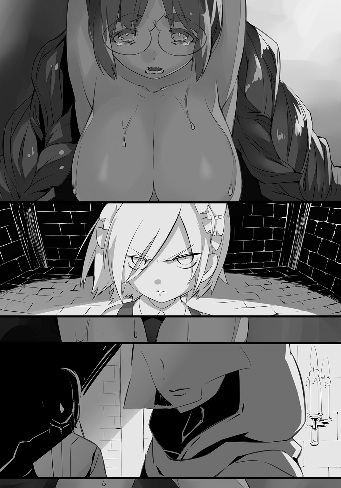
ギチコは眉をハの字にして下唇を突きだした。まあ、だらしない躰をしていることは認めざるをえないし、ルルチナもこの豚めと罵ったことがないわけでもない。とはいえ、リリスに言われると腹が立つ。
ルルチナは両足を肩幅くらいに開いて、少し腰を落とした。両手を開く。握る。また開いて、きつく握った。
伯爵とリリスを殺す。即座に叩き殺す。そして、ギチコを連れて逃げる。その前に、伯爵とリリスの死体を処分して、発覚しないようにする。そういう仕事も経験があるのだ。やってやれないことはない。
「早まるな、ルルチナ」
伯爵は懐からナイフを出して、ギチコの乳房に突き刺した。
「うきっ......」
ギチコは身を震わせたが、暴れはしなかった。
伯爵はギチコの左乳に刺さっているナイフを小刻みに動かした。
「この女がどうなるかは、おまえ次第なのだぞ、ルルチナ」
「......いっ......くっ......あっ......！」
「やめろ！」
「おまえ次第だと言っているではないか」
「――何をさせようってんだ。何が望みだ......！」
「そうだ、ルルチナ。おまえにしてもらいたいことがある。言うとおりにすれば、この女はこれ以上、痛ましい傷を負わずにすむ。加えて、公女殿下にふたたび会わせてもやろう」
「ル、ルル、チナ......」
ギチコは唇を嚙みしめて、首を左右に振った。眼鏡がずれた。
「だ、だめ......！ 言うこと、聞いちゃ！ いけない......！ です......！」
「健気なことだ」
伯爵は低く笑いながら、ギチコの乳房からナイフを引き抜いた。
間を置かず、今度は脇腹に刃を当てて引いた。
「ぅぅぅっ......！ う、あっ......！」
「繰り返すぞ、ルルチナ。すべてはおまえ次第なのだ」
「......その女は、単なる侍女にすぎねえ」
ルルチナは目が眩みそうな怒りを必死で抑えつけなければならなかった。
「同僚だから、義理だの情だのがないわけじゃねえけどな。人質としての価値を大きく見積もりすぎると、しっぺ返しを食うことになるぜ」
「しっぺ返しなら、もう食っている。ルルチナ。私はおまえに裏切られた。あまつさえ、何人もの息子の、娘の命を、おまえに奪われたのだ」
「そうですわ、お父様」
リリスが伯爵の肩にしなだれかかった。
「お姉様には、謝罪していただかないといけないのではありません？ まずはそれからだと思いますわ」
「ああ、そうだな、リリス。言われてみれば、そのとおりだ」
伯爵はギチコの脇腹にナイフを突き入れながら言った。
「床に額をこすりつけて、詫びよ、ルルチナ。過ちを犯したことを反省してみせろ」
「......うっ......くっ......ぃぃぃぃっ......！」
ギチコは白目を剝いて、泡を吹きそうになっている。伯爵。あの男は、効率的、効果的に人を痛めつける術を知り抜いているのだ。
「さあ、ルルチナ。許しを請え。そのあとで、おまえにしてもらいことを話してやる」
×
――三日。
何の手も打てないでいるうちに、なんと三日も過ぎてしまった。
ハイジは部屋の隅にうずくまって味のしないチーズを囓りながら、ここからの脱出法と自死するための方法を交互に考えていた。もちろん、本気で自死するつもりなどないが、もしかするとずっとこのままかもしれない。老いさらばえて死ぬまで、ここから出られないかもしれない。食事や飲み物を与えられなければ、老いることすらできずに死んでしまうだろう。
外部との接点は、狭すぎる窓と、扉下部の隙間だけだ。
窓から風や光が入りこんでくるのはありがたいが、寒くなってきたらそうも言っていられないだろう。もし窓の幅がもっと広くて出入りできたとしても、この部屋はかなり高層に位置している。落ちたらまず、というか確実に助からない。
扉下部の隙間からトレーが差し入れられる瞬間に、声をかけてみる、ということも試した。返答はなかった。ハイジの声が届いたかどうかも定かじゃない。
いくら探しても、望みらしきものは見つからなかった。
自分はこのまま死ぬのかもしれない、という思いは、死ぬんだろうな、という考えに変わりつつある。
情けないぞ、しっかりしろ、そう自分自身を叱咤しても、気持ちがしゃんとしてくれない。
こんなものか、と失望を感じてもいる。
ハイジ・バランはこの程度のものでしかなかったのか。
あるいは、思いあがっていたのかもしれない。
公立学校を出てみたら、たまたまイエルヴァラに配属され、公女殿下にお仕えすることになって、実戦を経験した。貴族じゃない、ド庶民なのに、魔性を持っていることが判明したりもした。たしかに、いろいろなことがあった。普通ではできない経験をした。そのせいで、自分は何か特別な人間だと勘違いしてはいなかったか？ 人にはできないことが自分にはできる、なしえるのだと、いつしか思いこむようになっていたんじゃないのか？
用心深さが足りなかった。思慮が浅かった。おかげで、こんなふうに監禁されている。それでもなんとかなりそうな気が、最初はしていなくもなかった。お気楽なことだ。馬鹿そのものだ。どうにもならない。きっと終わりなのだ。何もかも終わった。ハイジ・バランは死ぬ。遅かれ早かれ、ここでハイジの人生は終わる。
こんな死に方をするなんて、想像だにしていなかった。
それがそもそも甘いのだ。大甘だ。こういうこともありうると、ちゃんと想定して行動しなければならなかった。
今さら反省しても遅い。
手遅れなのに、これから死ぬまで、延々と後悔しつづけるのだろう。
それくらいなら、本当に自ら命を絶ってしまいたい。そうしたほうが楽だ。できなくはない。その気になればまあ、可能だ。壁に頭をぶつけて打ち砕いてもいい。舌を嚙み切ってもいい。自分の手で首を絞めてもいい。
どうせなら、扉に体当たりをしようか？
可能性は低そうだが、ひょっとしたら扉を破壊して、脱出できるかもしれない。ただ自死を目論んで、自分の躰を傷つけるよりは建設的なんじゃないか？
「......やるか」
そうだ。
何もしないよりはましだ。一か八か、やってやる。
ハイジはむっくりと立ち上がった。チーズを捨てて、踏みつける。
扉の前に移動した。
下がる。後退する。壁際まで下がった。最大の助走距離をとって、ハイジは駆けだそうとした。そのときだった。
扉がガシャガシャ鳴った。そして、開いた。ハイジは仰天した。解錠して扉を開けたらしき大王国の兵士と共に、彼女が立っていたからだ。
「お迎えにあがりました、中尉」
「......ルルチナ、さん？」
×
ルルチナに連れられて、ハイジは上層市内の何箇所かを巡ることになった。そこにはそれぞれ、公女殿下の随員が閉じこめられていた。
ラウリ・ニカ大尉、それからボル軍曹と、第八公軍諜報大隊出身のオーラン伍長。あとは随行文官のモルケン書記官に、ファニス准書記官。
随行文官はそもそも二人しか生き残っていないので、全員ということになる。随行武官については、下士官以上だろう。
ルルチナを入れて、七人。
立派な館に案内されて、入浴、食事、そして着替えをさせられた。衣服は用意されていた。武官はデスティニア公国軍の礼服で、文官はこれまた公国式の正装だった。なぜこんなものが準備されているのか。不思議だったし、ルルチナに尋ねたが、答えはなかった。何か事情があるのだろうとは思うが、ルルチナはまるで大王国の意向に沿って動いているかのようだ。どうにも疑わしい。ギチコはどうしたのだろう？ ハイジはそれも訊いてみたのだが、やはり返事はなかった。
身繕いが終わると、ルルチナは皆にこう言い渡した。
「これから皆様には式に出席していただきます」
「式とは？」
短く問うたニカ大尉は、相変わらず何を考えているのかわからない。すべてを淡々と受け止めているようにも見えるが、企みがあるようにも思える。
「むろん」
ルルチナは目を伏せて、大尉と視線を合わせずに言った。
「サクラスティアリス公女殿下とアスタロス大王太子の結婚式です」
「はああああああああああああああああぁぁぁぁぁぁぁぁぁぁぁぁぁぁぁぁぁぁぁい......!?」
ハイジは思わず大声で叫んでしまった。
ルルチナはわずかに顔をしかめて、ため息をついた。
「急ではありますが、もとよりゆくゆくはそうなると決まっていたことです」
「いや、いや、そ、それは、そう、です......けど......で、でも、そんな、まさかいきなり、だって、ねえ......？」
力が抜けた。ハイジは床にへたりこんだ。
「......結婚......結婚式......そんなぁ......しょうがないっていうか、だけど......ええぇぇ......」
「そんな簡単にいくのかな」
大尉が癖毛を指に絡めながら呟いた。
「宣誓とか、証文とか、いろいろ手続きがあるはずだ」
モルケン書記官がああだこうだと大尉の意見を支持するようなことを述べたが、ハイジは半分茫然自失としながらも、そんなの問題じゃないと思っていた。この国には、大王太子に嫁ごうという公女殿下とその一行に危害を加えるようなでたらめな連中がいる。というか、そういうでたらめな国なのだろう。手続きもへったくれもあるものか。めちゃくちゃなのだ。やると言ったら強行するだろう。
「サプライズだそうです」
ルルチナはそう言ったあと、軽く唇を嚙んだ。ただ、口調は変えなかった。
「大王太子がお好みになっている趣向だとか。ともあれ、皆様におかれましては、デスティニア公国代表として、式に出ていただきます」
「どうして？」
と大尉が訊いた。
「どうして、と申されますと？」
「なぜ、そんなことを侍女風情に命令されなきゃならない？」
「失礼いたしました」
ルルチナは肘を張って腹の下を両手で押さえ、深く、深く、頭を下げた。
「皆様におかれましては、ディスティニア公国代表として、結婚式に出席していただけるよう、謹んでお願い申し上げます。――さもなくば、皆様も、また、いまだ拘束されている方々も、消息不明である旨、公国に伝達されるとのことです」
「......脅しってことですか」
ボル軍曹が唸った。かなり憤っているようだ。
「逆らえないな」
ニカ大尉はあっさり白旗をあげた。
「我々は人質をとられている。言うとおりにするしかない」
「申し訳ありません」
ルルチナは頭を上げようとしない。声は冷たく、腰を直角以上に曲げた小さな躰は微動だにしなかった。
でも、一向に現実感がわかない。用意ができると、ハイジたちは迎えの馬車に乗って大王宮へと向かった。馬車には窓があったのでハイジは外を見ていたのだが、上層市は静かだった。祝賀ムードらしきものは微塵も感じない。大王太子が結婚するのに、これってどうなの？
古くて荘厳で、それ自体が一個の壮大すぎる彫刻のような大王宮にも、とくに華々しい雰囲気はなかった。ただ、警備はずいぶん厳重で、入城前に念入りな身体検査を受けた。
城内の構造は、防御のためかやたらと複雑で、迷路のようだった。ハイジたちは応接間らしい部屋に通されたのだが、先客が大勢いた。それでもまったく手狭ではないほど、その部屋は広々としていた。椅子だのソファだのテーブルだのがたくさんあって、給仕係らしいきちっとした服装の男性に、おくつろぎください、と言われはしたものの、無理に決まっている。ソファに腰を下ろしたのはニカ大尉だけだった。あとはハイジ以下、みんな大尉の近くに突っ立っている。ルルチナは黙ってハイジたちの後ろに控えていた。
あの先客たちも結婚式の出席者なのだろうか。
一人の女性に目がとまった。
「......噓」
ハイジは唾をのみこんで、何度も見なおした。
その女性は、卓を囲む椅子に腰かけて、男性数名と談笑している。
真っ赤な、燃えるような髪。
黄色い瞳。
やや下がり目の、甘い美貌。
ハイジは慌ててニカ大尉に囁きかけた。
「......大尉。帝国人がいます」
「ああ、知ってる」
「え」
「あれだろ」
大尉は女性らのほうを目で示した。
「あの男は帝国の祭服を着てる。そうとうな高官だ。臣四位かな」
「臣四位......」
ハイジも当然、帝国の階級制度に関する一般的な知識くらいは持ちあわせている。
帝国では、人は二十三の臣位と、十二の人位、七の下位に分けられ、下位の者は国民と見なされない。奴隷だ。
臣位を持つ者は臣民、人位を持つ者は人民で、臣一位がもっとも位が上、つまり一番偉くて、以下、臣二位、臣三位......臣二十三位、人一位、人二位......といった具合に並ぶ。偉くなるとそのぶん、義務が増えたりもするようだが、臣民は役職に就いて帝国のために働くことで、給料や所領を与えられる。
臣四位は、公国軍人でいえば元帥クラスのはずだ。
「すごいっ......大物――ですね......!?」
女性と卓を囲んでいる男性は三人。大尉が臣四位だという男がどれかは、すぐにわかった。一目瞭然だ。あからさまに仕立てがいい、たっぷりしていながらすっきりした白と黒の服を着て、飾り紐が垂れ下がる筒のような形の帽子を被っている。
「......で、でも、けっこう若い......人のような？」
東大陸人の年齢はわかりづらいが、たぶん三十歳になっていないだろう。細面で、細い口髭を生やしている。切れ長の目。それとも、ただ若く見えるだけなのか？
「軍人じゃないな」
ニカ大尉は顎をさわった。
「外交官か。あの年齢であの位なら、宮家の人間かもしれない。狗塚宮久手紘......？」
「お知り合い......なんですか？」
「まさか。でも、有名人だ。敵対国を威圧、恫喝して、降伏させる」
「そんな人が、どうしてここに......？」
「まだあれが狗塚宮だと決まったわけじゃない」
「それは、そうですけど――あ」
ハイジはこっそり女性を指さした。
「あの女の人。......アナスタシヤ・ザラナスターです。廃王ジークの妹の」
「魔性持ちか」
「あっ。そ、そうです。あの人、魔性を持ってます。ええと、たしか......負傷した廃王ジークを抱きしめたら、あの人に吸いこまれるように......消えちゃって。〝業突く張りの牢獄迷宮〟とか、言っていたような」
「人を消せる？」
「......わかりませんけど。そういうことが起こったのは、間違いないです。この目でしっかり見たので」
「廃王ジークはいない」
「はい。いません。少なくとも、この部屋には」
「ちょっと考える」
ニカ大尉は腕組みをして目をつぶった。唇が動いている。そばにいても聞きとれないほどの小声で何か呟いているようだ。
「妙ですな......」
ボル軍曹が不安げな面持ちで言った。
「本来はおめでたい席だってのに......」
「そ......そう、です......よ、ね......」
「あ、すみません、中尉。少々無神経でした」
「いや、なんでおやっさんが謝るんですか......？ そんな、謝らないでください......なんかこう、かえって落ちこむので......」
「そうですか......」
「落ちこんでる場合じゃないんですけど......」
ハイジはルルチナの様子をうかがった。ルルチナは思いつめたような表情で、うつむいている。一人で何か大変なことを抱えこんでいるのか。打ち明けてくれればいいのに。
アナスタシヤのほうに視線を向けると、目が合った。
微かにだが、アナスタシヤは笑った。
ちょっぴり顔をほころばせただけで、砂糖菓子の香りが漂ってきそうなほど甘ったるい。それでいて、なぜだかハイジはぞっとした。
とりあえず、アナスタシヤがハイジをハイジだと認識していることだけは確実だろう。
兄である廃王がいないということは、ひょっとして――そうとうな深手を負わせたから、助からなかったのかもしれない。もしそうだとしたら、アナスタシヤにとってハイジは兄の仇ということになる。でも、それならあんなふうに笑ったりするだろうか？ 憎々しげに睨みつけるあたりが普通の反応ではないか？ ああいう女だから、普通じゃないのかもしれないが。
ハイジは腰の剣に手をやった。剣といっても、鞘に収めていれば本物にしか見えないものの、抜くと10センチルほどしかない。しかも、銀の塗料を塗ってあるだけで、木製だ。武官が典礼の際に身につける飾り物で、実用性は皆無に近い。というか、皆無だ。
宝剣ワイバーンは、あの塔に幽閉される前に没収された。物が物だけに、必ず取り戻したい。だが、返せと要求したところで、すんなりと返してもらえるだろうか。
せめて、ちゃんと使える剣が一振りでいいから欲しい。
剣でなくても、この際、武器にできる物なら何だっていい。
何かが起こる。
そんな予感だけはあった。しかし、何が起こるというのか？
公女殿下が大王太子と結婚する以上の、とんでもないことが起こるというのか？
結婚。
――公女殿下が結婚する。
それも、あの怪物と。
噓だ。
信じたくない。
どれだけハイジが否定しようとしても、そのときは来てしまった。
濃紺の礼服を着てきんきらきんの帽子を被った男が応接間に入ってきて、歌うような調子で言った。
「本日はぁー、ご一同様、お集まりいただきぃー、まことにぃー、ありがとぉー、ございまぁーすぅー。ただいまよりぃー、我がカバラ大王国ぅー、アスタロス大王太子殿下ぁー、並びにぃー、我が永年の臣国ぅー、デスティニア公国ぅー、ドリアン公が息女ぉー、サクラスティアリスぅー、デスティニアリス公女殿下のぉー、ご成婚の儀をぉー、執り行いますればぁー、ご一同様ぁー、大王宮、大広間にぃー、お移りいただきたくぅー、願い奉りまぁーすぅー」
ハイジには滑稽に聞こえたが、べつにふざけているわけではないようだ。何しろ歴史のある国なので、現代人にとっては珍妙に感じる風習や儀礼があったりするのかもしれない。
来賓はぞくぞくと応接間から出てゆく。
ハイジたちもつづいた。
大広間への道筋も複雑怪奇だった。いざというとき、迷わずに自力でこの大王宮から出られるだろうか。正直、ハイジは自信がない。
大広間は、さっきまでいた応接間なんてものではない、屋内とは思えないほど広大だった。天井もずいぶん高い。床には磨き抜かれた白い大理石が敷き詰められている。無数に並べられた長方形のテーブルと椅子は黒い大理石製だ。
天井には濃紺色の長旗が吊られている。一本や二本じゃない。数百本だ。
大広間の中央には黒い絨毯敷きの道ができている。道は大広間の奥までつづいて、その向こうは階段状に高くなり、壇になっていた。
壇上には椅子が四つ設えられている。
中央に一際大きな玉座があり、その隣に玉座よりもだいぶほっそりしている椅子が、そして、この二つの手前、左右の外側に一つずつ。
来賓は、あの応接間以外にも待機していたようで、三百人ほどはいるだろうか。髪型や服装からすると、大半は大王国の貴族のようだ。とはいえ、大広間の広さにわりには、かなり少ないという印象を受ける。濃紺の礼服に金ぴかの装甲やら兜やらを身につけ、やはり金ぴかの斧槍、剣、盾で武装した兵士のほうがずっと数が多い。出入り口や、テーブルごと、また、黒い絨毯の道沿いに配置された兵士の人数は、千をゆうに超えるだろう。
他には、総勢百人ほどの楽団がいる。
案内役や、給仕もたくさんいた。
ハイジたちは案内役に導かれて、かなり奥のほうのテーブル席についた。一応、形としてはデスティニア公国代表なので、壇の近くに席が用意されたらしい。
絨毯の道を挟んで斜め向かいのテーブル席には、アナスタシヤたちがいる。
なぜ敵であるはずの帝国人が大王太子の結婚式に招かれているのか？ 大王国にとっては、敵ではないということなのだろうか？ 仮にそうだとしたら、大王国は公国を裏切っている、ということになる。
そのうち楽団が演奏を開始した。荘厳なのに華やかで、陽気なのに陰気な、聴いていると精神が搔き乱されてしまいそうな音楽だった。
「バエル大王陛下ぁー、並びにぃー、エリカルリス大王妃陛下のぉー、おなぁーりぃー」
例の調子外れな、しかし一人の人間が出しているとは思えないほど大音量の呼び声が、大広間に響き渡る。
音楽が変調して、兵士たちが一斉に向きを変え、斧槍を掲げた。
「大王陛下万歳！」
「カバラ大王国万歳！」
「永遠なれ、カバラ大王国！」
「大王陛下万歳！」
兵士たちと貴族たちが唱和した。
黒い絨毯の道を、王冠を頂いた老人と、やはり冠を被った女性が歩いてくる。
在位三十八年、当年とって七十二歳。むろん、七十歳を超えているのだから高齢だが、もっと年老いているように見える。
バエル大王が羽織っている華美なガウンは、床に届いてなお余るほど丈が長い。老大王はそれをじつに重そうに引きずって歩いている。手にしている大王錫は、権威の象徴などではなくて、歩行を補助するための杖でしかないのではないか。腰が曲がっているわけでも、足どりが覚束ないわけでもないのだが、老衰して死にかけている年寄りにしか見えない。
一方、同じくらい裾が長いドレスを着て、老大王の後ろを歩く女性は、生気に満ちあふれている。黄色がかった赤い髪は艶やかで、赤紫色の瞳は輝かしい。上背があり、胸は豊かで、細い腰が高い位置にある。大王妃を美女と評しない者は地上に存在しないだろう。
ハイジはむろん、初めて目にした。
たしかに美しいが、公女殿下とは似ていない。
やっぱり公女殿下が世界最高だ、と思った瞬間、胸が張り裂けそうになった。世界最高の公女殿下が、これから怪物の妻になるのだ......。
大王と大王妃が壇上の玉座とその隣の椅子に腰を埋めると、また呼び声が轟いた。
「アスタロス大王太子殿下のぉー、おなぁーりぃー」
音楽が、今度はおそらく、別の曲に切り替わった。兵士たちがまた向きを変える。斧槍は、まっすぐ掲げるのではなくて、斜めに突き上げられた。
来賓の一部が顔をしかめた。わずかにのけぞった者もいる。ハイジは息を詰めた。
あの悪臭のような気配が押し寄せてきて、あたり一帯に立ちこめる。
怪物は、気味悪く太った躰を強調するようなぴったりした純白の衣装を身につけて、金で縁取りした濃紺の飾り帯を斜めがけしている。髪型も、ひどい。十本以上のねじ曲がった角状に固めてある。怪物はやたらとごてごてした冠を被っているが、あの状態で脱ぐことができるのだろうか。きっと無理だ。左手には、かなり長い、反りのある剣を持っている。鞘も、柄も、すばらしく立派だ。伝来の宝剣なのだろう。あるいは、カバラの剣かもしれない。
怪物は嫌がらせのようにゆっくりと黒い絨毯の道を歩いていって、壇上、向かって右側の椅子に腰を下ろした。
なんとなく、来賓たちや、兵士まで、安堵したような気配がある。ハイジもちょっとだけ、ほっとした。これで一息つける、というか。
ところが、怪物はすぐにまた椅子から立って、剣を振り上げた。
たちまち兵士たちは大慌てで背筋をのばし、声をあげた。
「大王太子殿下！」
「アスタロス大王太子殿下万歳！」
「大王太子殿下に栄光あれ！」
貴族たちもそれに倣ったが、どこか、しぶしぶ、という感じがあるのは否めない。
怪物はやっと椅子に座りなおして、右足を左膝の上に載せた。脚を組みたいのだろうが、あの体格ではあれが関の山だろう。
しばらくすると、音楽が止んだ。
いよいよか。
――公女殿下と、会える。
いや、会える、とか。
そういう問題じゃない。もちろん、公女殿下とはお会いしたい、一目でいいからお顔を拝見したい、お声を聞かせていただきたい、それはそうなのだが、ここに公女殿下がおいでになるということは、正式に、公式に、あの怪物に娶られてしまうということなのだ。
それはもう、避けようがない事態なのか？ いまだにハイジはそんなことを考えてしまう。どうにかできないものだろうか？ ぶち壊してしまえないか？ まだ何か方法があるんじゃないのか？ あるよね？ だって、こんなのひどくない？ ひどいよね？ おかしいよ。絶対、おかしいって。
たとえ世界中が認めても、ハイジだけは認めない。認めたくない。認められない。
こんなおかしなことがまかりとおってしまう世の中なら、いっそのこと、この手でぜんぶ、めちゃくちゃにしてしまいたい。
ここには魔性の持ち主がわんさといる。大王も、エリカルリス大王妃も、おそらく大部分の貴族たちも、それにアナスタシヤ・ザラナスター、ルルチナ、そして、あの怪物も魔性持ちだ。ハイジの躰は最高潮に軽い。今のハイジは速い。誰よりも、何よりも、ハイジ・バランは強い。あとは剣だけあればいい。ただ一振りの剣があれば。
そうだ。まっしぐらに駆けていって、あの怪物から宝剣を奪う。怪物は手をふれただけで兵士を殺した。だから何だ。さわられなければいい。ふれられる前に斬り殺してやる。ハイジにはできるだろう。大王国の兵士たちが襲いかかってきたら、手当たり次第に斬り捨てる。間もなくハイジに手向かっても無駄だと皆、悟るはずだ。
ハイジ一人で制圧できる。充分可能だ。
あとは公女殿下を――姫を連れて、逃げればいい。
「おかしなことを考えるな、中尉」
ニカ大尉がハイジの耳許で囁いた。
「少なくとも、まだ早い」
「......まだ？」
「聞いてろ」
大尉が顎をしゃくってみせた。まただ。また怪物が立ち上がった。胸を張るというか腹を突きだし、両腕を広げてみせる。
「式の前に......余から、衷心より謝意を申す」
そこらじゅうから拍手が湧き起こったが、ハイジは手を拍つ気にはなれなかった。怪物は満足げに鼻を鳴らした。
「まずは、バエル大王陛下......我が父君、陛下がおらなければ、当然のことながら、余はここにはおらなんだ......感謝申し上げる......」
老大王はわずかに大王錫を持ち上げてみせた。怪物はつづける。
「次に、エリカルリス大王妃陛下......麗しき我が義母君......我が父君を日々大いに悦ばせ、その偉大なる人生に、よりいっそうの彩りを与え給うている賢妻ぶりに......息子として、感謝申し上げる......」
大王妃は目礼しただけだった。怪物はこっちを向いた。
「そして......我が妻となる、サクラスティアリスを今日まで育みし......我が大王国の忠実なる臣、デスティニア公国の大地と、その代表たる使節団......汝らに、感謝申し上げる......」
「......くっそ」
思わず呟いてしまった。ボル軍曹に腕をつかまれた。
「中尉。......まずいですよ、いくらなんでも」
「わ、わ、わ、わかってます、わかって......」
でも、震えが止まらないのだ。
うおおおおおおおおおおおおおおおおおおおおおおおおおおおおおおおおおおおおおおお。
あの怪物、ぶっ殺してえ。
いけないいけない。本当にいけない。あからさますぎる。
やるにしても、抑えないと。やらないけど。
――少なくとも、今はまだ。
「さらに......」
怪物は、それから帝国人たちのテーブルのほうに目をやった。
「親愛なる帝国の諸氏......とくに、狗塚宮久手紘卿よ......すでに、卿には帝国からのありがたい申し出に対する返事をいたしておるが......色よき返答とは言いがたきものであった......にも関わらず、こたびの招きに応じてもらったこと......感謝申し上げる......」
あの細髭の帝国人は、やはり狗塚宮久手紘だったようだ。
狗塚宮は胸の前で両手の指を組み合わせて、少しだけ頭を下げた。
「もったいなきお言葉でございます、大王太子殿下」
「余としても......そちのような大人に、わざわざ出向いてもらい......その挙句、拒絶するような真似は、本来、しとうはなかったのだが......当方にも、事情があってな。やむをえぬ仕儀であった。許せ......」
「どうかお気になさらぬように。意に染まぬも外交の常です」
「うむ......まこと、ままならぬものよな。そう......じつを申せば、余は陛下と賭けをいたした。余が勝てば、そちの申し出を受けることになっておったのだ。余としては、すっかりそのつもりでおったのだが......負けたのだよ、余は、陛下に。しかし、おかげで余は、世にも美しく、もっとも余にふさわしき妻を迎えることと相成ったのだから、世界神カバラが定め給う運命とは、げに......奇しきものであるよな......ふ、ふ......」
狗塚宮は表情を変えないし、アナスタシヤら帝国人も平然としている。なぜ、平気でいられるのか。ハイジには理解できない。
だって、怪物はあまりにも馬鹿げたことを言っている。
帝国の申し出とやらが何なのかは知らないが、賭け？ 賭けをした？ 大王と大王太子が賭けをして、その結果で返事を決めた？ 帝国の申し出を断ることにしたというのか？
どうもハイジには、自分たちがその賭けとやらに関係していたように思えてならない。
大王太子が賭けに負けて、公女殿下と結婚することになった。ダンタリオン伯爵は公女殿下一行を妨害した。大王太子は伯爵とともに「天国と地獄」で公女殿下を待ち構えていた。
大王太子は内府で、伯爵は右府。伯爵は大王太子を補佐している。
素直に考えれば、大王太子と伯爵は対立関係ではなく、伯爵は大王太子の腹心だろう。
大王太子の意向で、伯爵は公女殿下一行に危害を加えた。
公女殿下が大王都にたどりついて、大王太子は賭けに負けた。
ということは、賭けの内容は、公女殿下が無事、大王都に到着するか否か。ひょっとしたら、いつまでに、といった期日もあったりしたのかもしれない。
いずれにせよ、公女殿下は大王都に現れた。
大王国は帝国の申し出を拒否して、大王太子は公女殿下と結婚する。
何もかもが最悪だ。
何なんだ、この国は。
完全におかしい。まともさの欠片もない。
公女殿下はこんな国の人間になってしまうのか。
「最後に......」
怪物は大広間をぐるりと見回した。
「急だったにもかかわらず......余と、余の花嫁のために集まってくれた者たち、皆に感謝いたす。さあ......さぞかし、待ちかねておることであろう。余の花嫁を、披露しよう。サクラスティアリス・デスティニアリス、改め......サクラスティアリス大王太子妃である......！」
楽団が演奏を再開した。また別の楽曲だ。ハイジは音楽がよくわからない。でも、弦楽器の音色が重なりあい、響きあうこの曲は、つい聴き惚れてしまいそうになるほどすばらしいと思った。不本意ながら、姫だ、と感じた。
これは、姫を表現している。
姫のための音楽だ。
どよめきが起こったが、演奏を妨げるどころか、かえって盛り上げた。
姫が、いや、公女殿下が、黒い絨毯の道を進んでくる。
真っ白だ。
純白のドレスを着て、白いヴェールを被っている。
でも、薔薇のしずくを一滴だけ注いだ白金の髪のきらめきは、ドレスの白よりも清らかで汚れがなく見えた。
そう。公女殿下は汚れを知らない。潔白で、清浄で、真に無垢だ。その輝く肌は、終生、何にも侵されることがないだろう。ふれることすら、叶わないのだから。
ヴェール越しでもわかる。公女殿下は頰紅も口紅もつけていない。素顔のままだ。この場に集う貴族は、男でも化粧をしていたりするのに。
むろん、必要ない。
化粧など施さなくても、公女殿下は完璧だ。足したり引いたりする余地が一切ない。ただそこにいるだけでいいのだ。この世に存在してくれているだけで、何物も及ばないような価値が公女殿下にはある。
ああ、世界に二つしか存在しない宝石、その薄紅色の瞳に見つめられる者は、無上の幸福をえるだろう！
しかし、公女殿下はうつむき加減で、何者も視界に入れまいとしているかのようだ。
あらゆる感情を失っているか、もしくは奪い去られているかのごとき、凍てついた面持ちは、見るだに胸が締めつけられる。
だが、悲しくてたまらないほど、恐ろしくなるくらい、きれいだ。
感極まっている場合じゃない。公女殿下が卓絶して美しいことなんて、とっくに知っている。もし公女殿下を称賛する大会が開催されたら、ハイジは必ず出場するだろう。優勝するために全力を尽くす。賞金や賞品なんかいらない。ただただ褒め称えたいのだ。
でも、今はそれどころじゃない！
見とれてどうする！ 公女殿下は背負わされた過酷な運命の重みに独りで耐えている。なんてけなげなんだ！ 痛ましいんだ！ いじらしい！
世界神カバラのくそったれめ！
できることなら神をこの手でひねり殺して、理不尽な運命なんか破壊してしまいたい！ できなくても、そうしたい！
「......サクラ様」
ルルチナが呟いた。ルルチナは食い入るように公女殿下を見ている。
誰も彼も、公女殿下を見つめている。
神であろうと、たとえ悪霊でも、見ずにはいられまい。
一心に注目を集めている公女殿下が、誰のことも見ていないのだ。
独りだ。
どこまでも、徹底的に、孤独だ。
――呪うぞ、せめて。
所詮、人の身でしかないハイジには、神の姿をとらえることはできない。目に見えもしない神を討ち果たす術はないだろう。
だから、せめて呪う。
全身全霊で。
勝手に与えられた運命なんかに従ってたまるか。甘受したりしない。あらがってやる。戦う。徹底抗戦だ。やってやる。
でも、どうやって......？
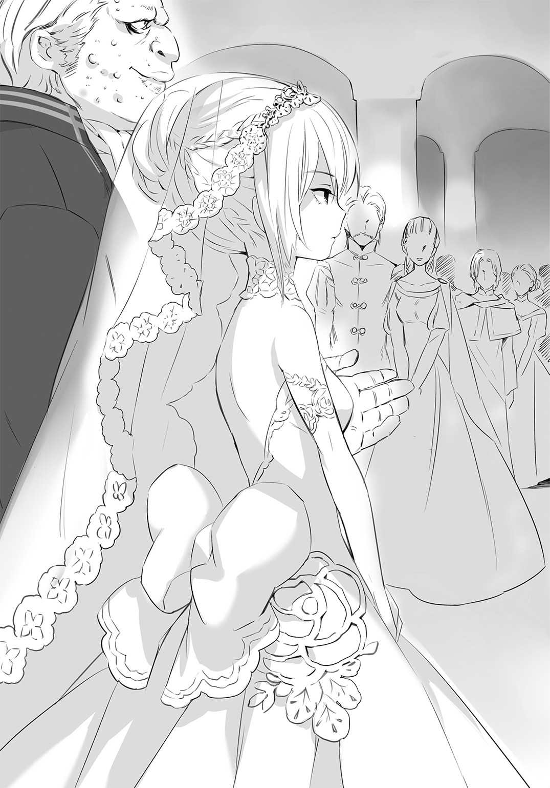
公女殿下がハイジたちの前を通りすぎてゆく。ハイジたちには目もくれずに。
一段、一段、上ってゆく。
壇上に達した公女殿下の後ろ姿は、あまねくすべてを拒絶しているかのようだった。
音楽が止んだ。
「で？」
公女殿下が静かに言った。
「わたしは、どうすれば？」
「んっ、ぐっ、ぐっ......」
怪物が肩を揺らして笑いながら公女殿下に歩み寄る。
「サクラスティアリス......我が花嫁よ。よいのだ......そちは、余の言うとおりにすればいい。ただそれだけでいいのだ......」
「ああそう」
「そうだ......」
怪物は公女殿下の正面に立った。
「誓いの口づけくらいは交わしたいところ......ではあるが、あいにく、そちにふれることは、余であろうと能わぬ......生きておるそちには、な......しかし、死したのちであれば、どうであろうか......？」
「死んだらどうせ、何もわからなくなる。好きにすればいい」
「ほう......そちは、死後の世界や転生を信じぬのか......？」
「信じないし、どうでもいい」
「よかろう......ならば余は、息絶えたそちを、心ゆくまで愛でることとしようか。願わくば、今のまま、美しきそちを堪能したいものだ。この結婚は、さしづめ......そちの屍をもらい受ける、契約のようなものだな......ぐっ、ふっ、ふっ、ぐっ......」
いちいち異常でおぞましいことしか言わない怪物だ。本当の本当に、本気で、抹殺したい。あんな怪物は粉微塵にして焼却してしまったほうが世のため人のためじゃないか？ 反論できる者なんていないんじゃ？
今、やるべきだ。
できるなら。
「さあ、余の隣へ......」
うながされ、公女殿下が怪物の右隣に移動してこちらに向きなおった。
とても揃っているようには見えないが揃いなのだろう白い衣装を身にまとった新郎新婦が並び立つと、金管楽器が高らかに吹き鳴らされた。楽団が祝いの楽曲を演奏しはじめる。
当然、ハイジは喜ぶ気になんかなれない。ただ、だしぬけに白い無数の花びらのようなものがひらひらと降ってきたのには驚いたし、一瞬、美しい光景だと思ってしまった。
あとからあとから舞い落ちてくる白いものは、掌で受け止めてみると、やはり花びらのようだ。しかも、作り物ではない。たぶん本物だ。
いったいどこから、どんな仕掛けで降らせているのか。見当もつかない。
黒い絨毯の道を、絢爛豪華な装いの行列が進んでくる。
先頭は輿に乗せられた、あの老大王よりも確実に年を食っている死体とみまごう老人だ。ぴくりともしないので、実際、死体なのかもしれない。あれがおそらく左府のマルサス侯爵なのだろう。
右府のダンタリオン伯爵もいる。リリスもいる。二人とも、ふんだんに金銀宝石をあしらった華々しい盛装だ。もっとも、リリスは相変わらず黒いヴェールで顔を隠している。
行列の他の男女も、高位顕職の者と、その眷属や従者なのだろう。彼ら、彼女らは、列席者たちにきらきらしたものを振りかけてゆく。どうやら、金箔や小粒の宝石らしい。もっと大きいものがたまに混じる。あれは宝飾品だろうか。
死体に違いないとさえ思っていたマルサス侯爵が右手を持ち上げ、手招きするように動かした。ダンタリオン伯爵が、さあどうぞ、どうぞ、と列席者たちを招き寄せる。列席者たちはテーブルから離れて行列に加わった。行列に加わると、籠を渡される。籠の中身は金箔や宝石、宝飾品らしい。これからみんなであれをばらまき、投げつけあって、お祭り騒ぎでもしようというのか。
派手派手しくて、喜ぶ者は大喜びしているが、くだらない趣向だ。ハイジは呆れ果てていた。大王国の栄華は見る影もなく、衰退、いや、没落していると言ってもいいだろう。こんなふうに濫費、散財する余裕があるとは思えない。
何が結婚だ。結婚式だ。頭にくる。ハイジはなんだか悔しくなってきた。大声で叫んで、誰も彼も罵りたい気分だ。
帝国人たちも行列に加わった。よくやるよ、と思わずにいられない。申し出とやらを撥ねつけられた上、あんなことをさせられる。愚弄されているようなものじゃないか。
行列がハイジたちのところに来た。ハイジはニカ大尉を見た。ニカ大尉は無表情で、黒い絨毯の道に出ようとしている。大尉が行くなら、ボル軍曹たちは倣うしかない。もちろん、ハイジもそうだ。腹が立ってしょうがない、が――、
このまま行列に混ざれば、もっと公女殿下に近づけるかもしれない。
そんな思いつきが頭をよぎった。
まあ、どっちにしても、流れ的にしょうがない......よね？
ハイジはニカ大尉を追おうとした。
「ハイジ・バラン中尉」
後ろから呼び止められた。
振り返ると、ルルチナに見据えられた。
両手に抜き身のナイフを持っている。――ナイフ？
ナイフ、なのか。いや、でも、ただのナイフじゃない。先端の尖った厚手の刃が、螺旋状にねじれている。
あの構造は危険だ。あれはよく刺さる。刺して、ひねれば、大出血するだろう。
一刺しで確実に致命傷を与えられる。
魔性を持つルルチナがあんなものを使ったら。
なぜ、ルルチナがあんなものを。
「申し訳ありません。......こうするしかないのです」
「こうするって」
「ギチコはともかく、あの化物の手に落ちたら、サクラ様といえど――」
ルルチナは螺旋ナイフを握りなおした。緑色の瞳が強い光を放つ。――そういうことか。
ハイジたちと同じく、ルルチナも拘束された。でも、一足早く解放されて、ここまでハイジたちを連れてきた。
ルルチナは大王太子一派に脅されたのだ。何かを要求されて、それをしなければ、ギチコ、そして公女殿下の命はない、と。
周知のとおり、公女殿下は魔性のおかげで戦場では敵なしだ。とはいえ、人は必ずしも剣で刺されたり槍や矢で貫かれたりして死ぬわけではない。毒でも死ぬ。餓えても、渇いても死ぬ。息ができなくても死ぬ。公女殿下の生命を絶つ手段がないわけではないだろう。
ルルチナは相手に従うしかなかった。突きつけられた、その要求とは？
螺旋ナイフ。
ハイジに謝った。
殺す？ ハイジを？ あるいは、ハイジたちを？
公女殿下の目の前で。
ルルチナの手によって。
――だめじゃないか。
いけない。
だめだ。壊れるよ。
そんな惨劇を見せつけられたら、姫の心が壊れてしまう。――それが、目的......？
「ルルチナさん、やめっ――」
ハイジが制止する前に、ルルチナは低い姿勢で駆けだしていた。防げるか。防ぐ。防がないと。中途半端はだめだ。止める。ハイジがやるのだ。そうしないと、他の誰かが殺られるかもしれない。ルルチナが誰か一人でも殺してしまったら、姫は回復しがたい傷を精神に負うことになるだろう。でも、どう止める？ 考えてもわからない。躰だ。委ねろ。本能だ。
ハイジは右手でルルチナの左手首をつかんだ。左手は、ルルチナの右手首には届かなかった。だから、左手で螺旋ナイフを受け止めた。
ルルチナが右手で繰りだした螺旋ナイフは、ハイジの左掌をあっさりと貫通した。引き抜かせない。螺旋ナイフの鍔ごと、左手でルルチナの右手を握りしめた。
ルルチナは目を瞠って、たぶん反射的にだろう、ハイジの腹部に膝蹴りをぶちこんだ。ハイジはよけなかった。よけようがない。逆に前に出て、少し勢いを殺した。それでもだいぶきいたが、力はゆるめない。ゆるめるわけにはいかない。
「だめだよ、ルルチナさん......！ あなたなら、わかるはずだろ......!?」
「――中尉！ だけど......！ はっ――」
ルルチナがハイジの肩越しに行列のほうを見た。
牽制だろうか？ ハイジの注意をそらして、その間に攻撃しようとしている......？
いや、違う。ルルチナがこの期に及んでそんな姑息なことをするとは思えない。ということは、何かあったのだ。
ハイジは振り向いた。マルサス侯爵を乗せた輿が傾いている。輿を担いでいる男たちが揉みあっていた。いや、担ぎ手に誰かがつかみかかっているのか。
輿が倒れる。
マルサス侯爵が落下した。
何だ？
何が起こっている？
炎が奔った――ように見えた。
赤い髪。女だ。
アナスタシヤ・ザラナスターが行列の中を駆け抜けて、先頭に飛びだした。
そびやかせた胸の下で腕組みをして、右足を前に出す。
黄色い瞳が鮮烈な光を放った。
「〝業突く張りの牢獄迷宮〟......！」
「――なっ......」
あのときは、廃王ジークがアナスタシヤに吸いこまれるようにして、消えた。跡形もなく。
今回は、そうではなかった。
ある意味、逆だった。
アナスタシヤの右膝が上がる。腿が高く持ち上がる。
なぜなら、アナスタシヤの右足の下に、さっきまではなかったものが出現したからだ。
妹と同じ赤い髪。やはり妹と同じ、黄色い眼。甘い、端整な容貌。仰々しい装い。
兄はひざまずいている。
なぜか、妹の右足の下で。
踏まれている。
妹の右足が、ひざまずく兄の頭頂部を踏んづけている。
「お行きなさい、お兄様。役目を果たし、今度こそ主上のご期待に応えるのです」
「了解だ、我が妹よ」
兄が答えると、妹は兄の頭から右足をどけた。
廃王ジーク。
ジーク・ザラナスターが疾駆する。
壇の下にいた兵士が金ぴかの斧槍と盾を構えて行く手に立ちふさがったが、ジークを止めることはできない。
「〝爆炎の叛逆者〟......！」
爆発。
爆発。
爆発。
光が閃き、爆音が轟いて、熱が、炎が、噴き上がる。
斧槍は兵士たちごと撥ね飛ばされた。
廃王ジークは見る間に壇上まで駆け上がった。
「久方ぶりだ、麗しき公女よ......！」
「っ......」
公女殿下は身構えた。でも、腰が引けている。驚愕しているのだ。無理もない。今、仰天していないのは、仕掛けた側だけだろう。
「きさま......！」
大王太子は一歩、二歩とあとずさりした。
「ふっ......」
廃王ジークが大王太子に襲いかかる。
――と、見せかけて、その脇をすり抜けた。
ということは。
狙いは......バエル大王！
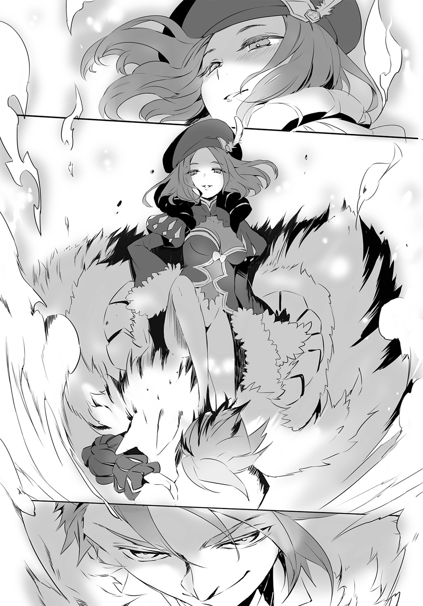
老大王は玉座の上でただただ身をすくませている。もはや老いさらばえた大王の身を守る者はいない。――いや。
「狼藉者......！」
大王妃。
エリカルリス大王妃が立ち上がるなり、跳んだ。すごい。なんて脚力だ。あれは魔性に違いない。
蹴りだ。
廃王ジークに跳び蹴りをぶちかます。
あの蹴りは、ハイジでも躱せるかどうか。
でも、躱す必要がない。エリカルリス大王妃の蹴りは廃王ジークは顔面に炸裂した。文字どおり、それは炸裂だった。
爆発。
「――くっ......!?」
エリカルリス大王妃は、爆風で吹っ飛ばされた。裾の長いドレスが燃えて、弾け飛ぶ。
「姉様......！」
公女殿下が動きだそうとした。
そのときにはもう、廃王ジークは老大王に迫っていた。
「さらばだ、古く淀んだ血の愚かなる主よ」
「――下郎がぁ......！」
老大王は抵抗しようとしたのかもしれない。深い穴のような目が白く輝くのを、ハイジはたしかに見た。だが、一瞬だった。
一瞬後には、廃王ジークの右踵が老大王の顔の下半分を踏み砕いていた。
「陛下......！」
「大王陛下......！」
「陛下ぁ......！」
悲鳴が、怒号が飛び交った。いつの間にか、楽団の演奏が止まっている。あれは即死だ。
死んだ。
大王が殺された。
「下手人を捕らえろ......！」
誰かがそんなことを叫んだ。捕らえる？ 悠長すぎる。馬鹿じゃないのか？
相手は魔性を持つ廃王だ。どう考えても、殺るか、殺られるか。それしかない。
ルルチナは呆気にとられているようだ。この展開はまったくルルチナの与り知るところじゃない。それは確実だろう。ルルチナにこんなことをさせようとした者――おそらく大王太子一派もまた、知らなかったはずだ。
ハイジは螺旋ナイフを左手から引き抜いた。
「......づうぅっっっ」
痛い。これは痛い。猛烈な痛みが脳天まで響く。穴だ。左手に穴があいている。骨も砕かれているみたいだし、ものすごい出血だ。
「ちゅ、中尉......！ ごめんなさい、なんてことを――」
「平気です......！」
左手は使い物になりそうにないが、しょうがない。ニカ大尉を捜した。いた。そう遠くない。大尉が行列に加わる前に、事が起こったようだ。大尉は壇上ではなくて、行列がやってきた方向、大広間の出入り口のほうに目をやっている。ハイジもそっちを見た。
「逃げている......!?」
何だ？ どういうことなのか？
アナスタシヤや狗塚宮ら、帝国人たちが逃走するのはわかる。でも、それだけじゃない。大王国の貴族たちも、全員ではないが、出入り口方面に向かっている。まるで行列が逆流しているかのようだ。おかげで、兵士たちは帝国人に手を出せない。あれでは、貴族たちが帝国人を庇っているようなものだ。何をやっているんだ......！
あるいは実際、そうなのか？
貴族たちは、ただ恐れ、混乱して、この場から逃れようとしているだけなのかもしれない。それか、少なくとも一部の貴族は帝国人と結託していて、やつらが落ち延びるのを手助けしているのかもしれない。あらかじめそういう手筈になっていたのかもしれない。帝国人がしでかしたことを考えれば、それくらいの手回しをしていたとしても不思議じゃないだろう。
「まだ、我々の公女だ......！」
ニカ大尉が叫んだ。
「公女殿下を確保、脱出を図る......！」
そうだ。結婚式の途中で、誓いも何もしていない。公女殿下はまだ怪物の妻になっていないのだ。もちろん、もしそうじゃなくたって、関係ないけれど。
「行こう、ルルチナさん......！」
声をかけると、ルルチナは瞬間、迷うそぶりをみせた。でも、うなずいてくれた。
ハイジは壇上の公女殿下めがけて走った。右往左往している兵士がいたので、右手で斧槍をぶんどった。
「貸して！ あとで返します......！」
ルルチナ、ニカ大尉、ボル軍曹、オーラン伍長、それに二人の文官もついてくる。
廃王ジークは怪物に躍りかかった。
「滅びゆく定めには従うものだ......！」
「うひいっ......！」
怪物は転がって逃げる。なかなか素早い。怪物も必死だ。
「何なの、いったい......!?」
と、公女殿下が廃王ジークに殴りかかった。廃王ジークはよけない。爆発。公女殿下は押し返された。そんな、怪物を守ってやるような真似をしなくても......！
「ルルチナ・リリーローエン......！」
――って、今度は何だ......!?
見れば、ぐちゃぐちゃになっている行列の中から、リリスが飛びだしてきた。両手に短剣。リリスはルルチナめがけて突進する。
「リリス......！」
ルルチナは螺旋ナイフで迎え撃つ。するっ......と、抜け――ない。二人は短剣と螺旋ナイフで打ちあっている。リリスは魔性を発動させていない。発動させない理由が何かあるのか？ あるいは、できない？ 制約か......？
「ここはルルチナが......！ どうかサクラ様を......！」
「行け、中尉......！」
大尉に命じられた瞬間、ハイジは強風に背中を押されたように感じた。
行け。
行け！
行け......！
もう何も考えなくていい、考えるな！
行くんだ！
公女殿下の――いや！
姫の許へ！
「廃王ジィィィィィィィィィィィィィィィィィィィィィィィィィィィーク......ッッッッッ！」
「ほお」
廃王ジークがハイジを見て薄く笑った。
「いつぞやの少年ではないか」
「少年じゃない！」
ハイジは加速した。近くにこれだけ魔性を持つ者がいる。左手は使えないが、たいした問題じゃない。
「僕は男だ......！」
「ほざけ......！」
「おおおおおおおおおおおおおおおおおおおおおおおおおおおおおおおおおおおおお......！」
駆けながら、右手の中で柄を滑らせた。斧槍を短く持ちなおす。
長さはいらない。今は速さが最重要だ。
廃王ジークの魔性〝爆炎の叛逆者〟は反射系。だが、自動で発動はしない。
弱点はわかっている。
超えろ。
廃王ジークの反応速度を。
やつが魔性を発動させる前に――殺る。
一撃で、しとめる。
ハイジは右へ、つづいて左へ動いてみせた。廃王ジークの視線がハイジを追った。
今だ。
全力で、右へ。
廃王ジークはついてこられない。
ハイジは一気に廃王ジークの向かって右側に進みでた。深く。深く。ほとんど背後だ。
鋭く回転する。
斧槍を、振るいはしない。最短距離、最速を目指す。
突きだ。
斧槍の穂先は、斧刃と、その逆側に突起、そして、先端に槍のような細い剣を備える。
その細い剣の部分で、突く。
狙うは廃王ジークの背中。やや左寄り。ちょうど心臓の位置。そこなら、一突きで決めてしまえる。
廃王ジークは完全にハイジを見失っている。――殺った。
ハイジは渾身の力をこめて斧槍を突きだした。
「ぅがっ......!?」
爆発。
ハイジはとっさに斧槍を手放して、跳び下がった。
「――な、なんで......!?」
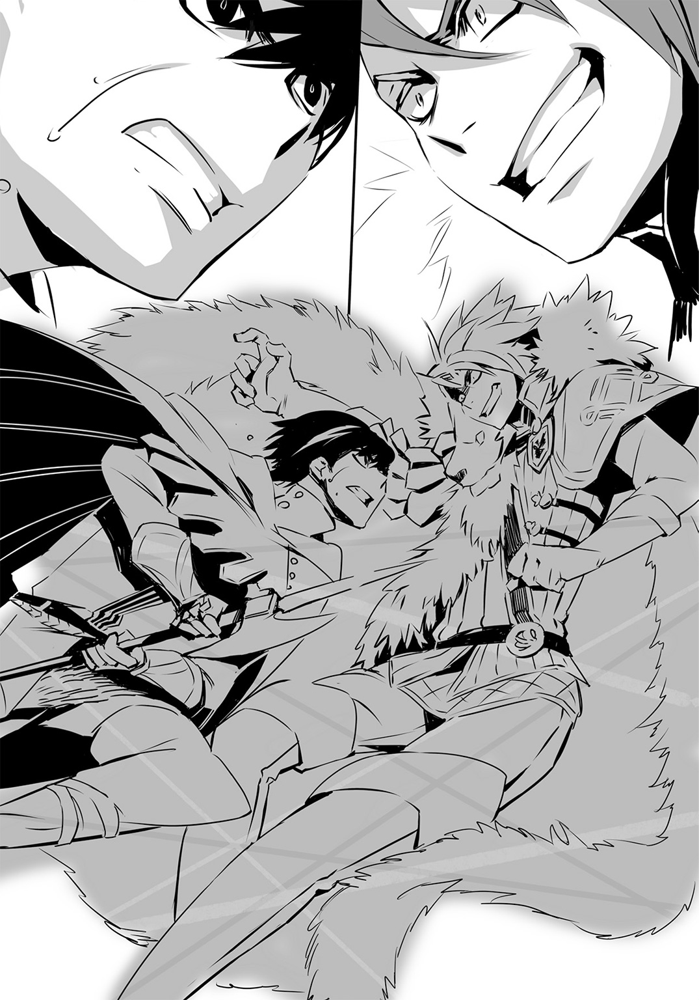
「舐めるな、少年。私は二度も同じ過ちを繰り返さない」
廃王ジークは悠然とハイジに向きなおり、右肩から脇腹までをさっと手でなぞってみせた。あのときハイジが負わせた傷の跡は、確実に残っているだろう。もしかしたら、死ぬまで消えることはないかもしれない。
「きみが私より速いことはすでに知っている。わかってさえいれば、対処は可能なのだよ」
そういうことか。
読まれたのだ。廃王ジークは自分の反応速度をハイジが上回ることを見越して、どう攻撃してくるか、予想を立てた。そして、反応したのではなく、その予想のもとづいて魔性を発動させ、ハイジの攻撃を防いだのだ。
一種の博奕ではある。タイミングや、ハイジの位置、角度など、予想が大きく外れていたら、廃王ジークの試みは失敗に終わっていただろう。
でも、廃王ジークはその博奕に勝った。しかも、微塵も恐れず、堂々と、自信満々で勝負してきた。
その結果、ハイジは武器を失ってしまった。
ハイジは姫と視線を交わした。ちらっとだが、その瞬間、ハイジは姫を見て、姫はハイジを見たのだ。
ハイジはいつだって姫を見たい。いつまでも。永遠に、ずっと見ていたいくらいだ。だから、見た。つい見てしまった。
でも、姫はなぜ、今、ハイジに目を向けてくれたのだろう？
わからない。ただ――、
幸せだった。
それはもう、途方もなく。
「......いやいや！」
ハイジは頭を振った。幸福感に浸っている場合じゃない！
怪物がこそこそと壇から下りようとしている。
「武器など不要。美しくない。それが私の信条だが――」
廃王ジークは懐から何かとりだした。金属製の短い筒に持ち手がついている。
「汚らわしく恥ずべき愚物には、むしろ醜い死こそがふさわしかろう」
筒の先が怪物に向けられた。
あれはもしや、銃なのか。小型の銃。いわば、短銃。
廃王ジークが短銃を操作する。火を噴いた。銃声が轟く。
「ごっ......！」
怪物がつんのめって、壇から転げ落ちた。銃弾はどこに当たったのか。ハイジには怪物の背中に命中したように見えた。そのときだった。
「うおおおおおおおおおおおおおおおおおおおおおぉぉぉぉぉぉぉぉぉぉぉぉぉぉぉらああああああああああああああああああああぁぁぁぁぁぁぁぁぁぁぁぁぁぁぁぁぁぁぁぁ......！」
廃王ジークに躍りかかる者がいた。跳び蹴り。エリカルリス大王妃......？
一瞬、目を疑った。エリカルリス大王妃は、ドレスを裂いたのだろう、両脚をあらわにしていた。それに、すごい形相だった。声も、まるで野獣のそれだ。――キレてます......？
どう見てもブチキレている。激昂することで剝きだしになった闘争本能が、エリカルリス大王妃を獣に変えたのか。
「ッ......!?」
廃王ジークはとっさに魔性を発動させずに横っ跳びして、エリカルリス大王妃をよけた。
「ちぇぇぇぇぇいやあああああぁぁぁぁぁぁぁぁぁぁぁぁぁぁぁぁぁ......！」
エリカルリス大王妃は廃王ジークを追撃――しないで、壇に踵落としをお見舞いした。陥没して、大理石が飛び散る。廃王ジークは、飛んできた大理石を魔性で爆発させて防御した。でも、エリカルリス大王妃はあっちに跳んでは踵落とし、そっちに跳んでは踵落とし。
「はあぁぁぁぁ！ ぬぁぁぁぁああ！ ずぁぁぁりゃああああ......！」
爆発。爆発。爆発。爆発。爆発。爆発。爆発。爆発。爆発。
「――くう......！ これは......！」
廃王ジークはたまらず後退する。
「〝空の彼方まで飛んでゆけ〟......」
姫が呟いた。
あれが、エリカルリス大王妃の魔性。
見ると、大王妃の両脚がとんでもないことになっている。最初に〝爆炎の叛逆者〟を食らったときに負ったのだろう火傷等々の傷は生々しく痛ましいが、あの筋肉。腿回りは、ハイジのウエストより太いかもしれない。大王妃は一貫して蹴り技しか使っていないので、脚部のみが強化される魔性なのだろう。
「なんとも厄介な......！」
廃王ジークはとうとう身を翻した。
「潮時か！ 目的は果たしたのでな......！ さらば！ 機会があれば、また会おう......！」
「虚仮にしくさってぇぇぇ......！ 逃がすかああああぁぁぁぁぁぁぁぁぁぁぁぁぁぁ......！」
大王妃は廃王ジークを猛追する。
ルルチナはまだ、リリスとやりあっているようだ。
ニカ大尉やボル軍曹、オーラン伍長らが壇に上がってきた。
大広間は混沌としているが、何しろ広すぎる。壇上から見渡すと、ごちゃごちゃと人が入り乱れているのは、ごくごくかぎられた狭い場所だけだ。他は奇妙なほどがらんとしている。楽団の者たちなどは、そうしたところに避難して固まっていた。
「中尉」
姫がハイジの左手に視線を向けた。
「その手」
「あっ、えっ、と、こ、これは――」
ハイジはとっさに左手を腰の後ろに隠した。
「な、なんでもないです......よ？」
「公女殿下」
ニカ大尉が姫の前に進みでて、軽く膝を折り、頭を垂れた。自分はあなたの臣であるという、大尉らしい簡潔な意思表示だろう。
「城外へ出ましょう。囚われている者がいます。彼らを救出して、すみやかに帰国を目指されるべきと考えます」
「......これだけじゃないってことですか？」
ボル軍曹が尋ねると、大尉はうなずいた。
「事実上の降伏勧告を無視した国主と跡継ぎを暗殺するだけですませるほど、帝国は甘くないだろう」
狗塚宮久手紘。
大尉は言っていた。敵対国を威圧、恫喝して、降伏させる、と。
つまり、こういうことか。
帝国はひそかにカバラ大王国に交渉を持ちかけた。形の上では和平を結ぼうとか何とか言ったかもしれないが、ようは降伏して帝国の支配下に入るよう求めたのだろう。すすんで帝国に降れば、民は奴隷の下民ではなく、人民扱いになる。大王は廃王として遇されるだろう。国として自治が認められた例はないはずだが、命は助かる。身分も、ある程度は保証される。
大王太子一派は、この話に乗ろうとしていた。
大王は反対だった。
そこで、大王と大王太子は賭けをした。
大王が賭けに勝ち、大王国は帝国の要求を拒否することになった。
現状維持、ということだ。アスタロス大王太子がサクラスティアリス公女を娶り、大王国にとっては形式上の臣国、実質的には保護国であるデスティニア公国との結びつきをさらに強化する。それが大王国の選択だった。
大王国にとって、正しい選択だったのか。それはハイジには判断できない。ただ、我がデスティニア公国としては、大王国が帝国に降っていたら、まずいことになっていた。
公国は現在、北の国境線で帝国と接している。大王国が帝国に寝返ったりしたら、そちらとの国境にも防衛線を敷かなければならなくなるのだ。兵力を移動させなければならない。現状では、公国・大王国間はほぼ素通りできるので、砦などの防衛拠点の建造も必要になるだろう。間違いなく大きな負担になる。
助かった。
――と、安心するのはまだ早いのだろう。
「ラウリ・ニカ大尉」
姫はしっかりと大尉を見据えた。
「あなたに従う。指示をして」
「ヤー」
大尉はにやっと笑った。この人がこんなに嬉しそうに笑うことがあるのか。意外だ。
ルルチナがまだリリスと斬り結んでいる。押しているようだ。大尉が落ちていた大王国兵士のものらしい剣を拾って、ハイジに投げてよこした。受けとって、リリスに詰め寄る。リリスは不利を悟って逃げた。
「――サクラ様......！」
「一緒に来て、ルルチナ！」
「はい......！」
ルルチナの声は湿っていた。詳しい事情を知りたいところだが、あとでいい。
大尉の指揮で、ハイジたちは大広間をあとにした。城内はほとんど迷路だ。でも、大尉の頭の中には見取り図が入っているようで、すいすい進むことができた。
城外に出ると、焦げ臭かった。見れば、下層市が煙に包まれている。あちこちに火の手が上がっていた。上層市も騒然としている。
「何が起こってるんだ......!?」
ボル軍曹が唾を飛ばして叫んだ。
「まずは救出する」
大尉はぶれない。仲間の監禁場所は、大尉が一部を、それからルルチナがおおよそぜんぶ把握していた。別行動はとらず、全員で行動した。はぐれるわけにはいかない。
ウォルフ兵長、ルメ兵長ら武官十一名は、上層市内の古い地下牢や塔に閉じこめられていた。警備はなきに等しかった。
ギチコはある館の地下室にいた。素っ裸だったので驚いて、ひどい傷を負っていたことに激しい怒りを覚えた。
「っ......！」
でも、姫の憤りは、ハイジの比じゃないだろう。ルルチナに介抱されているギチコを前にして、姫は地下室の床を蹴った。二度、三度と蹴った。そんなに強く蹴ったら、脚が壊れてしまう。皮膚が破れ、筋肉が弾けて、骨が砕ける。いや――壊れない。姫の躰は魔性に守られる。痛みだけが姫を苛むのだ。姫を責める。責め立てる。
止めないと。
しかし、ハイジが、他の誰かが制止する前に、姫は自分でやめた。
「......ギチコ」
「はふぇ......？」
「あなたがどう思っても、わたしのせい。ごめんなさい」
「あぁう......」
ルルチナに衣服を着せてもらったギチコは、傷が痛むようで、胸のあたりを押さえている。ハイジはもちろん、ちゃんと見たわけじゃない。でも、ちょっと切った、というような傷ではなかった。あれはおそらく、傷跡が残るだろう。
「わたしのそばにいたら、ろくなことがない。これからも、きっと。それでも――」
姫は睨みつけるようにまっすぐギチコを見た。
「わたしと一緒に来て欲しい。ギチコは、わたしの......きょうだい、みたいなものだから」
「おぉ......」
ギチコはずれた眼鏡の位置を直して、呟いた。
「あたし、サクラさまのおねえちゃん？ です？」
姫は首をひねってしばし考えこんでから、頭を左右に振った。
「それはなんか違う」
同感です。
館を出ると、上層市は本格的にてんやわんやの大騒ぎになっていた。貴族やその家族、従者たち、兵士たちが、わめいたり泣いたりしながら行き交っている。馬車が走っている。道が混雑していて、人々や馬車が立ち往生している。
日暮れが迫っている。黄昏時に落ちる影はいやに暗い。まばゆい夕陽と闇の競演が混乱に拍車をかけているのだろうか。
「好都合だ」
ニカ大尉は人通りの少ない裏道を選んだ。たしかに、この状況では誰もハイジたちに目をとめない。問題は、確実にごった返しているだろう「天国と地獄」の先にある大王門から、市外に出られるかどうか。
ハイジは右手で顔の汗をぬぐった。腰に吊している剣の品質はそこそこだが、ワイバーンには当然、及ぶべくもない。あれはアルトレッド中将からの預かり物で、いつかは返さないといけないとハイジは思っている。取り返せなかったのは痛いが、さすがに剣を探したいとは言いだせない。――痛い、といえば。
ふいてもふいても、どんどん汗が出てくる。
歯を食いしばっていないと、変な声がもれそうだ。
左手は、肘を曲げて、腹のあたりに添えている。腕を振って走るのはとても無理だ。正直、左腕は少しも動かしたくない。本当は一切、衝撃を与えたくない。
傷は見ないようにしている。どうなっているのか、正確にはわからない。
ただ、出血は止まっていないようだ。それは感じる。
我慢だ。我慢しろ。
いや、忘れろ。
今はすっかり忘れてしまえ。
こんな痛み、姫のご心痛に比べれば、どうということもない。
「痛いの？」
気がついたら、姫が隣にいた。
知らぬ間に下を向いていたのだ。何をやってるんだ！ こんなことじゃあ、姫のお役に立つことなんかできない。夢のまた夢だ。しかも、気遣っていただいて！
姫が！
気遣ってくれている！
――くそ！
嬉しい！ どうにかなってしまいそうだ！
「ぜんぜんです！」
ハイジは精一杯どころか限界を超えた笑顔を作ってみせた。
「痛くなんて、まったく！ むしろ、気持ちいいです！」
「......変態なの？」
「えっ!? ち、違いますよ!? き、気持ちいいというのは、そういう意味じゃなくて......つ、つまり、あの......」
しかしながら、気持ちいいというのも、あながち噓じゃなかったりする。
だって、ここに姫がいるのだ。すぐ近くにいる。お声をかけてくださった。しかも、しかも、だよ？ 見てよ！ いや、ある意味、誰にも見て欲しくないのだが、見て欲しい！ 見ないと損、大損だ。ハイジが思うに、生まれてきた意味の半分以上を喪失する。
花嫁姿ですよ......！
真っ白い、純白の花嫁衣装が、これほどまでに似つかわしい存在が、果たしてこの世にあるだろうか、いやない、決してありはしない、あってたまるか、ないったらないんだ、誰が何と言おうと絶対的にありえない......！
これはもう、眼福なんてものじゃない。僥倖だ。幸甚だ。至福だ。最高。最上級、最大級の幸せだ。今のハイジ・バランは、地上に並び立つ者とていない果報者だ。
それはもう、ね。
気持ちいいですよ。
うっとりしちゃいますよ。
恍惚ですよ。
これが多幸感というやつか、てなものです。
「......だ、だからその、ひ、姫がいらっしゃるので、た、たとえ多少、いくらか、痛いとか、あったとしても、そんなもの吹っ飛んじゃうというか......！ いやあの、変な意味じゃないんですけど、事実そうだっていうか、ありのままっていうか、な、何言ってるんでしょう僕、わかんなくなってきたぞ、やばいやばいやばい......！」
「変な人」
「で、ですよねええ！ ぼ、僕も思います！ 我ながら、おかしい......」
「そうね」
「すみません！ ですけど、お役に立ちます！ 姫のためなら何でもしますので！ うおっ、またこんなこと言って、ああああああの、そそそそそそうだ、僕、筆頭衛士なので......！」
「知ってる。一応」
「ですよねえ......！」
「変な人ばっかり」
姫は周囲を見回して、一瞬、泣きそうな顔をした。今にも泣きだしそうで、そのまま泣いてしまうんじゃないかと思わずにいられない表情だったが、悲しそうではなかった。苦しそうでもなかった。
それがハイジには、この上なく嬉しかった。こんなとんでもないことになっているのに、なんだか喜んでばかりだ。いいのか？ 馬鹿なんじゃないのか？
馬鹿かもしれない。まあ馬鹿だ。べつに、馬鹿でもいい。
姫がいれば、何だっていい。
「わたし」
いてくれるだけでいい姫が、ハイジのほうは見ずに、前を向いて、ぽつりとこぼすように、小声で言った。
「中尉のこと、嫌いなのかと思ってた」
「――えっ..................――」
それ
って......
え
なに
どう いう...... こと ......？
嫌い、
――って、誰が？
それは、姫、だろう。
嫌い、の主語は、姫。あたりまえだ。それ以外、ない。
姫は、中尉、すなわち、ハイジのことが、嫌い。
ハイジはうなずいた。
死にます。
今、死にます。ここで、死にます。なんとしても、死にます。どうやってでも、死にます。
ハイジ・バラン、死なせていただきます！
かえってすがすがしいほどだった。それ以外に道はないと、素直に、心から思えた。何の悔いもない。あるわけがない。姫に嫌われたのなら、死ぬしかない。生きていたってどうしようもないのだ。
ハイジは回れ右をしようとした。姫の前でこれ見よがしに自死するような、みっともない、迷惑な真似はしない。どこかに行って、一人で静かに死のう。――そうしようとした。
「違ったみたい」
姫が、さっきよりもっと小さな声で、そっと言った。
ハイジは即座にふたたび、うなずいた。
生きます。
これからも生きます。姫のために生きます。姫のためだけに生きてゆきたいです。
ハイジ・バラン、生きさせていただきます！
尽くそう。尽くさせていただこう。ハイジは公国の一軍人にすぎない。命令、立場、難しいことはいろいろあるだろう。それでも全力を尽くそう。できるかぎり、いや、できる以上のことをなんとかやろう。やらなきゃ！ やりたいし！
ハイジはこの瞬間、はっきりと自覚したのだった。
世界中に宣言したいが、一生、自分の胸に秘めておくしかない思いだ。相手が相手だけに。ハイジにも分別はある。それくらいのことは弁えている。
でも、秘めておくのならば、持ちつづけていてもいいはずだ。誰も文句は言わないだろうし、言わせはしない。
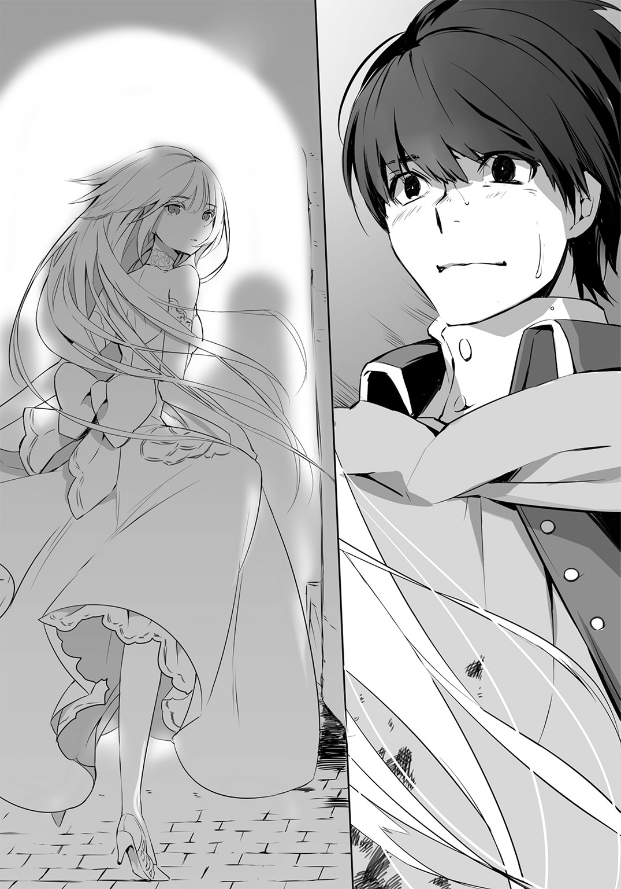
――姫。
サクラスティアリス・デスティニアリス殿下。
ハイジ・バランは、姫のことを、お慕い申し上げています。
大好きです。恋しています。愛している、と言ってもいいと思います。どうせ誰にも言わないので、断言しちゃいます。
僕は姫を愛しています！
ついでに言うと、生涯、愛しつづけます。
もちろん、姫だけを。
つい、いいですよね......？ と、許可を求めてしまいたくなる。が、しない。許しなんか、いらない。
たとえ神が許さなくても、ハイジはもう決めたのだ。決めざるをえなかったのだ。
しょうがないのだ。
愛してしまったのだから。
何があろうと、何者も、この愛の火を消すことはできない。
死なないぞ、とハイジは自分に言い聞かせた。この先、たとえ姫に嫌われようと、死にはしない。姫のためにできることが何か一つでもあるかぎりは、生きながらえて、それをやる。目障りだ、消えろと言われたら、身を隠して姫のためにできることを探す。それがハイジの愛だ。貫いてやる。
まずは脱出だ。大王門をくぐって大王都カバラに入り、天国と地獄から上層市に足を踏み入れてしばらくは、なだらかな坂道がまっすぐつづく。下から見上げると空に昇ってゆくような印象を受けることから、天空大道、との呼び名がある。その天空大道に出てしまえば、あとは市外まで一本道だ。
もうすぐだろう。たぶんこの角を曲がって、直進すれば――、
「うわ......！」
まずい。見るからにやばい。
人だ。ものすごい数の人が天空大道にひしめきあっている。一応、市外に向かって流れてはいるようだが、風のない日の雲のように遅い。
ニカ大尉はそれでも黙って天空大道までハイジたちを導いた。あの人波に揉まれながら市外に出るとなると、そうとう時間がかかりそうだ。とはいえ、どうしようもない。他に方法がないのだ。少なくともハイジが知るかぎり、天空大道を通らなければ大王門まで行きつくことはできない。
数千、いや、数万人の、恐れ、難渋し、弱り果て、怒り、度を失い、悪態をつき、罵りあい、押しのけあおうとする雑踏に巻きこまれて、数十台、それ以上の馬車が動けなくなっている。この中に突入するのはちょっと勇気がいるが、やむをえない――のか。
「......抜け道は、ありません」
ルルチナは眉間に皺を寄せて、唸るように言った。
「道以外も――たとえば、上層市の下水道は下層市のものとは繫がっていませんし、排水口は海側にあり、そこからは侵入できないようになっています。外に出ることも、当然できません。大王のための隠し通路があるという噂はまことしやかに囁かれていますが、仮に存在したとしても厳重に秘匿されているでしょう」
ルルチナの話を聞いているのか聞いていないのか、ニカ大尉はどこか遠くを眺めている。
気になって、ハイジは大尉の視線の先に目をやった。
大尉は、人や馬車で埋めつくされている天空大道ではなく、その向こうを見ているようだ。この脇道は天空大道より少し高くなっていて、見晴らしがきく。おかげで、上層市の下に広がる下層市や、その先に果てなくつづく海も、ここからは望むことができた。
海。
宵闇に沈もうとしている海に、たくさんの船影が散らばっている。
ハイジは、船については詳しくない。それどころか、ほとんど知らない、と言ってもいいくらいだ。だから、遠目に見たままのことしかわからない。
どうやら、ハイジたちが下層市に入りこむ際に使ったような小舟ではないらしい。もっと大きな船だ。
下層市の港から外海へ向かう船は、きわめて少ない。大半の船は外海から下層市に向かっている。奇妙だ。港から多数の船が避難しようとしているのなら納得できるが、その逆とはどういうことだろう？
あの百隻をゆうに超えそうな船は――船団は、いったいどこから来たのか？
そして、あれは......？
「......島？」
ハイジは何度かまばたきをした。島。そう見える。
水平線の近くだ。
島が浮かんでいる。
無人島ではないようだ。島中に明かりが灯っている。でも――あっただろうか？
あんな場所に、島が？
ハイジの記憶にはない。あったら、覚えているはずだ。
「違うな。島じゃない」
ニカ大尉が頭を振った。
「信じがたいが、あれは船だ」
あとがき
僕は酒をたしなみます。煙草はやりません。ずいぶん前にやめました。酒はたいてい家で、一人で飲みます。外ではあまり飲みません。一緒に飲む相手がいないのです。つまり友だちがいません。皆無というわけではなくて、あまりいないということです。
最近ではそういった機会もめっきり少なくなりましたが、以前はたまに友人知人と酒を飲みに行くこともありました。当時、僕は札幌市に住んでいました。北海道の道庁所在地、札幌です。僕は知人に誘われて飲みに行きました。そこはおしゃれというかポップなバーでした。なんでも大泉洋とパフィーがよく来店するとのことでした。大泉洋は俳優として大活躍しておりますので、ご存じかと思います。パフィーも一世を風靡した女性歌手グループですから、まあ聞いたことくらいはあるのではないでしょうか。パフィーといえば遠くアメリカなどではアニメのキャラクターとなり、契約によって長らく髪型を変えることができなかったそうです。そのような話を聞き及びました。さすが契約社会アメリカです。契約によって個人のヘアスタイルまで規定してしまう。なんとも凄まじい話ではありませんか。全ては契約、そして金であると言わんばかりです。ところでパフィーのアニメ、僕は見たことがありません。
ともあれ、その大泉洋やパフィー行きつけであるというバーに僕は酒を飲みに行ったのでした。たしかに何かこう、普通ではないというか尋常ではないというか、そうした雰囲気のあるお店でした。「パフィーはどこに座りますか」「アミですかユミですか」「ではアミで」「アミでしたらそちらです」「ほう、なるほどこの席にアミが」「座られますか」「いえ、座りません」「そうですか」「ええ、僕はアミではありませんから」「お見受けしたところ、ユミでもありませんね」「ご慧眼！ よくわかりましたね」「長いですから」といった会話をお店の人としたような記憶は一切ありません。それはそうです。僕はシャイでして、初対面の人と親しく会話を交わすなどといった芸当はできないのです。僕が覚えているのはその店の中が全体的にピンク色っぽかったことと、ブランコのような吊り下げ型の長椅子席があったこと、あとは、とても退屈だったことです。僕は知人に連れられてその店に行ったのですが、それが誰だったかどうしても思い出すことができません。さりとて見知らぬ他人とそのような店に行くとは考えづらく、友人ならば（総数が非常に少ないので）全員覚えていますから、さして親しくもない人と何かの弾みでその店に行き、会話は弾まず、気まずかったのではないかと思います。
さて、紙数が尽きました。前担当のＫ前編集長、担当の編集者Ｔ氏、編集者Ｍ氏、すばらしすぎるイラストを描いてくださった吟さん、デザインを担当してくださったＶＯＬＡＲＥの関善之さん、その他、本書の制作、販売に関わった方々、そして今、本書を手にとってくださっている皆様に心からの感謝と胸一杯の愛をこめて、今日のところは筆をおきます。
十文字 青
Ax 少女のあどけない野心 LADY BE AMBITIOUS
禁衣を身につけ、頭冠を被った見目麗しい貴人が、歩行鳥の背に乗っている。
ただの貴人ではない。彼女は咎埜不人の主人だ。
ちなみに、不人の比類ない主人はしかめ面をしている。ご機嫌斜めだ。
歩行鳥ではなく馬に乗った不人が隣でじっとその横顔を見ていると、主人に睨まれた。
「何だ。さっきからじろじろと。無礼だな」
不人は主人から目をそらしただけで何も言わなかった。主人が不人の脚を蹴った。
「黙っているやつがあるか。何とか言え」
「......蹴らないでください」
「おまえを蹴ろうと殴ろうと、私の自由だ。違うか、咎埜」
「......違いませんが、文句を言うのはおれの自由です」
「口がついているからな」
「......ええ。このとおり、一応、喋れます」
「憎たらしい口だ」
「......すみません」
「おまえ、ちっとも悪いと思っていないだろう」
「......はい」
「悪党め」
不人を罵倒しながらも、主人は満更でもなさそうだ。
天下の奇人にして傑人と謳われた先代亞璃簾宮家当主の嫡孫で、その秘蔵っ子と目され、敬愛されるより敬遠されて育った。主人にしても、自身と比べて明らかに愚鈍な俗物たちを、受け容れるよりは遠ざけようとした。先代がそういう人物だった。主人は先代を手本とし、一歩か二歩引いたところから愚物たちを観察して反面教師とし、自ら成長した。
主人は、いわゆる子供らしさとは無縁だった幼年期を、後悔してはいまい。しかし、間違いなく、素顔の主人にはあどけないまでの稚気がある。主人の中には一人の少女がいるのだ。幼女と言ってもいいかもしれない。
人も幼いころは子犬同士のようにじゃれあう。それはおそらく、やがて大人になるために必要な過程なのだろう。主人はその道を通らなかった。今、不人を相手に、遅まきながら他者とたわむれている。
それが主人の欲求であるのなら、不人は叶えるだろう。
不人も主人と同じく、子犬のような時代を持たなかった。だが、そうした子供たちを遠くから見て、痛切にうらやんでいた。だから、子犬の所作を知っている。演じることはできる。
「......腹の虫は収まりましたか」
「ぜんぜん」
主人はいやそうにため息をついた。
「狗塚宮が野心家だということはわかっていたが、あそこまでとはな。私ともあろう者が、彼の動きをまったく察知できなかった」
「......亞璃簾様は中央におられない。やむをえないのでは」
「父を介して、情報は収集するようにしている。おまえだってそれは知っているだろう。まあ、味方はいても、有能な者はそう多くない。わかってはいたんだがな。それにしても、まさか本島を使うとは！」
「......お悔しいようで」
「あたりまえだ。私は思いつきもしなかったんだぞ」
主人は親指の爪を嚙もうとして、やめた。
「たしかに、本島の航海能力と航続距離なら、東大陸を南回りで移動して、カバラ大王国を直接衝くことも可能なんだ。途中、敵対国の海軍と遭遇したとしても、粉砕できる。本島と搭載艦だけで、軍艦二百隻分の戦力に相当すると言われているからな。可能は可能だが、本島を動かすという選択肢が、私の頭には浮かばなかった。本島は、我が帝国の本拠地にして、ときには主上がおわすこともある、いわば海上の御座だからな」
「......狗塚宮の政治力を侮っていましたか」
「それもある。気鋭、辣腕で名高いとはいえ、まだ二十九で、臣四位だ」
「......亞璃簾様は、十七歳で、臣九位です」
「ああ、そのとおりだ！ 十二年あれば、私はもっと高みに昇れる。二十九は若いが、若すぎはしない。狗塚宮は寒嶄公とも近しいしな。今回の仕掛けだって、寒嶄公が中心になって進めたということになっている。どう考えても立案者は狗塚宮だが。あれくらいのことはやってのけられる男だと、私は想定しておくべきだったんだ」
寒嶄公は臣一位にあり、主上に拝謁して上奏できる。帝国において公と称される三臣の一人だ。もっとも、当年とって七十七歳で、最近は出仕することも多くないと聞く。寒嶄公自身がこれほど大胆な侵略作戦を企図してのけるとは思えない。
「......大王国は陥ちますか」
「陥ちるだろうな。三公国から横槍が入るに違いないし、全土を掌握するには多少時間がかかる。だが、大王都は我が帝国のものとなるだろう。これは大きい。カバラの保護下で密かに生きながらえているともいう真人が、大王都にいる可能性もあるし」
「......我が帝国も、真人の力を？」
「馬鹿な。あれは本来、ふれてはならないものだ。レビテの正史にはない、秘史の記載だが、真人と交わって生み落とされた者の大半は、見るもおぞましい怪物でしかなかった。人の皮を被った化物として生まれたのは、数十人に一人だとか。中には、真人と交接しただけで心身に異常を来した人間もいるらしい。咎埜、おまえなら、やるか？」
「......いいえ」
「私も御免だ。現存するなら、一度、この目で見てみたい。興味はあるが、それだけだな。とはいえ――」
主人は手綱を使わず両脚を締めて、歩行鳥を止めた。
「正史も、秘史も、正しいとはかぎらない。何せ、大昔のことだ。真相が別にあるのなら、是非とも知りたい」
銀色の瞳に異様な燦めきが灯っている。
この人なら、やるだろう。
不人はそう確信した。御免だと言っていたが、噓だ。その機会があれば、主人はやる。真人と交わり、子をなそうとするに違いない。恐ろしいことだが、不人はおそらく、制止できないだろう。いや、できない、のではない。しないのだ。
歴史も、倫理も、人心も、自分の感情や思想も、突き詰めれば、不人には関係ない。
主人が望むままになし、望みどおりに生きる。
それが不人にとって、唯一絶対の揺るがない正義なのだ。
不人は馬上で振り返った。全軍が停止している。
臣位を持つ軍士と操手、あわせて五百余名。
重装の甲機士、突撃兵装の乙機士、射撃装の丙機士に、特殊兵装の丁機士を加えて、総勢二万人。
以上が、亞璃簾宮太華子率いる五百十七侵攻団の軍容だ。
五百十七侵攻団は、アンヌー連峰とフェレン岩山地の合間にあるダル陸峡を、フェレン岩山地の裾にある小高い丘から見下ろしている。
西のアンヌー連峰はサーン国の領土で、東のフェレン岩山地はデスティニア公国領だ。いずれもきわめて険しく、熟練した登山者でなければ越えられない。
サーンと公国は過去、何度もダル陸峡を巡って争い、奪いあってきたが、ここしばらくは双方ともに領有権を主張しない形で落ちついている。
五百十七侵攻団はこれよりダル陸峡に突入して、デスティニア公国に攻めこむ。公国北西の守備の要であるウェスホーン城市は堅固だし、公国軍最精鋭の呼び声も高い第二公軍が配置されているのに加え、三一旅団、六四旅団の支援もえられる。ウェスホーン城市を抜くのは容易ではない。至難といっても過言ではないだろう。
五百十七侵攻団は、それでもウェスホーン城市を衝く。程なく、五百十八侵攻団、五百二十一侵攻団が参戦するだろう。
それだけにとどまらない。
二百六、三百十一、三百二十五、三百五十、四百二十一、四百五十二、四百九十三各侵攻団が、デスティニア公国の北国境線に順次押し寄せる。
各侵攻団は、攻撃が停滞したら退き、態勢を立てなおしてはまた進撃し、攻めあぐねればただちに後退するだろう。
公国軍が疲弊し、破綻するまで継続する本作戦は、臣二位太軍師の卯立豊衛が発案、文書により主上に奏上して裁可をえたことになっている。
当代亞璃簾宮家当主である亞璃簾宮日羅富の、娘・太華子に対する無条件の信頼と無私の愛が、その結果としての懸命な努力、人脈を駆使した奔走が、卯立を動かしたのだった。
むろん、絵図を描いたのは亞璃簾宮太華子、不人の主人だ。
「狗塚宮を援けることになってしまうな」
主人は軽く肩をすくめた。
「まったく気にくわない」
「......勝利は勝利です」
不人は少し考えてから付け足した。
「......あなたの勝利は、あなたのものだ。おれはそれを知っています」
「おまえにもおすそわけしてやろう」
主人は双眼を銀色に煌めかせて、微かに笑った。
「号令をかけろ、咎埜。私は大きい声を出したくない」
to be continued.
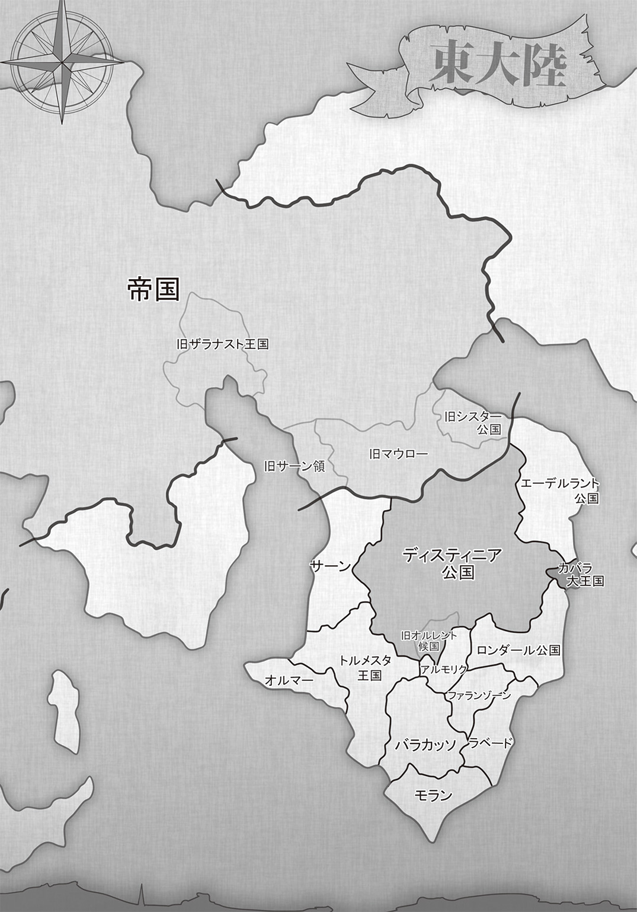
著者紹介
十文字 青 じゅうもんじ あお
函館中島町にあるラムズイヤー。カレー屋さんです。ここのマトンカレー。僕は羊肉が好きで羊のカレーもたまに食べますが、こんなに羊感たっぷりで満足したのは初めてです。素晴らしい。カツカレーも気になる......。
illustration
吟 ぎん
もしも魔性の力があったら何をするかな。どのキャラの魔性がほしいかな。と考えたんですが、正直あんまりほしい魔性がないな......ということに気がつきました。普通が一番！
ダッシュエックス文庫DIGITAL
サクラ×サク ０３
慕情編
著者 十文字 青
© AO JUMONJI 2015
２０１５年９月30日発行
この電子書籍は、ダッシュエックス文庫「サクラ×サク ０３ 慕情編」
２０１５年８月30日発行の第１刷を底本としています。
発行者 鈴木晴彦
発行所 株式会社 集英社
〒１０１－８０５０
東京都千代田区一ツ橋２丁目５番10号
０３－３２３０－６０８０（読者係）
編集協力 森山修平
制作所 株式会社ＩＣＥ
本作品の全部また一部を無断で複製、転載、改竄、インターネット上に掲載すること、および有償無償に関わらず、本データを第三者に譲渡することを禁じます。なお個人利用の目的であっても、コピーガードを解除しての複製は、法律で禁じられています。